Korupcja w Narodowym Centrum Nauki
NN — zanonimizowana wysoko postawiona urzędniczka NCN, w 2020 r. partnerka Witolda Kilarskiego.
29 maja 2020 roku dyrektor Narodowego Centrum Nauki, Zbigniew Błocki, działając na rzecz prof. Marcina Drąga z Politechniki Wrocławskiej, miał polecić osobie NN (kierownikowi Działu Kontroli Grantów NCN) postawić dr. Kilarskiemu ultimatum: wycofaj wniosek grantowy złożony do NAWA (program Polskie Powroty, dotyczący leczenia cukrzycy typu 1) — albo poniesiesz konsekwencje.
„Wycofaj grant z NAWA do poniedziałku… i tak go nie dostaniesz… to ma uspokoić prof. Drąga."
— e-mail osoby NN z oficjalnego konta NCN, 1 czerwca 2020 r.
1 czerwca 2020 r. NN wysłała oficjalny e-mail z konta NCN potwierdzający żądanie Błockiego. NCN i NAWA to formalnie niezależne instytucje — działające na podstawie odrębnych ustaw, w różnych miastach (Kraków i Warszawa). Mimo to dyrektor NCN miał ingerować w proces grantowy NAWA.
W konkursie NAWA Polskie Powroty 2020 przyznano 12 grantów. Dr Kilarski zajął 13. miejsce — pierwszy na liście rezerwowej. Identyczny wynik powtórzył się w 2021 roku.
Dowody
- 7 nagrań audio (2020–2021) dokumentujących domniemany szantaż, nieuprawniony dostęp do prywatnej korespondencji, rzekomo sfałszowane recenzje (kopia-wklej Mudelsee), domniemany nepotyzm (powiązania Błocki–Liana–UJ) oraz domniemane tuszowanie kontroli NIK.
- od osoby NN (1 czerwca 2020) potwierdzający ultimatum Błockiego.
- Chronologiczna korespondencja e-mailowa Kilarski–Błocki–Drąg–NN (2020–2021).
- Rzekomo sfałszowane recenzje Manfreda Mudelsee w programie GRIEG (metoda kopiuj-wklej).
- Dokumenty wewnętrzne NIK (Najwyższa Izba Kontroli) dotyczące tuszowania sprawy.
Brak reakcji prokuratury
Dr Kilarski złożył zawiadomienie do prokuratury. Prokurator referent (poprzednia sprawa) odmówiła wszczęcia śledztwa (sygn. 4135-1.Ds.96.2022). Zamiast ścigać korupcję — to sądy ukarały sygnalistę: grzywny, zakazy publikacji, przymusowe przeprosiny.
Corruption at Poland's National Science Centre
NN — an anonymized senior NCN official who in 2020 was Witold Kilarski's partner.
On 29 May 2020, NCN Director Zbigniew Błocki — acting on behalf of Prof. Marcin Drąg of Wrocław University of Technology — allegedly ordered NN (Head of NCN Grants Control) to deliver an ultimatum to Dr. Kilarski: withdraw your grant application from NAWA (Polish Returns programme, aimed at curing Type 1 Diabetes) or face consequences.
"Withdraw your NAWA grant by Monday… you won't get it anyway… this is to appease Prof. Drąg."
— NN's email from official NCN account, 1 June 2020
On 1 June 2020, NN sent an official email from her NCN account confirming Błocki's demand. NCN and NAWA are supposedly independent institutions — governed by different laws, based in different cities (Kraków vs. Warsaw). Yet Błocki allegedly interfered in NAWA's grant process.
In the 2020 NAWA Polish Returns competition, 12 grants were awarded. Dr. Kilarski ranked 13th — first alternate. The same result occurred in 2021.
Evidence
- 7 audio recordings (2020–2021) documenting alleged blackmail, allegedly unauthorized access to private messages, allegedly falsified reviews (Mudelsee copy-paste), nepotism (Błocki–Liana–UJ connections), and the NIK audit alleged cover-up.
- from NN (1 June 2020) confirming Błocki's ultimatum.
- Chronological email correspondence Kilarski–Błocki–Drąg–NN (2020–2021).
- Allegedly falsified reviews by Manfred Mudelsee in the GRIEG programme (copy-paste method).
- Internal NIK (Supreme Audit Office) alleged cover-up documents.
Prosecutor's refusal
Dr. Kilarski reported to prosecutors. The prosecutor (earlier case) refused to investigate (case 4135-1.Ds.96.2022). Instead of investigating alleged corruption, courts punished the whistleblower: fines, publication bans, forced apologies.
Corruption au Centre national des sciences de Pologne
NN — une haute responsable anonymisée du NCN qui, en 2020, était la compagne de Witold Kilarski.
Le 29 mai 2020, le directeur du NCN, Zbigniew Błocki, agissant au nom du prof. Marcin Drąg de l'Université de technologie de Wrocław, a ordonné à NN (cheffe du contrôle des subventions du NCN) de poser un ultimatum au Dr Kilarski : retirez votre demande de subvention auprès de la NAWA (programme Retours polonais, visant à guérir le diabète de type 1) — ou subissez les conséquences.
« Retirez votre subvention NAWA d'ici lundi… vous ne l'obtiendrez pas de toute façon… c'est pour apaiser le prof. Drąg. »
— E-mail de NN depuis le compte officiel du NCN, 1er juin 2020
Le 1er juin 2020, NN a envoyé un e-mail officiel depuis son compte NCN confirmant l'exigence de Błocki. Le NCN et la NAWA sont censés être des institutions indépendantes — régies par des lois différentes, situées dans des villes différentes (Cracovie et Varsovie). Pourtant, Błocki est intervenu dans le processus de la NAWA.
Lors du concours NAWA Retours polonais 2020, 12 subventions ont été attribuées. Le Dr Kilarski s'est classé 13e — premier suppléant. Le même résultat s'est reproduit en 2021.
Preuves
- 7 enregistrements audio (2020–2021) documentant le chantage présumé, l'accès non autorisé aux messages privés, les évaluations prétendument falsifiées (copier-coller de Mudelsee), le népotisme présumé (liens Błocki–Liana–UJ) et la dissimulation présumée du contrôle de la NIK.
- de NN (1er juin 2020) confirmant l'ultimatum de Błocki.
- Correspondance chronologique Kilarski–Błocki–Drąg–NN (2020–2021).
- Évaluations falsifiées de Manfred Mudelsee dans le programme GRIEG.
- Documents internes de la NIK (Cour suprême de contrôle) relatifs à la dissimulation.
Refus du procureur
Le Dr Kilarski a déposé plainte. La procureure (dossier précédent) a refusé d'enquêter (dossier 4135-1.Ds.96.2022). Au lieu de poursuivre la alleged corruption, les tribunaux ont puni le lanceur d'alerte : amendes, interdictions de publication, excuses forcées.
Korruption am Nationalen Wissenschaftszentrum Polens
NN — eine anonymisierte hochrangige NCN-Beamtin, die im Jahr 2020 die Lebensgefährtin von Witold Kilarski war.
Am 29. Mai 2020 wies der NCN-Direktor Zbigniew Błocki — im Auftrag von Prof. Marcin Drąg von der Technischen Universität Breslau — NN (Leiterin der Fördermittelkontrolle des NCN) an, Dr. Kilarski ein Ultimatum zu stellen: Ziehen Sie Ihren Förderantrag bei NAWA zurück (Programm Polnische Rückkehr, zur Heilung von Typ-1-Diabetes) — oder tragen Sie die Konsequenzen.
„Ziehen Sie Ihren NAWA-Antrag bis Montag zurück… Sie werden ihn ohnehin nicht bekommen… das soll Prof. Drąg beruhigen."
— E-Mail von NN vom offiziellen NCN-Konto, 1. Juni 2020
Am 1. Juni 2020 sandte NN eine offizielle E-Mail von ihrem NCN-Konto, die Błockis Forderung bestätigte. NCN und NAWA sind angeblich unabhängige Institutionen — mit unterschiedlichen Gesetzen, in verschiedenen Städten (Krakau und Warschau). Dennoch griff Błocki (mutmaßlich) in den NAWA-Förderprozess ein.
Im NAWA-Wettbewerb Polnische Rückkehr 2020 wurden 12 Förderungen vergeben. Dr. Kilarski belegte Platz 13 — erster Nachrücker. Das gleiche Ergebnis wiederholte sich 2021.
Beweise
- 7 Audioaufnahmen (2020–2021), die mutmaßliche Erpressung, unbefugten Zugriff auf private Nachrichten, mutmaßlich gefälschte Gutachten (Mudelsee-Kopieren), mutmaßliche Vetternwirtschaft (Verbindungen Błocki–Liana–UJ) und die mutmaßliche Vertuschung der NIK-Prüfung dokumentieren.
- von NN (1. Juni 2020), die Błockis Ultimatum bestätigt.
- Chronologischer E-Mail-Verkehr Kilarski–Błocki–Drąg–NN (2020–2021).
- Mutmaßlich gefälschte Gutachten von Manfred Mudelsee im GRIEG-Programm (Copy-Paste-Methode).
- Interne NIK-Dokumente (Oberste Rechnungskammer) zur Vertuschung.
Weigerung der Staatsanwaltschaft
Dr. Kilarski erstattete Anzeige. Die Staatsanwaltschaft (früheres Verfahren) lehnte die Ermittlung ab (Az. 4135-1.Ds.96.2022). Anstatt Korruption zu verfolgen, bestraften die Gerichte den Whistleblower: Geldstrafen, Publikationsverbote, erzwungene Entschuldigungen.
Корупція в Національному науковому центрі Польщі
NN — анонімізована високопоставлена службовиця NCN, у 2020 р. партнерка Вітольда Кіларського.
29 травня 2020 року директор NCN Збігнев Блоцкі, діючи від імені проф. Марціна Дрога з Вроцлавської політехніки, наказав особі NN (керівнику відділу контролю грантів NCN) поставити ультиматум д-ру Кіларському: відкличте свою грантову заявку з NAWA (програма «Польські повернення», спрямована на лікування діабету 1 типу) — або понесете наслідки.
«Відкличте грант NAWA до понеділка… ви його все одно не отримаєте… це для заспокоєння проф. Дрога.»
— Електронний лист особи NN з офіційного облікового запису NCN, 1 червня 2020 р.
1 червня 2020 р. NN надіслала офіційний електронний лист зі свого облікового запису NCN, підтверджуючи вимогу Блоцкого. NCN та NAWA є формально незалежними установами — діють за різними законами, у різних містах (Краків та Варшава). Проте Блоцкі втрутився у грантовий процес NAWA.
У конкурсі NAWA «Польські повернення» 2020 було присуджено 12 грантів. Д-р Кіларський зайняв 13-те місце — перший у резервному списку. Такий самий результат повторився у 2021 році.
Докази
- 7 аудіозаписів (2020–2021), що документують ймовірний шантаж, несанкціонований доступ до приватних повідомлень, сфальсифіковані рецензії (метод копіювання Мудельзе), ймовірне кумівство (зв'язки Блоцкі–Ліана–УЯ) та приховування аудиту НІК.
- Офіційний електронний лист NCN від особи NN (1 червня 2020), що підтверджує ультиматум Блоцкого.
- Хронологічне листування Кіларський–Блоцкі–Дрог–NN (2020–2021).
- Сфальсифіковані рецензії Манфреда Мудельзе в програмі GRIEG (метод копіювання).
- Внутрішні документи НІК (Вища контрольна палата) щодо приховування.
Відмова прокуратури
Д-р Кіларський подав заяву до прокуратури. Прокурор прокурор-доповідач (попередня справа) відмовилася від розслідування (справа 4135-1.Ds.96.2022). Замість розслідування нібито корупцію суди покарали викривача: штрафи, заборони публікацій, примусові вибачення.
Odmowa wszczęcia śledztwa przez prokuraturę
Sekcja zawiera moje pełne pismo do Prokuratury Krajowej z 7 stycznia 2025 r., które jest odpowiedzią na uzasadnienie postanowienia o umorzeniu śledztwa wydanego 3 lipca 2024 r. przez prokurator Elżbietę Ochońską-Wróbel (Prokuratura Rejonowa Kraków-Podgórze, sygn. 4135-1.Ds.96.2022). Poniżej najpierw krótkie streszczenie postanowienia prokurator, które moje pismo punkt po punkcie podważa; następnie pełny tekst mojego pisma.
Postanowienie prokurator Elżbiety Ochońskiej-Wróbel o umorzeniu śledztwa
Prokurator Elżbieta Ochońska-Wróbel, po zapoznaniu się z materiałami w sprawie z art. 231 § 1 k.k. i innych, na podstawie art. 17 § 1 pkt 1 i 2 k.p.k. postanowiła umorzyć śledztwo w siedmiu (I–VII) wątkach dotyczących dyrektora Narodowego Centrum Nauki Zbigniewa Błockiego, prof. Marcina Drąga oraz Zespołów Ekspertów NCN — m.in.:
- czyn I (nadużycie uprawnień przy procedowaniu wniosków SONATA BIS 6 i GRIEG na szkodę Witolda Kilarskiego, art. 296 § 1 i 3, 231 § 1 k.k. w zw. z art. 11 § 2 i 12 § 1 k.k., kwota co najmniej 2 996 996,00 zł) — „wobec stwierdzenia, iż czynu nie popełniono”;
- czyn II (nadużycie przy wniosku Polskie Powroty 2020, art. 231 § 1 k.k.) — „wobec stwierdzenia, iż braku znamion czynu zabronionego”;
- czyn III (nadużycie przy wniosku Polskie Powroty 2021) — „czynu nie popełniono”;
- czyn IV i V (obietnica korzyści majątkowej dyrektorowi NCN, art. 229 § 1 k.k.) — „czynu nie popełniono”;
- czyn VI i VII (nierzetelna ocena wniosków przez Zespoły Ekspertów, art. 231 § 1 k.k.) — „czynu nie popełniono”.
W uzasadnieniu prokurator Ochońska-Wróbel m.in.: kwalifikuje moje zawiadomienie jako „probabilistyczne”, podaje w wątpliwość wiarygodność nagrań (twierdząc, że były wykonane w stanie „wzburzenia”), uznaje słowa dyrektora Błockiego z 29 maja 2020 r. za „sugestię”, której nie mógł wprowadzić w czyn, oraz przyjmuje, że nie ma dowodu, aby prof. Drąg wręczył lub obiecał dyrektorowi Błockiemu korzyść majątkową.
Mój list do Prokuratury Krajowej z 7 stycznia 2025 r. — odpowiedź na uzasadnienie prok. Elżbiety Ochońskiej-Wróbel
Pełna treść mojego pisma poniżej. Nie umieszczam go jako linku do dokumentu — jest osadzony w stronie, by każdy czytelnik mógł zobaczyć, w jaki sposób punkt po punkcie odpowiadam na uzasadnienie umorzenia. Pismo dotyczy sygn. 4135-1.Ds.96.2022.
O Postanowieniu o umorzenie śledztwa prowadzonego przez prokurator Elżbietę Ochońską-Wróbel, prokurator Prokuratury Rejonowej Kraków-Podgórze w Krakowie
Szanowni Państwo,
Domagam się wznowienia śledztwa w sprawie szantażu dyrektora Narodowego Centrum Nauki oraz innych nieprawidłowości w NCN w Krakowie.
Jakiś czas temu prosiłem Państwa o nadzór nad śledztwem prokuratury rejonowej Kraków-Podgórze w zgłoszonej przeze mnie sprawie szantażu, nepotyzmu i kumoterstwa w Narodowym Centrum Nauki w Krakowie (NCN), jako że obawiałem się, iż wpływowe osoby związane z „polską nauką”, będą chciały sprawę szantażu i korupcji w NCN-ie zamieść pod swój dywan. Niestety, nie doczekałem się Państwa pomocy, śledztwo prokuratury zostało umorzone, a jego umorzenie zostało poparte zmanipulowanymi lub stworzonymi dowodami oraz stronniczymi argumentami. Zacznę od początku.
1. Przyczyny moich obaw o sprawiedliwe śledztwo
Podstawą moich obaw były same okoliczności czynu dokonanego przez dyrektora NCN Zbigniewa Błockiego, które przypominały porachunki mafijne oraz związane z tym czynem, wysoko postawione osoby ze świata Polskiej nauki. Ponadto, niecały rok temu (2024), po latach prób upublicznienia tego przestępstwa oraz uzasadnionego domniemania wielu innych, otrzymałem, od świeżo upieczonego ministra Nauki Dariusza Wieczorka, jego oficjalną odpowiedź na moje prośby kierowane już do jego poprzednika, o wyjaśnienia w sprawach zgłoszonych Ministerstwu Nauki nieprawidłowości w Narodowym Centrum Nauki (NCN). W tym liście, pan Wieczorek tłumaczy, że ministerstwo podjęło czynności zmierzające do wyjaśnienia sprawy w NCN-ie. Również w tym samym piśmie, pan Wieczorek dodał niepokojący akapit, w którym zwrócił moją uwagę na fakt, że moja skarga dotyczy już minionego okresu, kiedy dyrektorem NCN był Błocki, a zresztą „skład Rady NCN-u w 50% uległ zmianie w 2024”. Według ministra, to rozwiązywało sprawę szantażu byłego już dyrektora NCN-u Zbigniewa Błockiego wobec mnie. Byłem zszokowany szczerością ministra rządu RP, który ewidentnie nie miał nic przeciwko temu by oświecić mnie blaskiem swojej ignorancji, sugerując, że nie wie czy też go nie obowiązuje zasada kontynuacji władzy. Jednak fakt, że minister Wieczorek nie odniósł się do konkretnych, również kryminalnych, zarzutów, jakie stawiałem Błockiemu, zwiastował, iż sprawa szantażu i korupcji, jak zawsze, gdy dotyka maluczkich, znajdzie swój finał w niszczarce.
Dlatego, na koniec zostawiłem wnioski z detektywistycznej pracy pani prokurator Ochońskiej z prokuratury rejonowej Kraków-Podgórze, która przez rok nie znalazła czasu na zrozumienie mojego wniosku o wszczęcie śledztwa w sprawie korupcyjnych relacji w NCN-ie, czy postawienie mi pytań, przed tym jak w marcu 2024 zakończyła śledztwo, a w lipcu odmówiła jego wszczęcia. Dodam, że postanowienia o odmowie wszczęcia śledztwa, mimo twierdzeń Sądu podejmującego w tej sprawie decyzję odwoławczą, nigdy nie otrzymałem.
2. Prokuratura Kraków-Podgórze odmawia wszczęcia śledztwa w sprawie szantażu dyrektora NCN
W swoim uzasadnieniu odmowy wszczęcia śledztwa, prokuratura Kraków-Podgórze zaprezentowała szczególne podejście do materiału dowodowego w zgłoszonych przeze mnie sprawach „nieprawidłowości” w NCN-ie. Po roku śledztwa prokurator Ochońska zgodziła się ze mną w jednym, że dyrektor Narodowego Centrum Nauki, jest urzędnikiem państwowym. Reszta jest mieszaniną nieprawd, konfabulacji i analitycznej bylejakości.
2.1. Manipulacje dowodami
2.1.1. Prokurator Ochońska, w uzasadnieniu wygenerowała nieistniejącą rzeczywistość, twierdząc, że jakoby ja w moich zeznaniach posądziłem profesora Marcina Drąga o wręczenie łapówki Zbigniewowi Błockiemu (!). Stworzenie ex nihilo kłamliwego założenia, przełożyło się na łatwe tego założenia obalenie przez prokurator Ochońską w odmowie wszczęcia śledztwa. Nigdy tak nie twierdziłem, jako że takie twierdzenie byłoby niepopartą dowodami fantazją.
2.1.2. Pani prokurator w swojej odmowie wszczęcia śledztwa udowadnia, że nie zapoznała się z materiałem dowodowym — nie przesłuchała nagrań dowodzących szantażu dyrektora NCN Błockiego (dowody na nagraniach sporządzonych przez N.N.). Prokuratura twierdzi, że to ja nagrałem N.N., co wprost sugeruje, że zrobiłem to wbrew jej wiedzy i woli. Otóż jest to kolejny argumentum ex nihilo prokurator Ochońskiej. Bo gdyby tylko pani prokurator wysłuchała, pierwszego nagrania-wywiadu, mogłaby aż trzykrotnie na nim usłyszeć, że owo nagranie zostało wykonane wspólnym sumptem moim i N.N.
2.1.3. Kolejnym przykładem braku profesjonalizmu pani prokurator, jest jej stwierdzenie, iż w moich zeznaniach twierdziłem, że jestem ofiarą spisku! Jest to kłamstwo. Do tej pory nie wiem, czego ofiarą byłem, najpewniej ofiarą próby kradzieży mojego projektu naukowego.
2.1.4. Prokurator Ochońska w swoim uzasadnieniu użyła wobec mnie również argumentu ad personam, stwierdzając, że moje zeznania mają niską wiarygodność, bo kierowała mną chęć pozyskania wysokiej, według prokuratury, pensji z NAWA w wysokości 95 tys. PLN rocznie. Gdyby prokurator Ochońska pozwoliła sobie zapoznać się z materiałem dowodowym, dowiedziałaby się, że przed powrotem do Polski byłem Research Assistant Profesorem na Uniwersytecie w Chicago i zarabiałem tam $100 000 rocznie.
2.1.5. Prokurator Ochońska, słusznie twierdzi również, że N.N. oraz niezależnie, Zbigniew Błocki w imieniu NCN-u, złożyli na mnie doniesienia do prokuratury w Krakowie. Nie informuje już jednak, że zawiadomienie Błockiego zostało oddalone, a prokuratura odmówiła wszczęcia śledztwa w sprawie zawiadomienia N.N., co prawomocnie potwierdził Sąd. Stąd nasuwa się pytanie, dlaczego, mając dostęp do tej wiedzy, prokurator Ochońska dopuściła się manipulacji faktami w swoim uzasadnieniu?
2.2. Błędna kwalifikacja lub interpretacja materiału dowodowego
2.2.1. Pobudzającym wyobraźnię tworem w uzasadnieniu prokurator Ochońskiej, jest jej nowatorska interpretacja aktu szantażu dokonanego przez dyrektora NCN, Zbigniewa Błockiego. Pani prokurator dowodzi, że dyrektor NCN-u miał prawo by mnie szantażować, poprzez podówczas związaną ze mną N.N. (jej pierwsze słowa po szantażu Błockiego, 29 maja 2020: „musisz wycofać grant z NAWA albo ja stracę pracę w NCN-ie”). Dyrektor NCN dał mi, ustami swojej podwładnej, dokładnie 4 dni na wycofanie mojej aplikacji grantowej z innej instytucji, NAWA, „niech wycofa grant, bo i tak go nie dostanie”. Dyrektor Błocki wystosował to ultimatum, bo zażądał tego od Błockiego znany naukowiec z Politechniki Wrocławskiej, profesor Marcin Drąg.
Tak więc, miast szantażu, prokuratura Kraków-Podgórze dopatrzyła się „sugestii” dyrektora NCN Błockiego, popartej groźbami, których Błocki, według prokuratury, nie mógł wprowadzić w czyn! Co więcej, dyrektor Błocki, jak zeznał w prokuraturze, chciał „załagodzić sytuację” (?!) z profesorem Drągiem.
2.2.2. Prokuratura, w swoim uzasadnieniu o umorzeniu śledztwa, twierdzi ponadto, że dyrektor Błocki nie mógł mieć żadnego wpływu na decyzje podejmowane przez NAWA, ale nie wyjaśnia, dlaczego podczas „sugerowania” N.N. metody „udobruchania” profesora Drąga, dyrektor Błocki użył sformułowania: „niech Kilarski wycofa grant z NAWA, bo i tak go nie dostanie”.
Związek NCN z NAWA jest oczywisty, bo zapisany w regulaminie konkursu NAWA-POWROTY. Otóż NCN dzieli się swoja bazą danych zagranicznych recenzentów z NAWA oraz przyznaje 10 000 PLN, jako bonus dla beneficjentów konkursu NAWA. Dodatek wymusza zapoznanie się dyrektora Błockiego z projektami grantowymi.
2.2.3. Prokuratura uznała również, że uzasadnionym jest oficjalny nacisk, dokonany przez dyrektora Błockiego na rektora Warszawskiego Uniwersytetu Medycznego (WUM) w 2021 roku, by ten, bez podania przyczyn, zerwał ze mną współpracę w ramach kolejnego programu NAWA-Powroty.
2.2.4. Prokurator Ochońska podważyła wiarygodność pierwszego nagrania dowodowego, na którym N.N., w dwie godziny po szantażu Błockiego, opowiada w szczegółach o okolicznościach szantażu oraz innych nieprawidłowościach w NCN. W uzasadnieniu, prokurator Ochońska stawia się w opinii eksperta psychologii i stwierdza, że to nagranie było dokonane w stanie „wzburzenia”, a w domyśle, że jego walor dowodowy jest obniżony.
2.3. Prokuratura kwalifikuje moje doniesienie jako probabilistyczne
Prokuratura konkluduje swoje uzasadnienie o odmowie wszczęcia śledztwa stwierdzeniem, że moje doniesienie o możliwości popełnienia przestępstw przez władze NCN-u było doniesieniem „probabilistycznym”. Jednak prawdopodobieństwo można, przy odrobinie dobrej woli, uprawdopodobnić, dokonując weryfikacji zaobserwowanych korelacji z faktami. W części wyręczyłem tu prokuraturę, choc np., Pani Ochońska zignorowała dobrze przeze mnie udokumentowany fakt szantażu wobec mnie wystosowany przez Urzędnika Państwowego.
2.4. Probabilistyka korelacyjna
W przypadku grantu NAWA-Powroty w 2020 roku, tego, o którym dyrektor NCN-u Błocki zapewniał N.N., iż go nie dostanę, uzyskałem łączną liczbę punktów 85/100 i zająłem 14 miejsce na liście rankingowej, na 13 projektów wyznaczonych do finansowania w roku 2020. Było to o tyle dziwne, że NCN i NAWA miały zaplanowanych na rok 2020, podobnie jak w poprzednich latach, fundusze na 20 wniosków do finansowania. Informacja o tak drastycznej zmianie liczby wniosków, nie została podana do publicznej wiadomości przed ogłoszeniem wyników.
Podobna sytuacja wydarzyła się w 2021 roku, kiedy to już o grant z NAWA-Powroty aplikowałem wraz z Warszawskim Uniwersytetem Medycznym. Podobnie jak w przypadku konkursu NAWA z 2020 roku, tak i w tym przypadku znalazłem się, jako pierwszy pod kreską, na liście aplikacji, której finansowanie NAWA już nie obejmowało.
3. Brak odpowiedzi prokuratury na pytania wynikające z materiału dowodowego
3.1. Dlaczego dyrektor NCN Zbigniew Błocki mnie szantażował 29 maja 2020?
Nigdy nie uzyskałem odpowiedzi na pytanie, dlaczego to ja zostałem celem ataku dyrektora NCN, Zbigniewa Błockiego. Nie otrzymałem zresztą od niego żadnej odpowiedzi, nawet na oficjalny mail, w którym jego podwładna, N.N., opisuje mi jego ultimatum.
3.2. Dlaczego dyrektor NCN-u, zmusza swoją podwładną do czynności nielegalnych
Dlaczego dyrektor Błocki, czyli Urzędnik Państwowy, przymusza swoją podwładną by ta wpłynęła na formalnie niezwiązanego z nią naukowca z 20-letnim stażem na najlepszych uczelniach światowych, do wycofania grantu z innej polskiej instytucji grantowej (NAWA), niż ta, którą Błocki kierował?
3.3. Prokurator Ochońska w roli psychologa
Dlaczego prokurator Ochońska wychodzi poza swoje kompetencje i próbuje uzasadniać swoją niechęć do moich zeznań z punktu widzenia psychologa? Prokurator wydaje osądy o moim stanie psychicznym, mimo że nie raczyła się ze mną nawet spotkać.
4. Probabilistyka korelacyjna w przyznawaniu grantów z odwołań NCN
NCN przyznał nie tylko wyjątkowo obfitą liczbę grantów z odwołania w 2019 r. (26 grantów wobec średniej 10 grantów/rok w latach 2010–2017), ale przyznał je osobom, których nazwiska widniały na liście płac NCN: m.in. małżonkom Koordynatorek Dyscyplin — dr Bart Jacobs (358 886 PLN) oraz dr Maciej Sekerdej (2 681 700 PLN). Grant Sekerdeja był największym grantem przyznanym z odwołania przez 15 lat działania NCN.
Po moich publicznych wskazaniach: 2020 — 0 grantów z odwołań, 2021 — 0, 2022 — 2, 2023 — 2, 2024 — 0. Od 5 lat NCN przyznał tylko 4 granty z odwołania (średnio 0,8/rok), przy historycznej średniej 10/rok.
5. Ukrywanie plagiatów wniosków grantowych
W 2020 system antyplagiatowy NCN-u wyłapał domniemane przywłaszczenie projektu grantowego dokonane przez dyrektor Instytutu Nenckiego prof. Agnieszkę Dobrzyń. Dyrektor NCN-u Zbigniew Błocki zamiast skierować zawiadomienie do prokuratury, zaprosił panią Agnieszkę Dobrzyń do siebie do NCN-u. Tam pani Dobrzyń została „oczyszczona” z zarzutów, poprzez obarczenie winą za plagiat jednego z jej doktorantów. Karą za niezgłoszenie plagiatu organom ścigania przez urzędnika państwowego jest do roku pozbawienia wolności.
6. Podsumowanie
Pomimo wręcz teatralnej kafkowości sytuacji, w której się znalazłem po powrocie do Polski, kiedy to byłem bezpodstawnie oskarżany, osądzony i skazany przez, ewidentnie, skoordynowaną grupę polskich naukowców umocowanych przy źródle finansowania w NCN-ie, do tej pory nikt mnie publicznie nie przeprosił. Co więcej, Państwo Polskie tę oczywistą niesprawiedliwość niechlujnym śledztwem prokuratorskim uprawomocniło.
By mój list nie został przez Państwa zupełnie zignorowany, domagam się wznowienia śledztwa prokuratorskiego i roztoczenia nadzoru Prokuratury Krajowej nad śledztwem: Sygn. akt 4135-1.Ds.96.2022.
Z poważaniem,
Dr Witold Kilarski
Prosecutor's refusal to open an investigation
This section contains my full letter to the National Prosecutor’s Office of 7 January 2025, which is a response to the reasoning of the ruling of 3 July 2024 issued by Prosecutor Elżbieta Ochońska-Wróbel (District Prosecutor’s Office Kraków-Podgórze, ref. 4135-1.Ds.96.2022) discontinuing the investigation. Below: a brief summary of the prosecutor’s ruling, then the full text of my letter.
Ruling of Prosecutor Elżbieta Ochońska-Wróbel discontinuing the investigation
Prosecutor Elżbieta Ochońska-Wróbel, having reviewed the materials, on the basis of art. 17 § 1 pts 1 and 2 of the Code of Criminal Procedure, discontinued the investigation in seven (I–VII) threads concerning NCN Director Zbigniew Błocki, Prof. Marcin Drąg, and NCN Expert Panels. The reasoning qualifies my notification as “probabilistic”, doubts the credibility of recordings (claiming they were made in a state of “agitation”), treats Director Błocki’s words from 29 May 2020 as a “suggestion”, and concludes there is no evidence Prof. Drąg handed or promised Director Błocki any financial benefit.
My letter to the National Prosecutor’s Office of 7 January 2025 — response to Prosecutor Elżbieta Ochońska-Wróbel’s reasoning
The full text of my letter is below — not as a link, but embedded into the page so any reader can see how I respond, point by point, to the reasoning of the discontinuation. The letter relates to ref. 4135-1.Ds.96.2022. The original Polish version of this letter is available for preview/download below.
Subject: ruling discontinuing the investigation conducted by Prosecutor Elżbieta Ochońska-Wróbel of the District Prosecutor’s Office Kraków-Podgórze, Kraków
I demand that the investigation into the blackmail by the Director of the National Science Centre and other irregularities at NCN in Kraków be reopened.
I previously asked you to oversee the investigation conducted by the Kraków-Podgórze District Prosecutor’s Office regarding blackmail, nepotism and cronyism at the National Science Centre (NCN), as I feared that influential figures connected to “Polish science” would attempt to sweep this matter under the rug. The investigation was discontinued; the discontinuation was supported by manipulated or fabricated evidence and biased arguments.
1. Why I feared the investigation would not be fair
The very circumstances of the act committed by the NCN Director Zbigniew Błocki resembled mafia-style settling of scores, and involved high-ranking figures from the world of Polish science. Less than a year ago (2024), Minister of Science Dariusz Wieczorek replied that the matter “concerns the past, when Błocki was Director” and “the NCN Council membership has changed by 50% in 2024” — as if that resolved the matter of the blackmail.
2. The Kraków-Podgórze prosecutor’s refusal to investigate the NCN Director’s blackmail
The reasoning of the discontinuation displays a peculiar approach to evidence: it generated a non-existent reality (claiming I had accused Prof. Marcin Drąg of bribing Zbigniew Błocki — I never made such a claim), questioned the recordings without listening to them, applied argumentum ad personam against me, and ignored the documented blackmail by a State Official.
3. Pattern of irregularities at NCN — the data
The 2019 jump in appeals-granted awards (26 vs. average 10/year) coincided with awards to spouses of NCN Discipline Coordinators. After my whistleblowing: 2020 — 0; 2021 — 0; 2022 — 2; 2023 — 2; 2024 — 0. From 10/year historically to 0.8/year after I exposed it.
4. Conclusion
I demand the reopening of the investigation and that the National Prosecutor’s Office exercise oversight: ref. 4135-1.Ds.96.2022.
Yours faithfully,
Dr Witold Kilarski
Refus du parquet d'ouvrir une enquête
Cette section contient ma lettre au Parquet national du 7 janvier 2025, qui constitue une réponse à la motivation de l’ordonnance du 3 juillet 2024 rendue par la procureure Elżbieta Ochońska-Wróbel (Parquet de district Kraków-Podgórze, n° 4135-1.Ds.96.2022) classant l’enquête. Ci-dessous : un résumé de l’ordonnance de la procureure, puis le texte intégral de ma lettre.
Ordonnance de la procureure Elżbieta Ochońska-Wróbel classant l’enquête
La procureure Elżbieta Ochońska-Wróbel a classé l’enquête dans sept (I–VII) volets concernant le directeur du NCN Zbigniew Błocki, le prof. Marcin Drąg et les Panels d’experts du NCN. La motivation qualifie ma plainte de « probabiliste », met en doute les enregistrements (les jugeant faits dans un état « d’agitation »), traite les paroles du directeur Błocki du 29 mai 2020 comme une « suggestion », et conclut à l’absence de preuve d’avantage patrimonial promis par le prof. Drąg.
Ma lettre au Parquet national du 7 janvier 2025
Le texte complet est intégré à cette page (et non simplement lié), pour que tout lecteur puisse voir comment je réponds, point par point, à la motivation du classement. La lettre porte le n° 4135-1.Ds.96.2022. La version originale en polonais est disponible ci-dessous pour aperçu et téléchargement.
Objet : ordonnance classant l’enquête menée par la procureure Elżbieta Ochońska-Wróbel, Parquet de district Kraków-Podgórze, Cracovie
Je demande la réouverture de l’enquête sur le chantage exercé par le directeur du Centre national des sciences (NCN) ainsi que sur d’autres irrégularités au NCN à Cracovie.
L’enquête a été classée ; le classement a été étayé par des preuves manipulées ou fabriquées et par des arguments biaisés. La motivation accuse une réalité inexistante (elle prétend que j’aurais accusé le prof. Drąg d’avoir versé un pot-de-vin au directeur Błocki — ce que je n’ai jamais affirmé), met en doute des enregistrements sans les avoir écoutés, et utilise des arguments ad personam contre moi.
Je demande la réouverture de l’enquête et la supervision par le Parquet national, n° 4135-1.Ds.96.2022.
Veuillez agréer,
Dr Witold Kilarski
Ablehnung der Ermittlungseinleitung durch die Staatsanwaltschaft
Dieser Abschnitt enthält meinen Brief an die Generalstaatsanwaltschaft vom 7. Januar 2025, der eine Antwort auf die Begründung des Beschlusses vom 3. Juli 2024 von Staatsanwältin Elżbieta Ochońska-Wróbel (Bezirksstaatsanwaltschaft Kraków-Podgórze, Az. 4135-1.Ds.96.2022) ist. Unten: kurze Zusammenfassung des Beschlusses, dann der vollständige Brieftext.
Einstellungsbeschluss von Staatsanwältin Elżbieta Ochońska-Wróbel
Staatsanwältin Elżbieta Ochońska-Wróbel hat das Verfahren in sieben (I–VII) Komplexen eingestellt, die NCN-Direktor Zbigniew Błocki, Prof. Marcin Drąg und die NCN-Expertengremien betrafen. Die Begründung qualifiziert meine Anzeige als „probabilistisch“, zweifelt an den Aufnahmen (sie seien in einem Zustand der „Erregung“ entstanden), stuft Błockis Worte vom 29. Mai 2020 als „Vorschlag“ ein und kommt zum Ergebnis, es gebe keinen Beweis für eine versprochene Vermögensüberlassung durch Prof. Drąg.
Mein Brief an die Generalstaatsanwaltschaft vom 7. Januar 2025
Der Volltext ist in diese Seite eingebettet (nicht nur verlinkt), damit jeder Leser sehen kann, wie ich Punkt für Punkt auf die Begründung der Einstellung antworte. Az. 4135-1.Ds.96.2022. Die polnische Originalversion ist unten zur Voransicht und zum Download verfügbar.
Betreff: Beschluss über die Einstellung des Ermittlungsverfahrens, das von Staatsanwältin Elżbieta Ochońska-Wróbel, Bezirksstaatsanwaltschaft Kraków-Podgórze, geführt wurde
Ich verlange die Wiederaufnahme des Ermittlungsverfahrens wegen der Erpressung durch den Direktor des Nationalen Wissenschaftszentrums (NCN) und weiterer Unregelmäßigkeiten im NCN in Krakau.
Das Verfahren wurde eingestellt; die Einstellung wurde durch manipulierte oder fabrizierte Beweise und voreingenommene Argumente gestützt. Die Begründung erzeugt eine fiktive Realität (etwa, ich hätte Prof. Drąg der Bestechung von Direktor Błocki bezichtigt — was nie der Fall war), zweifelt an Aufnahmen, ohne sie gehört zu haben, und verwendet ad personam-Argumente gegen mich.
Ich verlange die Wiederaufnahme und die Aufsicht der Generalstaatsanwaltschaft über das Verfahren Az. 4135-1.Ds.96.2022.
Mit freundlichen Grüßen,
Dr. Witold Kilarski
Відмова прокуратури в порушенні розслідування
Цей розділ містить мій лист до Національної прокуратури від 7 січня 2025 р., який є відповіддю на обґрунтування постанови від 3 липня 2024 р. прокурорки Ельжбети Охоньської-Врубель (Прокуратура району Краків-Підгуже, спр. 4135-1.Ds.96.2022) про закриття розслідування. Нижче: коротке резюме постанови та повний текст мого листа.
Постанова прокурорки Ельжбети Охоньської-Врубель про закриття розслідування
Прокурорка Ельжбета Охоньська-Врубель закрила провадження у семи (I–VII) епізодах щодо директора NCN Збігнєва Блоцького, проф. Марціна Дронга та експертних груп NCN. Обґрунтування кваліфікує моє повідомлення як «ймовірнісне», ставить під сумнів записи (нібито зроблені у стані «збудження»), розцінює слова Блоцького від 29 травня 2020 р. як «пропозицію» та висновує, що немає доказів вручення чи обіцянки майнової вигоди від проф. Дронга.
Мій лист до Національної прокуратури від 7 січня 2025 р.
Повний текст мого листа вбудовано в цю сторінку (а не лише як посилання), щоб кожен читач бачив, як я попунктно відповідаю на обґрунтування закриття. Спр. 4135-1.Ds.96.2022. Оригінал польською мовою доступний для перегляду та завантаження.
Щодо постанови про закриття розслідування, яке вела прокурорка Ельжбета Охоньська-Врубель з Прокуратури району Краків-Підгуже у Кракові
Вимагаю відновлення розслідування справи шантажу директора Національного наукового центру та інших порушень у NCN у Кракові.
Розслідування було закрито за маніпульованими або сфальсифікованими доказами. Обґрунтування створює вигадану реальність (нібито я звинуватив проф. Дронга у хабарі Блоцькому — я ніколи цього не твердив), ставить під сумнів записи без їх прослуховування та використовує аргументи ad personam проти мене.
Вимагаю відновлення та нагляду Національної прокуратури, спр. 4135-1.Ds.96.2022.
З повагою,
Д-р Вітольд Кілярський
Rozmowa z osobą NN
Nagranie rozmowy z 29 maja 2020 r. między dr. Witoldem Kilarskim a osobą NN — kierownikiem Działu Kontroli Grantów NCN. Tego samego dnia dyrektor NCN Zbigniew Błocki miał zaszantażować NN, by ta wymusiła na Kilarskim wycofanie wniosku grantowego NAWA w celu zadowolenia prof. Marcina Drąga.
A. Szantaż dyrektora Błockiego
NN opisuje, jak dyrektor Błocki wezwał ją i zażądał, by przekazała Kilarskiemu polecenie wycofania wniosku grantowego NAWA („Polskie Powroty") w celu udobruchania prof. Marcina Drąga.
„żebyś ty wycofał te powroty, bo i tak, i mówiąc doc-docytuję: 'Bo tak czy siak by nie dostał'."
„mam nadzieję, że to udobrucha dokładnie, że to zadowoli pana Drąga, jeśli pan Kilarski wycofa projekt z powrotów"
„Informacja, którą dostałam dzisiaj jest taka, że pan Marcin Drąg jest wpływowy."
B. Napaść seksualna ze strony prof. M.D.
NN relacjonuje, że prof. M.D. miał dopuścić się wobec niej domniemanej napaści seksualnej — według jej opisu została przyparta do ogrodzenia, była całowana wbrew swojej woli, a sprawca miał dotykać jej intymnie pomimo wyrażonego sprzeciwu. NN podkreśla, że stawiała opór i wielokrotnie żądała przerwania zachowania. Opis jest przedstawiony w formie ograniczonej do faktów istotnych dowodowo, bez nadmiernych szczegółów anatomicznych.
„Przyparł mnie do siatki, zaczął całować. Zaczął mi wkładać rękę w spodnie."
„Ja nie chciałam, nie chciałam, tak? Bo mu tą rękę wyciągałam i cały czas mówiłam: Wyciągnij to Marcin, wyciągnij to Marcin, przestań, zostaw."
C. Bagatelizowanie zdarzenia przez dyrektora
Gdy NN miała przekazać dyrektorowi NCN Z.B. informację o domniemanej napaści, dyrektor — według jej relacji — odpowiedział uwagą o charakterze seksualnym, zamiast podjąć działania instytucjonalne. NN traktuje to jako brak właściwej reakcji przełożonego.
„jakie to ma znaczenie? Bo może to ja ci niedługo proponowałam seks"
„Nie proponowałeś mi seksu. Mogłam powiedzieć: A gdybyś proponował, to bym się chyba zerzygała."
D. Czytanie prywatnych wiadomości
Błocki i główny księgowy Wais mieli czytać prywatne rozmowy NN na Messengerze bez jej zgody:
„czytał moje Messengerze... Weiss też. No Błocki czytał, ale Weissowi dał. Też czytał."
E. Korupcja systemowa w NCN
NN opisuje liczne przypadki korupcji w NCN:
Sprawa Januszkiewicza — Błocki został wyłączony z powodu konfliktu interesów, ale i tak miał interweniować, by zmienić opinię audytową.
Sprawa Goli — dyrektor NCN uratował 1,3 mln PLN dla badacza po tym, jak usłyszał od przewodniczącej Rady, że to „bardzo dobry naukowiec".
„mężowie i żony koordynatorów składają wnioski do NCN-u, to jest okej"
F. Recenzje Mudelsee — kopiuj-wklej
NN opisuje sprawę eksperta Manfreda Mudelsee, który skopiował ten sam fragment recenzji do 10–14 różnych wniosków grantowych w programie GRIEG:
„Dziesięciu, dziesięć grantów czy czternaście grantów... I skopiował fragment dotyczący tam pewnie jednej osoby. Skopiował do pozostałych"
G. Doktorantka z Uniwersytetu Śląskiego — kradzież pomysłów z grantów
NN opisuje sprawę doktorantki z Uniwersytetu Śląskiego (osoby anonimizowanej, dalej: „doktorantka NN"), która – według relacji NN – złożyła do NCN pismo, w którym zarzucała swojemu promotorowi nadużycia oraz domniemane wykorzystywanie pomysłów z ocenianych przez niego wniosków grantowych. NN twierdzi, że Komisja Rzetelności Naukowej NCN zamknęła sprawę pod jej nieobecność – w krótkim czasie, przy udziale byłego przewodniczącego Rady NCN Janeczka, który – według NN – nie był członkiem komisji, ale przyszedł, by stanąć po stronie współpracownika z tej samej uczelni.
„Ten ekspert [...] z Uniwersytetu Śląskiego — doktorantka złożyła pismo, w którym napisała, że pan profesor każe jej robić eksperymenty i że – według niej – wykorzystuje pomysły z ocenianych przez siebie projektów. I wystarczyło takich uwag. Byłam na urlopie. Case, case closed, kurwa, case closed."
„A czemu przyszedł na posiedzenie komisji? Ponieważ pracuje na Uniwersytecie Śląskim i pan expert in question to jego kumpel."
„I jak nigdy pan Jakub Michalik w piętnaście minut napisał pismo w imieniu komisji. «Dziękujemy panu, przepraszamy i w ogóle za wszystko, za kłopot i tak dalej». Ja zdążyłam przyjść po dwóch tygodniach urlopu i już sprawa była załatwiona."
„Że doktorantka ma konflikt interesów, bo on – według niej – się nad nią znęca. Znaczy ona uważa, że ją nęka, a on po prostu wymaga od niej, żeby przyszła do laboratorium [opis okoliczności osobistych usunięty po audycie prawnym] i zrobiła eksperyment, którego potem on nie wykorzystuje do niczego przez pół roku."
Interview with NN
Audio recording from 29 May 2020 of a conversation between Dr Witold Kilarski and NN — Head of NCN Grants Control. On that same day, NCN Director Zbigniew Błocki allegedly blackmailed NN to pressure Kilarski into withdrawing his NAWA grant application in order to appease Prof. Marcin Drąg.
A. Blackmail by Director Błocki
NN describes how Director Błocki summoned her and demanded she tell Kilarski to withdraw his NAWA grant application ("Polish Returns") to appease Prof. Marcin Drąg.
"[He told me] that you should withdraw the Returns application, because either way — and I quote — 'He wouldn't get it anyway.'"
"I hope this will appease — precisely — that this will satisfy Mr Drąg, if Mr Kilarski withdraws his project from the Returns programme."
"The information I received today is that Mr Marcin Drąg is influential."
B. Sexual assault by Prof. M.D.
NN recounts an alleged sexual assault by Prof. M.D. — according to her account she was pressed against a fence, kissed against her will, and intimately touched despite her stated objection. NN emphasises that she resisted and repeatedly demanded that the conduct stop. The description is kept to the evidentiary facts, without unnecessary anatomical detail.
"He pressed me against the fence, started kissing me. He started putting his hand into my trousers."
"I didn't want it, I didn't want it — right? Because I kept pulling his hand out and saying the whole time: Take it out, Marcin, take it out, Marcin, stop, leave it."
C. Dismissal of the incident by the Director
When NN reported the alleged assault to NCN Director Z.B., he reportedly responded with a sexual remark instead of taking institutional action. NN treats this as a failure of her superior to react appropriately.
"What does it matter? Maybe soon I'll be the one offering you sex."
"You didn't offer me sex. I could have said: And if you had, I'd probably have thrown up."
D. Reading Private Messages
Błocki and chief accountant Wais read NN's private Messenger conversations without her consent:
"He was reading my Messenger messages... Wais too. Błocki was reading them, but he gave them to Wais. He read them too."
E. Systematic corruption at NCN
NN describes multiple alleged corruption cases at NCN:
Januszkiewicz case — Błocki was excluded due to conflict of interest but still intervened to change the audit opinion.
Gola case — the NCN Director saved 1.3 million PLN for a researcher after hearing from the Council Chair that he was "a very good scientist."
"Husbands and wives of coordinators submit grant applications to NCN — that's okay [according to them]."
F. Mudelsee Copy-Paste Reviews
NN discusses the Mudelsee case — an expert who copied the same review fragment to 10–14 different grant applications in the GRIEG programme:
"Ten, ten grants or fourteen grants... And he copied a fragment concerning probably one person. He copied it to the others."
G. Doctoral Student from the University of Silesia — Theft of Ideas from Grants
NN describes the case of a doctoral student from the University of Silesia (anonymised, hereafter: "the anonymised doctoral student"). According to NN, the student filed a written complaint with NCN alleging misconduct by her supervisor and the alleged use of ideas drawn from the grant applications he was reviewing. NN states that NCN's Research Integrity Committee closed the case in her absence — in a short time, with the participation of Janeczek, a former Chair of the NCN Council who, according to NN, was not a committee member but came to support a colleague from the same university.
"This expert [...] from the University of Silesia — a girl filed a letter saying that the professor forces her to do experiments, that he steals ideas from the reviewed grant applications. And those remarks were enough. I was on leave. Case, case closed."
"And why did he come to the committee meeting? Because he works at the University of Silesia and the expert in question is his mate."
"And like never before, Mr Jakub Michalik wrote a letter on behalf of the committee in fifteen minutes. 'Thank you sir, we apologise for everything, for the trouble and so on.' I came back after two weeks' leave and the case was already settled."
"That the doctoral student has a conflict of interest because — in her view — he is bullying her. She believes he harasses her, and he simply demands that she come to the laboratory [personal circumstances redacted following legal audit] and perform an experiment which he then does not use for anything for six months."
Entretien avec NN
Enregistrement audio du 29 mai 2020 d'une conversation entre le Dr Witold Kilarski et NN — cheffe du contrôle des subventions du NCN. Ce même jour, le directeur du NCN Zbigniew Błocki a fait chanter NN pour qu'elle fasse pression sur Kilarski afin qu'il retire sa demande de subvention NAWA, dans le but d'apaiser le prof. Marcin Drąg.
A. Chantage du directeur Błocki
NN décrit comment le directeur Błocki l'a convoquée et lui a ordonné de dire à Kilarski de retirer sa demande NAWA (« Retours polonais ») pour satisfaire le prof. Marcin Drąg.
« [Il m'a dit] que vous devriez retirer la demande des Retours, car de toute façon — et je cite — "Il ne l'obtiendrait pas de toute façon." »
« J'espère que cela apaisera — précisément — que cela satisfera M. Drąg, si M. Kilarski retire son projet du programme Retours. »
« L'information que j'ai reçue aujourd'hui est que M. Marcin Drąg est influent. »
B. Agression sexuelle par le prof. M.D.
NN relate une agression sexuelle présumée commise par le prof. M.D. — selon son récit, elle aurait été plaquée contre une clôture, embrassée contre sa volonté et touchée intimement malgré son refus exprimé. NN souligne qu'elle a résisté et exigé à plusieurs reprises l'arrêt du comportement. La description est limitée aux faits utiles à la preuve, sans détail anatomique superflu.
« Il m'a plaquée contre le grillage, a commencé à m'embrasser. Il a commencé à mettre sa main dans mon pantalon. »
« Je ne voulais pas, je ne voulais pas, n'est-ce pas ? Car je lui retirais la main et je répétais sans cesse : Retire ça Marcin, retire ça Marcin, arrête, laisse-moi. »
C. Banalisation du fait par le directeur
Lorsque NN aurait informé le directeur du NCN Z.B. de l'agression présumée, celui-ci aurait répondu par une remarque à caractère sexuel plutôt qu'en prenant des mesures institutionnelles. NN considère cela comme un défaut de réaction de son supérieur.
« Quelle importance ? Peut-être que c'est moi qui te proposerai bientôt du sexe. »
« Tu ne m'as pas proposé de sexe. J'aurais pu dire : Et si tu proposais, j'en vomir probablement. »
D. Lecture de messages privés
Błocki et le comptable en chef Wais lisaient les conversations privées de NN sur Messenger sans son consentement :
« Il lisait mes messages Messenger... Wais aussi. Błocki les lisait, mais il les a donnés à Wais. Lui aussi les a lus. »
E. Corruption systémique au NCN
NN décrit de multiples cas de alleged corruption présumée au NCN :
Affaire Januszkiewicz — Błocki a été exclu pour conflit d'intérêts mais est quand même intervenu pour modifier l'opinion d'audit.
Affaire Gola — le directeur du NCN a sauvé 1,3 million de PLN pour un chercheur après que la présidente du Conseil lui a dit que c'était « un très bon scientifique ».
« Les maris et femmes des coordinateurs déposent des demandes de subvention au NCN — c'est acceptable [selon eux]. »
F. Évaluations copier-coller de Mudelsee
NN parle de l'affaire Mudelsee — un expert qui a copié le même fragment d'évaluation dans 10 à 14 demandes de subvention différentes du programme GRIEG :
« Dix, dix subventions ou quatorze subventions... Et il a copié un fragment concernant probablement une personne. Il l'a copié dans les autres. »
G. Doctorante de l'Université de Silésie — Vol d'idées dans les subventions
NN décrit le cas d'une doctorante de l'Université de Silésie (personne anonymisée, ci-après : « la doctorante anonymisée »). Selon le récit de NN, la doctorante aurait déposé auprès du NCN une plainte écrite reprochant à son directeur de thèse des comportements inappropriés et l'utilisation présumée d'idées tirées des demandes de subventions qu'il évaluait. NN affirme que la Commission d'Intégrité Scientifique du NCN aurait classé l'affaire en son absence — en peu de temps, avec la participation de Janeczek, ancien président du Conseil du NCN qui, selon NN, n'était pas membre de la commission mais serait venu soutenir un collègue de la même université.
« Cet expert [...] de l'Université de Silésie — une fille a écrit une lettre disant que le professeur la force à faire des expériences, qu'il vole des idées dans les projets de subventions évalués. Et ces remarques ont suffi. J'étais en congé. Affaire classée. »
« Et pourquoi est-il venu à la réunion de la commission ? Parce qu'il travaille à l'Université de Silésie et l'expert en question est son ami. »
« Et comme jamais, M. Jakub Michalik a écrit une lettre au nom de la commission en quinze minutes. «Nous vous remercions, nous nous excusons pour tout.» Je suis revenue après deux semaines de congé et l'affaire était déjà réglée. »
Gespräch mit NN
Audioaufnahme vom 29. Mai 2020 eines Gesprächs zwischen Dr. Witold Kilarski und NN — Leiterin der Fördermittelkontrolle des NCN. Am selben Tag erpresste NCN-Direktor Zbigniew Błocki NN, um Kilarski unter Druck zu setzen, seinen NAWA-Förderantrag zurückzuziehen, um Prof. Marcin Drąg zu besänftigen.
A. Erpressung durch Direktor Błocki
NN beschreibt, wie Direktor Błocki sie einbestellte und verlangte, dass sie Kilarski auffordere, seinen NAWA-Antrag („Polnische Rückkehr") zurückzuziehen, um Prof. Marcin Drąg zu besänftigen.
„[Er sagte mir,] dass du die Rückkehr-Bewerbung zurückziehen sollst, denn so oder so — und ich zitiere — ‚Er würde es sowieso nicht bekommen.'"
„Ich hoffe, das wird ihn besänftigen — genau — dass es Herrn Drąg zufriedenstellt, wenn Herr Kilarski sein Projekt aus dem Rückkehr-Programm zurückzieht."
„Die Information, die ich heute erhalten habe, ist, dass Herr Marcin Drąg einflussreich ist."
B. Sexueller Übergriff durch Prof. M.D.
NN schildert einen mutmaßlichen sexuellen Übergriff durch Prof. M.D. — nach ihrer Darstellung soll sie gegen einen Zaun gedrückt, gegen ihren Willen geküsst und trotz ihres geäußerten Widerspruchs intim berührt worden sein. NN betont, dass sie sich gewehrt und mehrfach das Beenden des Verhaltens gefordert habe. Die Beschreibung beschränkt sich auf beweiserhebliche Tatsachen ohne unnötige anatomische Einzelheiten.
„Er drückte mich gegen den Zaun, fing an mich zu küssen. Er fing an, seine Hand in meine Hose zu stecken."
„Ich wollte nicht, ich wollte nicht, verstehst du? Denn ich zog seine Hand heraus und sagte die ganze Zeit: Nimm das raus Marcin, nimm das raus Marcin, hör auf, lass mich."
C. Verharmlosung des Vorfalls durch den Direktor
Als NN dem NCN-Direktor Z.B. von dem mutmaßlichen Übergriff berichtete, soll er mit einer sexuell gefärbten Bemerkung reagiert haben, statt institutionell tätig zu werden. NN wertet dies als Versäumnis ihres Vorgesetzten.
„Was spielt das für eine Rolle? Vielleicht bin ich es, der dir bald Sex vorschlägt."
„Du hast mir keinen Sex vorgeschlagen. Ich hätte sagen können: Und wenn du es vorschlagen würdest, würde ich mich wahrscheinlich übergeben."
D. Lesen privater Nachrichten
Błocki und der Hauptbuchhalter Wais lasen ohne NN Einwilligung ihre privaten Messenger-Gespräche:
„Er las meine Messenger-Nachrichten... Wais auch. Błocki las sie, aber er gab sie an Wais weiter. Der las sie auch."
E. Systematische Korruption am NCN
NN beschreibt mehrere Korruptionsfälle am NCN:
Fall Januszkiewicz — Błocki wurde wegen Interessenkonflikts ausgeschlossen, griff aber dennoch ein, um das Prüfungsergebnis zu ändern.
Fall Gola — der NCN-Direktor rettete 1,3 Mio. PLN für einen Forscher, nachdem die Ratsvorsitzende sagte, er sei „ein sehr guter Wissenschaftler".
„Ehemänner und Ehefrauen der Koordinatoren reichen Förderanträge beim NCN ein — das ist in Ordnung [laut ihnen]."
F. Mudelsees Kopier-Gutachten
NN spricht über den Fall Mudelsee — ein Gutachter, der dasselbe Gutachten-Fragment in 10 bis 14 verschiedene Förderanträge des GRIEG-Programms kopiert hat:
„Zehn, zehn Förderungen oder vierzehn Förderungen... Und er hat ein Fragment über wahrscheinlich eine Person kopiert. Er hat es in die anderen kopiert."
G. Doktorandin der Universität Schlesien — Ideendiebstahl aus Förderanträgen
NN beschreibt den Fall einer Doktorandin der Universität Schlesien (anonymisierte Person, nachfolgend: „die anonymisierte Doktorandin"). Nach Schilderung von NN soll die Doktorandin beim NCN eine schriftliche Beschwerde eingereicht haben, in der sie ihrem Betreuer Fehlverhalten sowie die mutmaßliche Verwendung von Ideen aus den von ihm begutachteten Förderanträgen vorwarf. NN gibt an, die Kommission für wissenschaftliche Integrität des NCN habe den Fall in ihrer Abwesenheit in kurzer Zeit geschlossen, unter Beteiligung von Janeczek, dem ehemaligen Vorsitzenden des NCN-Rates, der laut NN kein Kommissionsmitglied war, aber gekommen sei, um einen Kollegen derselben Universität zu unterstützen.
„Dieser Experte [...] von der Universität Schlesien — eine Frau hat einen Brief geschrieben, dass der Professor sie zwingt, Experimente zu machen, dass er Ideen aus den begutachteten Förderanträgen stiehlt. Und diese Bemerkungen reichten aus. Ich war im Urlaub. Fall abgeschlossen."
„Und warum kam er zur Kommissionssitzung? Weil er an der Universität Schlesien arbeitet und der betreffende Experte sein Kumpel ist."
„Und wie nie zuvor schrieb Herr Jakub Michalik in fünfzehn Minuten ein Schreiben im Namen der Kommission. «Wir danken Ihnen, wir entschuldigen uns für alles.» Ich kam nach zwei Wochen Urlaub zurück und der Fall war bereits erledigt."
Розмова з особою NN
Аудіозапис від 29 травня 2020 р. розмови між д-ром Вітольдом Кіларським та особою NN — керівником відділу контролю грантів NCN. Того ж дня директор NCN Збігнев Блоцкі шантажем змусив NN тиснути на Кіларського, щоб той відкликав заявку на грант NAWA з метою задоволення проф. Марціна Дрога.
A. Шантаж директора Блоцького
NN описує, як директор Блоцкі викликав її та вимагав, щоб вона сказала Кіларському відкликати заявку на грант NAWA («Польські повернення») для задоволення проф. Марціна Дрога.
«[Він сказав мені,] щоб ти відкликав ці повернення, бо все одно — і я цитую — "Він би все одно не отримав."»
«Я сподіваюся, що це задобрить — саме так — що це задовольнить пана Дрога, якщо пан Кіларський відкличе свій проєкт з програми повернень.»
«Інформація, яку я отримала сьогодні, така, що пан Марцін Дрог є впливовим.»
B. Сексуальне насильство з боку проф. М.Д.
NN розповідає про ймовірне сексуальне насильство з боку проф. М.Д. — за її описом, її притиснули до огорожі, цілували проти її волі та інтимно торкалися всупереч її явному запереченню. NN наголошує, що чинила опір і неодноразово вимагала припинити поведінку. Опис обмежено фактами, важливими для доказування, без зайвих анатомічних деталей.
«Він притиснув мене до сітки, почав цілувати. Почав засовувати руку мені в штани.»
«Я не хотіла, не хотіла, розумієш? Бо я витягувала його руку і весь час говорила: Витягни це Марціне, витягни це Марціне, перестань, залиш мене.»
C. Применшення інциденту директором
Коли NN повідомила директору NCN З.Б. про ймовірне насильство, він, за її розповіддю, відповів зауваженням сексуального характеру замість того, щоб вжити інституційних заходів. NN розцінює це як відсутність належної реакції керівника.
«Яке це має значення? Може це я тобі незабаром запропоную секс.»
«Ти не пропонував мені секс. Я могла б сказати: А якби запропонував, мене б, напевно, знудило.»
D. Читання приватних повідомлень
Блоцкі та головний бухгалтер Вайс читали приватні розмови NN в Messenger без її згоди:
«Він читав мої повідомлення в Messenger... Вайс теж. Блоцкі читав, але дав Вайсу. Той теж читав.»
E. Системна корупція в NCN
NN описує численні випадки нібито корупцію в NCN:
Справа Янушкевича — Блоцкі був відсторонений через конфлікт інтересів, але все одно втрутився, щоб змінити аудиторський висновок.
Справа Голі — директор NCN зберіг 1,3 млн злотих для дослідника після того, як голова Ради сказала, що це «дуже хороший науковець».
«Чоловіки та дружини координаторів подають заявки на гранти до NCN — це нормально [на їхню думку].»
F. Рецензії Мудельзе — копіювання
NN розповідає про справу Мудельзе — експерта, який скопіював один і той самий фрагмент рецензії до 10–14 різних грантових заявок у програмі GRIEG:
«Десять, десять грантів чи чотирнадцять грантів... І він скопіював фрагмент, що стосувався, мабуть, однієї людини. Скопіював до решти.»
G. Докторантка зі Сілезького університету — крадіжка ідей з грантів
NN описує випадок докторантки зі Сілезького університету (особа анонімізована, далі: «анонімізована докторантка»). За словами NN, докторантка подала до NCN письмову скаргу, в якій звинуватила свого наукового керівника в неналежній поведінці та ймовірному використанні ідей із грантових заявок, які він рецензував. NN стверджує, що Комісія з наукової доброчесності NCN закрила справу за її відсутності — у короткий час, за участю Янечека, колишнього голови Ради NCN, який, за словами NN, не був членом комісії, але прийшов, щоб підтримати колегу з тієї самої установи.
«Цей експерт [...] зі Сілезького університету — дівчина написала листа, що професор змушує її робити експерименти, що він краде ідеї з оцінюваних грантових проектів. І цих зауважень вистачило. Я була у відпустці. Справу закрито.»
«А чому він прийшов на засідання комісії? Тому що він працює в Сілезькому університеті, і цей експерт — його приятель.»
«І як ніколи пан Якуб Міхалік за п'ятнадцять хвилин написав листа від імені комісії. «Дякуємо вам, вибачте за все.» Я повернулася після двох тижнів відпустки, а справа вже була вирішена.»
Rozmowa 2 — spotkanie osoby NN z dyrektorem NCN Zbigniewem Błockim — wtorek 2 czerwca 2020
Nagranie ze spotkania z udziałem osoby NN oraz dyrektora NCN Zbigniewa Błockiego, odbytego cztery dni po piątkowym spotkaniu, na którym — zgodnie z relacją osoby NN w toku tej rozmowy — miała ona otrzymać polecenie przekazania Dr. Witoldowi Kilarskiemu, aby wycofał wniosek z programu NAWA. W rozmowie pojawiają się wątki: prof. Marcin Drąg, listy rankingowe GRIEG/OSF oraz dalsze decyzje personalne wobec osoby NN. Opis poniżej trzyma się treści transkrypcji; nie przesądza intencji uczestników.
| Temat | Opis |
|---|---|
| Data | Wtorek, 2 czerwca 2020 r. |
| Uczestnicy | NN oraz dyrektor NCN Zbigniew Błocki (tytuł pliku przekazany przez nagrywającego wskazuje również obecność J. Weisa). Identyfikacja mówców w transkrypcji automatycznej nie jest stabilna; etykiety automatyczne mogą być niedokładne. |
| Źródło | Nagranie użytkownika; automatyczna transkrypcja tekstowa. |
| Znaczenie dowodowe | Z nagrania wynika powiązanie pomiędzy oczekiwaniem wycofania wniosku NAWA przez Dr. Witolda Kilarskiego, naciskiem na osobę NN oraz zapowiedzianymi konsekwencjami służbowymi wobec niej. |
A. Powrót do ustaleń z piątku — wniosek NAWA
NN kilkukrotnie wskazuje, że na piątkowym spotkaniu otrzymała polecenie przekazania Dr. Witoldowi Kilarskiemu, aby wycofał wniosek z NAWA. Rozmówca nie potwierdza wprost treści tego polecenia; pyta, czy wniosek został wycofany, i przenosi rozmowę na inne wątki.
„Powiedziałeś mi, że mam przekazać panu Kilarskiemu, że ma wycofać wniosek z Nawy. Przekazałam."
„Znaczy rozumiem, że nie, nie został wycofany."
B. Pytanie o argument — odmowa wejścia w merytoryczną dyskusję
NN pyta, jaki argument miała przekazać oraz co miałoby skłonić Dr. Witolda Kilarskiego do wycofania wniosku. Rozmówca odpowiada, że osoba Dr. Kilarskiego „w tej chwili go nie interesuje" i że sam wniosek do NAWA „aż tak" go nie interesuje.
„Z tych trzech osób tak naprawdę mam głęboko gdzieś pana Drąga i pana Kilarskiego. To mnie w ogóle nie interesuje. Moja odpowiedzialność jest w przypadku twojej osoby."
C. Zarzut konfliktu interesów i listy rankingowe
Rozmówca podnosi kwestię systemu OSF i sprawdzania list rankingowych GRIEG, prezentując to jako podstawę zarzutu konfliktu interesów wobec osoby NN. NN wyjaśnia, że skontaktowała ze sobą dwóch naukowców w sprawach naukowych, wskazując komponentę NCN w kontekście wniosku NAWA, i nie prosiła o „załatwienie" czegokolwiek.
„Połączyłam tylko, zapytałam, połączyłam dwóch naukowców ze sobą w sprawach naukowych i tyle."
„To nie jest finansowanie w NCBR, tylko w NAWA, a komponenta NCN w takim wniosku jest nieobowiązkowa."
D. Zapowiedź zmiany funkcji służbowej i kolejnego spotkania
W końcowej części rozmowy pada zapowiedź, że NN „na pewno przestanie być kierownikiem zespołu kontroli analiz", oraz że dalsze decyzje mają zostać przedstawione na kolejnym spotkaniu w piątek o godz. 10:00. NN pyta wprost, czy „odbudowanie zaufania" miałoby polegać na wycofaniu wniosku przez Dr. Witolda Kilarskiego — pytanie pozostaje bez wprost udzielonej odpowiedzi.
„Z piątkowej rozmowy zrozumiałam, że żeby pan profesor Drąg był usatysfakcjonowany, pan Kilarski musi wycofać wniosek. Czy odbudowanie zaufania miałoby polegać na tym, że pan Kilarski wycofa wniosek?"
Conversation 2 — NN's meeting with NCN Director Zbigniew Błocki — Tuesday 2 June 2020
Recording of a meeting between NN and NCN Director Zbigniew Błocki, held four days after a Friday meeting at which — according to NN's account during this conversation — she was instructed to tell Dr Witold Kilarski to withdraw his application from the NAWA programme. The conversation touches on Prof. Marcin Drąg, the GRIEG/OSF ranking lists and personnel decisions concerning NN. The description below stays close to the transcript and does not infer the participants' intentions.
| Topic | Description |
|---|---|
| Date | Tuesday, 2 June 2020 |
| Participants | NN and NCN Director Zbigniew Błocki (the user-supplied filename also indicates the presence of J. Weis). Speaker labels in the automatic transcript are not stable; the automatic labels may be inexact. |
| Source | User recording; automatic text transcript. |
| Evidentiary significance | The recording shows a connection between the expectation that Dr Witold Kilarski withdraw the NAWA application, the pressure placed on NN, and the announced employment consequences for her. |
Source note: the audio is a user recording; speaker labels in the automatic transcript ("speaker_0", "speaker_1" …) are not stable. Quotations are translated from the Polish transcript; the description does not infer participants' intentions.
Conversation 2 — réunion de NN avec le directeur du NCN Zbigniew Błocki — mardi 2 juin 2020
Enregistrement d'une réunion entre NN et le directeur du NCN Zbigniew Błocki, tenue quatre jours après une réunion du vendredi au cours de laquelle — selon le récit de NN lors de cet entretien — elle aurait reçu pour instruction de demander au Dr Witold Kilarski de retirer sa demande du programme NAWA. La conversation aborde le prof. Marcin Drąg, les listes de classement GRIEG/OSF et des décisions personnelles concernant NN. La description reste fidèle à la transcription et ne préjuge pas des intentions des participants.
| Sujet | Description |
|---|---|
| Date | Mardi 2 juin 2020 |
| Participants | NN et le directeur du NCN Zbigniew Błocki (le titre du fichier, fourni par la personne ayant réalisé l'enregistrement, indique également la présence de J. Weis). Les étiquettes de locuteurs de la transcription automatique ne sont pas stables ; les étiquettes automatiques peuvent être inexactes. |
| Source | Enregistrement de l'utilisateur ; transcription automatique. |
Gespräch 2 — Treffen von NN mit NCN-Direktor Zbigniew Błocki — Dienstag, 2. Juni 2020
Aufnahme eines Treffens zwischen NN und NCN-Direktor Zbigniew Błocki, vier Tage nach einem Freitag-Treffen, bei dem — nach Darstellung von NN im Verlauf dieses Gesprächs — sie angewiesen worden sei, Dr. Witold Kilarski mitzuteilen, er solle seinen Antrag aus dem NAWA-Programm zurückziehen. Das Gespräch berührt Prof. Marcin Drąg, die GRIEG/OSF-Ranglisten sowie Personalentscheidungen zu NN. Die Beschreibung bleibt nah am Transkript und unterstellt den Beteiligten keine Absichten.
| Thema | Beschreibung |
|---|---|
| Datum | Dienstag, 2. Juni 2020 |
| Teilnehmer | NN und NCN-Direktor Zbigniew Błocki (der vom Aufnehmenden vergebene Dateiname weist außerdem auf die Anwesenheit von J. Weis hin). Die Sprecher-Labels in der automatischen Transkription sind nicht stabil; die automatischen Labels können ungenau sein. |
| Quelle | Nutzeraufnahme; automatische Transkription. |
Розмова 2 — зустріч особи NN із директором NCN Збігнєвом Блоцкі — вівторок, 2 червня 2020
Запис зустрічі між особою NN і директором NCN Збігнєвом Блоцкі, що відбулася через чотири дні після п'ятничної зустрічі, на якій — згідно з її розповіддю в цій розмові — вона мала отримати доручення передати д-ру Вітольду Кіларському, щоб він відкликав заявку з програми NAWA. У розмові згадуються проф. Марцін Дронг, рейтингові списки GRIEG/OSF та подальші кадрові рішення щодо особи NN. Опис тримається тексту транскрипції й не приписує учасникам намірів.
| Тема | Опис |
|---|---|
| Дата | Вівторок, 2 червня 2020 |
| Учасники | NN і директор NCN Збігнєв Блоцкі (назва файлу, надана особою, яка робила запис, також вказує на присутність Я. Вайса). Мітки спікерів в автоматичній транскрипції нестабільні; автоматичні мітки можуть бути неточними. |
| Джерело | Запис користувача; автоматична текстова транскрипція. |
Rozmowa 3 — „rozmowa ze Zbigniewem Blockim" — czwartek 4 czerwca 2020
Trzecie nagrane spotkanie, pełna wersja 1 godz. 52 min, w gabinecie dyrektora NCN. NN konfrontuje się z dyrektorem NCN prof. Z.B. i Piotrem Maciągiem — pod pretekstem „omawiania propozycji przyszłości NN w NCN" Z.B. analizuje jej korespondencję mailową z prof. M.D. z Politechniki Wrocławskiej. Z nagrania wynikają w szczególności dwa wątki: (1) podczas służbowego lunchu w NCN miało dojść do domniemanej napaści seksualnej wobec NN ze strony prof. M.D. (penetracja palcem), po której prof. M.D. — według relacji uczestników rozmowy — miał odbierać odmowę dalszych zachowań seksualnych jako pretekst do działań odwetowych; (2) Z.B. — według NN — przeformułowuje to zdarzenie jako jej „sprawę osobistą", zamiast podjąć działania instytucjonalne. Nazwa pliku (3rd-talk-with-Zbigniew-Blocki) wskazuje rozmówcę.
| Temat | Opis |
|---|---|
| Data | Czwartek 4 czerwca 2020 |
| Uczestnicy | NN, dr Witold Kilarski, Piotr Maciąg (kierownik w NCN), prof. Zbigniew Błocki (dyrektor NCN) |
| Czas trwania | 1 godz. 52 min 27 sek |
| Znaczenie dowodowe | Kluczowy materiał dotyczący domniemanej napaści seksualnej wobec NN ze strony prof. M.D. (penetracja palcem) — czynu, który miał zostać dokonany podczas służbowego lunchu w NCN. Z.B. — według relacji NN — był poinformowany, lecz zamiast reakcji instytucjonalnej zasugerował, że to „sprawa osobista" NN. |
A. „Klik u Drąga nastąpił, gdy ty się odsłoniłaś" — przeniesienie odpowiedzialności
Czytając korespondencję mailową, dyrektor Z.B. ocenia prof. M.D. jako osobę „bardzo pryncypialną" i stwierdza, że „klik" u prof. M.D. miał nastąpić „w momencie, gdy ty się odsłoniłaś". W ten sposób — w ocenie NN — przenosi odpowiedzialność za przebieg konfliktu z domniemanego sprawcy na osobę pokrzywdzoną.
„Bo wiesz, na początku ja też do końca nie rozumiem motywacji Drąga aż takiej. Ale jak czytam tę waszą wymianę i to do mnie przemawia, że to jest gość bardzo pryncypialny, i ewidentnie klik u niego nastąpił w momencie, gdy ty się odsłoniłaś."
B. Ujawnienie — intymne naruszenie granic NN przez prof. M.D. (ok. 99 minuta)
Dr Witold Kilarski przerywa Z.B. i wprost odnosi się do tego, co — według relacji NN — miał zrobić prof. M.D. podczas służbowego lunchu. Fragment ma znaczenie dowodowe w odniesieniu do zarzutów wobec prof. M.D. Cytat zachowuje wulgaryzmy w formie wypowiedzianej przez rozmówcę, ponieważ stanowi część autentycznego zapisu rozmowy.
„Jakiś fiut, kurwa, się obraził, bo cię kurwa nie chciał, nie mógł wyruchać. Tylko włożył palca do pochwy, tak? I on, i trzeba go przepraszać. Czy ty powiedziałaś mu, co on zrobił?"
„No nie mówiłam o wsadzaniu palca do pochwy. Może ze szczegółami, ale mówiłam, że mi proponował seks i mu odmówiłam, tak?"
„Mówiła, że mi wsadził palca do pochwy. No na Boga świętego, no. To przeproś go teraz na kolanach najlepiej. (…) Kurwa mać, ja pierdolę. Jakiś, kurwa, obłęd."
C. NN o pracownikach NCN — „ludzie są sfrustrowani"
„Pytasz, czy ludzie są sfrustrowani. No tak, są. Dominika z audytem jest sfrustrowana. Judyta się zwolniła, bo mózg by jej eksplodował. Takie są powody, że ludzie są sfrustrowani."
D. Końcówka — NN do koleżanki
„Niech się pierdolą wszyscy. Niech się pierdolą łącznie z panem Drągiem."
Conversation 3 — "talk with Zbigniew Blocki" — Thursday 4 June 2020
The third recorded meeting, full version 1 h 52 min, in the NCN director's office. NN is confronted by NCN Director Prof. Z.B. and Piotr Maciąg — on the pretext of "discussing NN's future at NCN", Z.B. dissects her email correspondence with Prof. M.D. (Wrocław University of Science and Technology). Two key threads emerge from the recording: (1) during a business lunch at NCN, NN was allegedly subjected to sexual assault by Prof. M.D. (digital penetration), after which Prof. M.D. is said to have treated NN's refusal as grounds for retaliation; (2) Z.B. — according to NN — reframes the episode as her "personal matter" rather than taking institutional action. The filename (3rd-talk-with-Zbigniew-Blocki) identifies the interlocutor.
| Topic | Description |
|---|---|
| Date | Thursday 4 June 2020 |
| Participants | NN, Dr Witold Kilarski, Piotr Maciąg (head at NCN), Prof. Zbigniew Błocki (NCN Director) |
| Duration | 1 h 52 min 27 s |
| Evidentiary importance | Key evidence regarding the alleged sexual assault on NN by Prof. M.D. (digital penetration) — an act said to have occurred during a business lunch at NCN. Z.B., according to NN's account, was informed but, instead of an institutional response, suggested it was NN's "personal matter". |
A. "The click happened when you opened up" — shifting the responsibility
Reading the email exchange, Director Z.B. characterises Prof. M.D. as "very principled" and states that the "click" with Prof. M.D. happened "the moment you opened up." In NN's view, this shifts responsibility for the conflict from the alleged perpetrator onto the person harmed.
"I don't fully understand Drąg's motivation. But reading your exchange, it strikes me he's a very principled guy — and evidently, the click happened at the moment when you opened up."
B. Disclosure — intimate boundary violation of NN by Prof. M.D. (~99 min)
Dr Witold Kilarski interrupts and openly addresses what — according to NN's account — Prof. M.D. allegedly did during a business lunch. The passage is evidentiary in relation to the allegations against Prof. M.D. The quote retains the profanities in the form spoken by the participant, as it is part of the authentic conversational record.
"Some prick, fuck, got offended because he couldn't, fuck, fuck you. So he stuck a finger into your vagina, right? And we're supposed to apologise to him?"
"I didn't talk about putting a finger into the vagina. Maybe not in such detail, but I did say he proposed sex and I refused — right?"
"She said he stuck a finger into her vagina. For God's sake. So now apologise to him on your knees, preferably. (…) Fucking hell, fuck. What madness."
Conversation 3 — « entretien avec Zbigniew Blocki » — jeudi 4 juin 2020
Troisième rencontre enregistrée (1 h 52 min) dans le bureau du directeur du NCN. Sous prétexte de « discuter de l'avenir de NN », Z.B. dissèque sa correspondance avec le Pr M.D. Vers la 99ᵉ minute, Dr Witold Kilarski évoque ouvertement le comportement intime que le Pr M.D. aurait eu envers NN. Les détails strictement personnels concernant NN sont volontairement limités ; les éléments dont la valeur probante est avérée demeurent décrits ici de façon factuelle.
| Sujet | Description |
|---|---|
| Date | Jeudi 4 juin 2020 |
| Participants | NN, Dr Witold Kilarski, Piotr Maciąg, Pr Zbigniew Błocki |
| Durée | 1 h 52 min 27 s |
Gespräch 3 — „Gespräch mit Zbigniew Blocki" — Donnerstag, 4. Juni 2020
Das dritte aufgezeichnete Treffen (1 h 52 min). Unter dem Vorwand, „NN Zukunft am NCN zu besprechen", seziert Z.B. ihre Korrespondenz mit Prof. M.D. Etwa bei Minute 99 spricht Dr. Witold Kilarski offen das mutmaßliche intime Verhalten von Prof. M.D. gegenüber NN an. Streng persönliche Details zu NN sind bewusst zurückhaltend dargestellt; beweisrelevante Inhalte werden hier sachlich beschrieben.
| Thema | Beschreibung |
|---|---|
| Datum | Donnerstag, 4. Juni 2020 |
| Teilnehmer | NN, Dr. Witold Kilarski, Piotr Maciąg, Prof. Zbigniew Błocki |
| Dauer | 1 h 52 min 27 s |
Розмова 3 — „розмова зі Збігнєвом Блоцьким" — четвер, 4 червня 2020
Третя записана зустріч (1 год 52 хв). Директор З.Б. разом із Пьотром Мацьонгом допитує NN про її листування з проф. М.Д. Близько 99-ї хвилини д-р Вітольд Кіларський відкрито говорить про ймовірну інтимну поведінку проф. М.Д. щодо NN. Суто особисті подробиці щодо NN свідомо подано стримано; докази, що мають доказове значення, описано тут фактологічно.
| Тема | Опис |
|---|---|
| Дата | Четвер, 4 червня 2020 |
| Учасники | NN, д-р Вітольд Кіларський, Пьотр Мацьонг, проф. Збігнев Блоцький |
| Тривалість | 1 год 52 хв 27 с |
Nagranie 4 — 10 października 2020: NN o chęci odejścia z NCN
Nagranie z 10 października 2020 r. — NN w rozmowie z dr. Kilarskim opowiada o swojej decyzji o odejściu z Narodowego Centrum Nauki. Wyjaśnia atmosferę w NCN po ultimatum Błockiego i narastający nacisk ze strony dyrekcji.
NN opisuje zarówno konsekwencje, jakie spadły na nią po ujawnieniu domniemanego szantażu, jak i wewnętrzne procedury NCN wobec osób, które nie chcą milczeć. Rozmowa dokumentuje też, że NN wprost mówi o zamiarze odejścia — co potem zostanie potwierdzone e-mailami NCN z przełomu 2020/2021.
A. System przyznawania grantów i nieprawidłowości w NCN
NN — jako kierownik Działu Kontroli Grantów NCN — opisuje wewnętrzny system oceny i kontroli wniosków, w tym konkretne sprawy badaczy (m.in. sprawę Selmajera i Dulaka), które wskazują, według niej, na nierówne traktowanie i konflikty interesów w NCN. Rozmowa nagrana jest w kontekście prywatnym; NN nie wie, że jest nagrywana, co wpływa na spontaniczność wypowiedzi.
B. Niespójność relacji NN — między lojalnością a krytyką
Wypowiedź NN jest miejscami wewnętrznie sprzeczna: w jednym fragmencie broni dyrektora Błockiego (określa go jako „kryształowego" i „zachowawczego"), w innym opisuje wobec siebie zachowania, które uznaje za represje. Ta dwoistość — jak wskazuje sporządzona przez dr. Kilarskiego analiza zbioru nagrań — paradoksalnie wzmacnia wiarygodność relacji: NN wypowiada się szczerze, oscylując między lojalnością instytucjonalną a świadomością nieprawidłowości.
C. Zamiar odejścia z NCN
NN wprost mówi o chęci odejścia z NCN. To, że ta deklaracja padła już w październiku 2020 r. — kilka miesięcy przed faktycznym zakończeniem stosunku pracy — pozwala obalić późniejsze twierdzenia, jakoby decyzja o odejściu była nagła lub niezwiązana z atmosferą po ultimatum z 29 maja 2020 r.
Recording 4 — 10 October 2020: NN on wanting to leave NCN
Recording from 10 October 2020 — NN, speaking with Dr. Kilarski, describes her decision to leave Poland's National Science Centre. She explains the atmosphere inside NCN after Błocki's ultimatum and the growing pressure from management.
NN describes both the consequences that befell her after exposing the alleged blackmail and NCN's internal procedures against those who refuse to stay silent. The conversation also documents her explicit statement that she intends to leave — which is later confirmed by NCN emails from the turn of 2020/2021.
A. The NCN grant system and irregularities
As Head of NCN's Grants Control Department, NN describes the internal system for evaluating and auditing applications, including specific researcher cases (e.g. the Selmajer case and the Dulak case) which she characterises as evidence of unequal treatment and conflicts of interest at NCN. The conversation was recorded in a private setting; NN was unaware she was being recorded, which lends spontaneity to her account.
B. Inconsistencies in NN's account — between loyalty and criticism
NN's statements are at points internally inconsistent: in one passage she defends Director Błocki (calling him "crystal clear" and "cautious"), while in another she describes conduct directed at her which she treats as reprisals. As noted in Dr. Kilarski's analysis of the full set of recordings, this duality paradoxically reinforces the credibility of her account: NN speaks candidly, oscillating between institutional loyalty and awareness of irregularities.
C. Intention to leave NCN
NN states explicitly that she wants to leave NCN. The fact that this statement was already made in October 2020 — months before her actual departure — undermines later suggestions that the decision was sudden or unrelated to the atmosphere following the 29 May 2020 ultimatum.
Enregistrement 4 — 10 octobre 2020 : NN veut quitter le NCN
Enregistrement du 10 octobre 2020 — NN, dans une conversation avec le Dr Kilarski, évoque sa décision de quitter le Centre national des sciences de Pologne. Elle décrit l'atmosphère au sein du NCN après l'ultimatum de Błocki et la pression croissante de la direction.
NN raconte à la fois les conséquences qu'elle a subies après avoir révélé le chantage présumé et les procédures internes du NCN contre ceux qui refusent de se taire. La conversation documente également son intention explicite de partir — confirmée plus tard par des e-mails du NCN fin 2020/début 2021.
Aufnahme 4 — 10. Oktober 2020: NN will das NCN verlassen
Aufnahme vom 10. Oktober 2020 — NN berichtet im Gespräch mit Dr. Kilarski über ihre Entscheidung, das Nationale Wissenschaftszentrum Polens zu verlassen. Sie schildert die Stimmung im NCN nach Błockis Ultimatum und den wachsenden Druck der Leitung.
NN beschreibt sowohl die Folgen, die sie nach der Aufdeckung der mutmaßliche Erpressung zu tragen hatte, als auch die internen Verfahren des NCN gegen Personen, die nicht schweigen wollen. Das Gespräch dokumentiert außerdem, dass NN ausdrücklich ihre Abgangsabsicht erklärt — was später durch NCN-E-Mails aus der Jahreswende 2020/2021 bestätigt wird.
Запис 4 — 10 жовтня 2020: NN про бажання піти з NCN
Запис від 10 жовтня 2020 р. — NN у розмові з д-ром Кіларським розповідає про своє рішення піти з Національного наукового центру Польщі. Вона описує атмосферу в NCN після ультиматуму Блоцкого та зростаючий тиск з боку керівництва.
NN розповідає як про наслідки, що спіткали її після розкриття шантажу, так і про внутрішні процедури NCN щодо тих, хто не хоче мовчати. Розмова також документує її прямі слова про намір звільнитися — що пізніше буде підтверджено листами NCN кінця 2020 — початку 2021 рр.
Nagranie 5 (20 marca 2021) — jedna rozmowa w dwóch częściach
Nagranie 5 to jedno, kontynuowane nagranie z 20 marca 2021 r., które — ze względów technicznych — zostało zapisane w dwóch plikach (7a i 7b). W trakcie tej rozmowy dr Witold Kilarski przegrywał osobie NN jej własne e-maile z NCN z okresu, gdy kończyła tam pracę.
W rozmowie uczestniczyła również Jolanta Kilarska („Jola") — małżonka dr. Kilarskiego. Trójstronny charakter rozmowy pozwala prześledzić, jak NN reaguje na konfrontację z własnymi mailami i jak komentuje działania dyrekcji NCN (Błocki, Drąg, Mudelsee) już z perspektywy byłej pracownicy Centrum.
Uwaga: część A (plik mniejszy) to początek rozmowy; część B (plik większy) to bezpośrednia kontynuacja. Aby zachować ciągłość i kontekst wypowiedzi, zalecamy odsłuchanie obu plików w kolejności A → B.
Wersja audio: Aktualna wersja tego nagrania (7a + 7b) została zastąpiona wersją z głównego folderu oryginałów — o wyższej jakości dźwięku niż pierwotnie opublikowana.
A. Konfrontacja NN z jej własną korespondencją z NCN
Trójstronna rozmowa — dr Witold Kilarski, NN i Jolanta Kilarska — w której Kilarski na bieżąco odtwarza fragmenty maili NN z okresu jej pracy w NCN. Konfrontacja ma charakter dowodowy: NN, już z perspektywy byłej pracownicy, komentuje treść swoich własnych pism, w tym tych, w których relacjonuje przebieg sprawy wniosku NAWA i zachowania dyrekcji NCN.
B. Fałszowanie recenzji w NCN — sprawa Mudelsee i „14 identycznych recenzji"
W rozmowie pojawia się temat fałszowania recenzji w NCN: skala zjawiska to według ustaleń NN 14 identycznych (kopiuj-wklej) recenzji wykrytych w jednym programie. Rozmowa stanowi późniejszy, bardziej uporządkowany komentarz NN do tych odkryć (po jej odejściu z NCN), w odróżnieniu od spontanicznych wypowiedzi z sierpnia 2020 r.
C. Nierówne traktowanie naukowców i konflikty interesów w Radzie NCN
NN porusza również tematy: nierównego traktowania badaczy w toku oceny grantów (z odwołaniem do konkretnych przypadków znanych jej z pracy w Dziale Kontroli) oraz domniemanych konfliktów interesów wewnątrz Rady NCN. Wywody mają charakter referencyjny — NN przywołuje sprawy, które według niej powinny były zakończyć się działaniami dyscyplinarnymi.
D. Reakcje wewnątrz NCN na ujawnione nieprawidłowości
NN opisuje, jak wewnątrz NCN reagowano na jej kontrole i odkrycia: od cichych upomnień, przez próby przeniesienia odpowiedzialności, po — według jej relacji — działania dyscyplinarne wobec niej samej, gdy nie chciała umorzyć ustaleń. Materiał ten dopełnia obraz instytucjonalny dokumentowany w pozostałych nagraniach z 2020 r.
Recording 5 (20 March 2021) — one conversation in two parts
Recording 5 is one continuous conversation from 20 March 2021, saved — for technical reasons — in two files (7a and 7b). During this conversation Dr. Witold Kilarski played back to NN her own NCN emails from the period when she was leaving NCN.
Jolanta Kilarska ("Jola") — Dr. Kilarski's spouse — also took part in the conversation. The three-way nature of the exchange allows one to follow how NN reacts when confronted with her own emails and how she comments on the actions of NCN's management (Błocki, Drąg, Mudelsee) from the perspective of a former NCN employee.
Note: Part A (the smaller file) is the beginning of the conversation; Part B (the larger file) is its direct continuation. For continuity and context, we recommend listening to both files in A → B order.
Audio version: The current version of this recording (7a + 7b) has been replaced with the version from the main folder of originals — higher-quality audio than the one originally published.
A. Confronting NN with her own NCN correspondence
A three-way conversation — Dr. Witold Kilarski, NN and Jolanta Kilarska — in which Kilarski reads back fragments of NN's NCN emails from the period of her employment. The confrontation is evidentiary in character: NN, now a former employee, comments on the content of her own messages, including those in which she described the NAWA application affair and management's conduct.
B. Falsified reviews at NCN — the Mudelsee case and "14 identical reviews"
The conversation returns to the falsification of reviews at NCN: the scale, according to NN's findings, was 14 identical (copy-paste) reviews uncovered within one funding programme. The recording offers a later, more orderly commentary by NN on those discoveries (after her departure from NCN), in contrast with her spontaneous statements of August 2020.
C. Unequal treatment of researchers and conflicts of interest in the NCN Council
NN also addresses unequal treatment of researchers in grant evaluation (referring to specific cases she knew from her work in the Control Department) and alleged conflicts of interest within the NCN Council. Her reasoning is referential — she invokes cases which, in her view, should have led to disciplinary action.
D. Internal NCN reactions to the disclosed irregularities
NN describes the internal reactions to her audits and discoveries: from quiet warnings, through attempts to shift responsibility, to — by her account — disciplinary measures aimed at her when she refused to drop her findings. This material rounds out the institutional picture documented in the other 2020 recordings.
Enregistrement 5 (20 mars 2021) — une conversation en deux parties
L'enregistrement 5 est une seule et même conversation continue du 20 mars 2021, enregistrée — pour des raisons techniques — dans deux fichiers (7a et 7b). Au cours de cette conversation, le Dr Witold Kilarski a fait écouter à NN ses propres e-mails du NCN datant de la période où elle quittait le NCN.
Jolanta Kilarska (« Jola ») — épouse du Dr Kilarski — a également participé à la conversation. Le caractère tripartite de l'échange permet de suivre la réaction de NN lorsqu'elle est confrontée à ses propres e-mails et ses commentaires sur les actions de la direction du NCN (Błocki, Drąg, Mudelsee) depuis la perspective d'une ancienne employée.
Remarque : la partie A (fichier plus petit) est le début de la conversation ; la partie B (fichier plus grand) en est la suite directe. Pour la continuité et le contexte, nous recommandons d'écouter les deux fichiers dans l'ordre A → B.
Version audio : La version actuelle de cet enregistrement (7a + 7b) a été remplacée par la version issue du dossier principal des originaux — de meilleure qualité sonore que celle initialement publiée.
Aufnahme 5 (20. März 2021) — ein Gespräch in zwei Teilen
Aufnahme 5 ist ein einziges, fortlaufendes Gespräch vom 20. März 2021, das — aus technischen Gründen — in zwei Dateien gespeichert wurde (7a und 7b). Während dieses Gesprächs spielte Dr. Witold Kilarski NN ihre eigenen NCN-E-Mails aus der Zeit vor, als sie das NCN verließ.
An dem Gespräch nahm außerdem Jolanta Kilarska („Jola") — die Ehefrau von Dr. Kilarski — teil. Der dreiseitige Charakter des Austauschs ermöglicht es nachzuvollziehen, wie NN auf die Konfrontation mit ihren eigenen E-Mails reagiert und wie sie — nun als ehemalige NCN-Mitarbeiterin — die Handlungen der NCN-Leitung (Błocki, Drąg, Mudelsee) kommentiert.
Hinweis: Teil A (die kleinere Datei) ist der Anfang des Gesprächs; Teil B (die größere Datei) ist seine unmittelbare Fortsetzung. Für Kontinuität und Kontext empfehlen wir, beide Dateien in der Reihenfolge A → B anzuhören.
Audio-Version: Die aktuelle Version dieser Aufnahme (7a + 7b) wurde durch die Version aus dem Hauptordner der Originale ersetzt — mit besserer Tonqualität als die ursprünglich veröffentlichte.
Запис 5 (20 березня 2021) — одна розмова у двох частинах
Запис 5 — це одна безперервна розмова від 20 березня 2021 р., яка — з технічних причин — була збережена у двох файлах (7a і 7b). Під час цієї розмови д-р Вітольд Кіларський відтворював особі NN її власні листи з NCN із періоду, коли вона завершувала роботу в NCN.
У розмові також брала участь Йоланта Кіларська («Йоля») — дружина д-ра Кіларського. Трьохсторонній характер обміну дозволяє простежити, як NN реагує на конфронтацію зі своїми власними листами та як коментує дії керівництва NCN (Блоцкі, Дронг, Мудельзе) вже з позиції колишньої співробітниці.
Примітка: частина A (менший файл) — початок розмови; частина B (більший файл) — її безпосереднє продовження. Для збереження неперервності та контексту рекомендуємо слухати обидва файли по черзі A → B.
Аудіоверсія: Поточна версія цього запису (7a + 7b) замінена версією з головної теки оригіналів — вищої якості звуку, ніж опублікована раніше.
Nagranie 6 — telefon NN z Jareniówki
Telefoniczne nagranie — NN dzwoni do dr. Kilarskiego z Jareniówki. Krótsze od innych rozmów, ale istotne ze względu na szczerość i bezpośredni ton: NN mówi spontanicznie, bez formalnego kontekstu spotkania w NCN.
W tym materiale znajdują się wypowiedzi, w których NN potwierdza wcześniejsze relacje dotyczące nacisków ze strony dyrekcji NCN oraz wyraża własne odczucia wobec tego, co się wydarzyło. Jest to głos prywatny — uzupełnienie nagrań wykonanych w pracy.
A. Eskalacja konfliktu z prof. Marcinem Drągiem
NN informuje, że prof. Drąg eskaluje konflikt z dr. Kilarskim, kierując maile do różnych osób (m.in. rektorów uczelni, prof. Melody Swartz). NN wskazuje, że Drąg konstruuje narrację o rzekomym wspólnym działaniu NN i dr. Kilarskiego — używając w swoich mailach zapisu z łącznikiem łączącego oba nazwiska — i wielokrotnie powtarza wymijające komentarze typu „no comments" wobec wiadomości, których treści nie potrafi sam zakwalifikować jako nieprawidłowe.
B. Rola informatorki Drąga (planowana współpracowniczka NAWA)
Wątek dotyczy osoby trzeciej — anonimizowanej dalej jako „K." — która miała być pierwotnie planowaną współpracowniczką dr. Kilarskiego w grancie NAWA „Polskie Powroty" (2020). Według relacji NN, „K." od początku przekazywała Drągowi treści wiadomości, które dr Kilarski kierował do niej — w tym wiadomości z Messengera. W rozmowie omawiana jest oryginalna treść jednej z tych wiadomości (z 4 marca), w której — jak ustalają NN i dr Kilarski w trakcie nagrania — nie było sformułowania w liczbie mnogiej, na którym Drąg opierał zarzut „spisku".
C. Stanowisko prof. Melody Swartz (University of Chicago)
NN i dr Kilarski przywołują korespondencję prof. Melody Swartz (przełożona dr. Kilarskiego z University of Chicago) z prof. Drągiem, w której Swartz wprost potwierdza, że University of Chicago „w pełni zdawał sobie sprawę" ze współpracy dr. Kilarskiego z polskimi grupami i nigdy nie było „miscontact". Pomimo to — według nagrania — Drąg dalej powtarzał, że „strona amerykańska się nie zgodziła", ignorując pisemne stanowisko samej Swartz.
D. „Trzeba iść do sądu" — deklaracja NN
NN deklaruje wprost, że zamierza skierować sprawę przeciw prof. Drągowi do sądu i że konsultowała się już z adwokatem oraz prywatną doradczynią. Jednocześnie prosi dr. Kilarskiego, by nie publikował niczego o sprawie w mediach społecznościowych, oceniając, że taka publikacja byłaby „wodą na młyn" dla strony przeciwnej.
E. Drąg jako „duża ryba" na uczelni — paralele z aferą Macchiariniego
NN przywołuje sprawę Paolo Macchiariniego (skompromitowany lekarz związany z Karolinska Institute) jako analogię i ocenia, że prof. Drąg ma na swojej uczelni status osoby, której instytucja będzie bronić „murem" ze względu na pozyskiwane przez niego środki na badania. Wniosek NN: konflikt z taką osobą wymaga drogi procesowej, nie publicystycznej.
Recording 6 — NN's phone call from Jareniówka
Phone recording — NN calls Dr. Kilarski from Jareniówka. Shorter than the other conversations, but important for its candor and direct tone: NN speaks spontaneously, without the formal context of an NCN meeting.
The material contains statements in which NN confirms earlier accounts of pressure from NCN management and expresses her own feelings about what happened. It is a private voice — a complement to the recordings made at work.
A. Escalation of the conflict with Prof. Marcin Drąg
NN reports that Prof. Drąg is escalating the conflict with Dr. Kilarski by writing to various people (rectors, Prof. Melody Swartz). She notes that Drąg constructs a narrative of an alleged joint action by NN and Dr. Kilarski — using a slash-linked construct between the two surnames in his emails — and repeatedly answers with evasive "no comments" to messages whose content he himself cannot classify as improper.
B. The role of Drąg's informant (originally a planned NAWA collaborator)
This thread concerns a third party — anonymised here as "K." — who had originally been envisaged as Dr. Kilarski's collaborator on the 2020 NAWA "Polish Returns" grant. According to NN's account, "K." had been forwarding Drąg the content of messages that Dr. Kilarski sent her, including Messenger chats. The recording reviews the original wording of one message (from 4 March) in which — as NN and Dr. Kilarski establish on tape — there is no plural-form phrase on which Drąg's "conspiracy" charge had relied.
C. Position of Prof. Melody Swartz (University of Chicago)
NN and Dr. Kilarski recall correspondence between Prof. Melody Swartz (Dr. Kilarski's supervisor at the University of Chicago) and Prof. Drąg, in which Swartz expressly confirms that the University of Chicago was "fully aware" of Dr. Kilarski's collaboration with Polish groups and that there had never been any "miscontact". Despite this — according to the recording — Drąg continued to assert that the "American side did not agree", ignoring Swartz's written position.
D. "We have to take this to court" — NN's stated position
NN states explicitly that she intends to take the matter against Prof. Drąg to court and that she has already consulted a lawyer and a personal advisor. At the same time, she asks Dr. Kilarski not to post anything about the case on social media, judging that such publication would only "fuel the fire" for the other side.
E. Drąg as a "big fish" in his institution — parallels to the Macchiarini affair
NN draws an analogy with the Paolo Macchiarini case (a compromised researcher associated with the Karolinska Institute) and assesses that Prof. Drąg occupies, within his university, the position of someone the institution will defend "as a wall" because of the research funding he brings in. NN's conclusion: a conflict with such a person calls for a court route, not a public-commentary one.
Enregistrement 6 — appel de NN depuis Jareniówka
Enregistrement téléphonique — NN appelle le Dr Kilarski depuis Jareniówka. Plus court que les autres conversations, mais significatif par sa franchise et son ton direct : NN parle spontanément, sans le cadre formel d'une réunion au NCN.
On y trouve des déclarations dans lesquelles NN confirme ses récits antérieurs sur les pressions de la direction du NCN et exprime son propre ressenti. C'est une voix privée — un complément aux enregistrements faits sur le lieu de travail.
Aufnahme 6 — NN Telefonanruf aus Jareniówka
Telefonaufnahme — NN ruft Dr. Kilarski aus Jareniówka an. Kürzer als die anderen Gespräche, aber wichtig wegen ihrer Offenheit und Direktheit: NN spricht spontan, ohne den formalen Rahmen eines NCN-Treffens.
Das Material enthält Aussagen, in denen NN frühere Berichte über den Druck der NCN-Leitung bestätigt und ihre eigenen Gefühle zu den Ereignissen ausdrückt. Es ist eine private Stimme — eine Ergänzung zu den Aufnahmen am Arbeitsplatz.
Запис 6 — телефонний дзвінок NN з Яренювки
Телефонний запис — NN телефонує д-ру Кіларському з Яренювки. Коротший за інші розмови, але важливий щирістю та прямотою тону: NN говорить спонтанно, поза формальними рамками зустрічі в NCN.
У матеріалі містяться висловлювання, в яких NN підтверджує попередні розповіді про тиск з боку керівництва NCN і висловлює власні відчуття щодо того, що сталося. Це приватний голос — доповнення до записів, зроблених на робочому місці.
Nagranie 7 — 30 września 2021: mechanizm zniszczenia Witolda
Nagranie z 30 września 2021 r. (godz. 11:49) — NN opowiada, jaki mógł być mechanizm zniszczenia dr. Witolda Kilarskiego przez dyrektora NCN Zbigniewa Błockiego i prof. Marcina Drąga. Jest to późne, zbiorcze spojrzenie NN — już po odejściu z NCN — na cały proces: od ultimatum z 29 maja 2020 r. aż po wykluczenie Kilarskiego ze środowiska naukowego.
NN rekonstruuje konkretne kroki: wpływ Drąga na decyzje NCN, wykorzystanie pozycji Błockiego do zamknięcia niezależnym osobom dostępu do grantów, oraz rolę represji procesowych (sądy, pozwy cywilne, wyroki). Nagranie jest jednym z najważniejszych podsumowań sprawy z ust osoby, która była wewnątrz aparatu.
A. Skąd dyrektor NCN miał wiedzę o złożeniu wniosku NAWA
Kluczowa teza nagrania: NCN, jako instytucja partnerska programu NAWA „Polskie Powroty", otrzymywał pełne listy osób aplikujących. NN ujawnia ten fakt dr. Kilarskiemu dopiero w tej rozmowie, co wyjaśnia, jak Błocki mógł od początku znać tożsamość wnioskodawcy.
„Dostał formalną informację, ponieważ my jesteśmy komponentą, dostaliśmy wszystkie całą listę osób, które składają."
B. „Udobrucha" — scenariusz NN dla wycofania wniosku
NN przedstawia własną rekonstrukcję motywacji Błockiego: dyrektor NCN nie miał — według niej — bezpośredniej dyspozycji od prof. Drąga, lecz „bojąc się, że ta sytuacja może wypłynąć i dobre imię NCN-u zepsuć", sam wymyślił, że „udobrucha" Drąga, doprowadzając do wycofania wniosku przez dr. Kilarskiego. Słowo „udobrucha" — według NN — padło z ust samego Błockiego.
„On mi takie słowa powiedział, że to będzie coś, co udobrucha [Drąga]."
C. Manipulacja progiem punktowym w panelu NAWA — z 25 do 86,5
NN przedstawia dr. Kilarskiemu rekonstrukcję, według której przewodniczący panelu NAWA otrzymał dyspozycję, by wnioskodawca „nie dostał". Gdy okazało się, że dr Kilarski zajął wysoką pozycję na liście rankingowej (14. miejsce), próg punktowy wymagany do uzyskania finansowania miał — według NN — zostać sztucznie podwyższony z 25 do 86,5 punktu.
„mając Grochalę […] przewodniczącym panelu, powiedział mu: »ty słuchaj, ten gość ma nie dostać«. […] No to wymyślił, że teraz będzie od 86 punktów."
„od 86,5 — nie od 25, tak jak było rok temu."
D. Powód usunięcia NN z NCN
NN tłumaczy, że dyrektor NCN — jak sama miała usłyszeć — uzasadniał potrzebę jej usunięcia ze stanowiska kierownika kontroli grantów obroną „dobrego imienia NCN-u". Sprawa konfliktu z prof. Drągiem stała się — zdaniem NN — pretekstem instrumentalnym; faktycznym powodem była według niej wcześniejsza praca kontrolna NN, w tym wykrycie 14 identycznych (kopiuj-wklej) recenzji w jednym programie grantowym.
„Bronił, jak on to mi powiedział, dobrego imienia NCN-u, dlatego musi mnie jakby zwolnić najlepiej, albo musi coś ze mną zrobić, bo to tak nie może być, żebym ja została na tym stanowisku i żeby po prostu nie została ukarana."
E. Nieprawidłowości systemowe w NCN — umowy o dzieło i program antyplagiatowy
NN opisuje konkretne praktyki, które jej zdaniem wyczerpują znamiona nadużyć finansowych w NCN: umowy o dzieło zawierane na publikacje, które już istniały w dniu podpisania umowy (w jednej ze spraw — kwota 70 000 zł); zmiana interpretacji wymogów po objęciu stanowiska przez Błockiego (uznanie, że mogła istnieć „umowa ustna"); a także los programu antyplagiatowego, który NN zakupiła do NCN, a który po roku — według niej — uznano za „niepotrzebny" i usunięto z infrastruktury Centrum.
F. NN nie chce zeznawać — granica osobista
Pod naciskiem dr. Kilarskiego NN tłumaczy, dlaczego nie chce składać zeznań w sprawie. Nie kwestionuje ustaleń, ale wprost stawia granicę: woli „odejść" od osób i sytuacji, które działają na nią negatywnie, zamiast „walczyć". Stawia przy tym granicę czasową — „Błocki przestanie być dyrektorem za dwa lata". Dr Kilarski w nagraniu nie akceptuje tej biernej postawy i zapowiada „frontalny atak" jako jedyną — w jego ocenie — możliwość obrony.
Recording 7 — 30 September 2021: the mechanism of Witold's destruction
Recording from 30 September 2021 (11:49) — NN explains what the mechanism of Dr. Witold Kilarski's destruction by NCN Director Zbigniew Błocki and Prof. Marcin Drąg may have been. It is a late, summarising view from NN — already a former NCN employee — covering the whole process: from the 29 May 2020 ultimatum to Kilarski's exclusion from academia.
NN reconstructs specific steps: Drąg's influence on NCN decisions, Błocki's use of his position to close off grant access to independent voices, and the role of procedural reprisals (courts, civil lawsuits, verdicts). It is one of the most important summaries of the case delivered by someone who was inside the apparatus.
A. How NCN's Director knew about the NAWA application
The recording's central thesis: as a partner institution to the NAWA "Polish Returns" programme, NCN received the full lists of applicants. NN reveals this to Dr. Kilarski only in this conversation — which explains how Błocki could have known the applicant's identity from the outset.
"He was formally informed because we are a [funding] component — we received the entire list of people submitting [applications]."
B. "Appease" — NN's reconstruction of the withdrawal demand
NN sets out her own reconstruction of Błocki's motivation: the NCN Director — by her account — had no direct order from Prof. Drąg, but, "afraid that the situation might surface and damage NCN's reputation", devised on his own that he would "appease" Drąg by getting Dr. Kilarski to withdraw the application. According to NN, the word "appease" came directly from Błocki.
"He said this to me — that this would be something that would appease [Drąg]."
C. Manipulating the NAWA score threshold — from 25 to 86.5
NN tells Dr. Kilarski that the chair of the NAWA panel had been told the applicant "is not to receive [funding]". When it turned out that Dr. Kilarski had ranked highly (14th on the list), the score threshold required for funding was — by NN's account — artificially raised from 25 to 86.5 points.
"With Grochala […] as panel chair, he told him: 'listen, this guy is not to get it'. […] So he came up with [the idea] that the threshold would now be 86 points."
"86.5 — not 25, the way it was a year ago."
D. The reason for removing NN from NCN
NN explains that the NCN Director — as she heard from him — justified the need to remove her from the position of head of grants control by invoking the defence of "NCN's good name". The conflict with Prof. Drąg became — in NN's view — an instrumental pretext; the real reason, she suggests, was her earlier audit work, including the discovery of 14 identical (copy-paste) reviews within a single grant programme.
"He was defending — as he himself put it — the good name of NCN, so he had to dismiss me ideally, or do something with me, because it cannot be that I would stay in this post and simply not be punished."
E. Systemic irregularities at NCN — work-for-hire contracts and the anti-plagiarism programme
NN describes specific practices that, in her view, amount to financial misconduct at NCN: work-for-hire contracts concluded for publications that already existed on the day the contract was signed (in one case, for 70,000 PLN); a change of interpretation after Błocki took office (now allowing the assumption of an "oral agreement"); and the fate of the anti-plagiarism programme that NN had purchased for NCN, which after a year was reportedly judged "unnecessary" and removed from the institution's infrastructure.
F. NN does not want to give testimony — a personal limit
Pressed by Dr. Kilarski, NN explains why she does not want to testify in court. She does not contest the findings, but draws a personal line: she prefers to "walk away" from people and situations that affect her negatively, rather than to fight. She also draws a temporal line — "Błocki will stop being director in two years". On the recording, Dr. Kilarski does not accept this passive stance and announces a "frontal attack" as, in his view, the only available form of defence.
Enregistrement 7 — 30 septembre 2021 : le mécanisme de destruction de Witold
Enregistrement du 30 septembre 2021 (11h49) — NN expose ce qu'aurait pu être le mécanisme de destruction du Dr Witold Kilarski par le directeur du NCN Zbigniew Błocki et le Prof. Marcin Drąg. C'est une vue tardive et synthétique de NN — désormais ancienne employée du NCN — sur tout le processus : de l'ultimatum du 29 mai 2020 à l'exclusion de Kilarski du monde académique.
NN reconstruit les étapes concrètes : l'influence de Drąg sur les décisions du NCN, l'usage par Błocki de sa position pour couper l'accès aux subventions aux voix indépendantes, et le rôle des représailles procédurales (tribunaux, procès civils, verdicts). C'est l'une des synthèses les plus importantes de l'affaire venant de l'intérieur de l'appareil.
Aufnahme 7 — 30. September 2021: der Mechanismus der Zerstörung Witolds
Aufnahme vom 30. September 2021 (11:49) — NN erläutert, wie der Mechanismus der Zerstörung von Dr. Witold Kilarski durch NCN-Direktor Zbigniew Błocki und Prof. Marcin Drąg ausgesehen haben könnte. Es ist eine späte, zusammenfassende Sicht NN — bereits als ehemalige NCN-Mitarbeiterin — auf den gesamten Prozess: vom Ultimatum am 29. Mai 2020 bis zur Verdrängung Kilarskis aus der Wissenschaft.
NN rekonstruiert konkrete Schritte: Drągs Einfluss auf NCN-Entscheidungen, Błockis Nutzung seiner Position, um unabhängigen Stimmen den Zugang zu Fördermitteln zu verschließen, und die Rolle verfahrensrechtlicher Repressalien (Gerichte, Zivilklagen, Urteile). Es ist eine der wichtigsten Zusammenfassungen des Falls aus dem Inneren des Apparats.
Запис 7 — 30 вересня 2021: механізм знищення Вітольда
Запис від 30 вересня 2021 р. (11:49) — NN розповідає, яким міг бути механізм знищення д-ра Вітольда Кіларського директором NCN Збігнєвом Блоцкім і проф. Марціном Дрогом. Це пізніший, узагальнюючий погляд NN — вже колишньої співробітниці NCN — на весь процес: від ультиматуму 29 травня 2020 р. до витіснення Кіларського з наукового середовища.
NN реконструює конкретні кроки: вплив Дрога на рішення NCN, використання Блоцкім своєї посади, щоб закрити незалежним голосам доступ до грантів, і роль процесуальних репресій (суди, цивільні позови, вироки). Це одне з найважливіших узагальнень справи з вуст особи, яка була всередині апарату.
Ukarany sygnalista, nie skorumpowani urzędnicy
Zamiast ścigać korupcję, polski wymiar sprawiedliwości obrócił się przeciwko sygnaliście.
The whistleblower punished, not the corrupt officials
Instead of prosecuting alleged corruption, Poland's justice system turned against the whistleblower.
Le lanceur d'alerte puni, pas les fonctionnaires corrompus
Au lieu de poursuivre la alleged corruption, le système judiciaire polonais s'est retourné contre le lanceur d'alerte.
Der Whistleblower bestraft, nicht die korrupten Beamten
Anstatt Korruption zu verfolgen, wandte sich das polnische Justizsystem gegen den Whistleblower.
Покараний викривач, а не корумповані чиновники
Замість переслідування нібито корупцію, польська система правосуддя обернулася проти викривача.
Sędzia w mojej sprawie z NCN — łącznie 400 tys. PLN darowizn (nie od rodziny) w miesiącu losowania sprawy
Sekcja dotyczy sędziego, któremu w drodze losowania przydzielono moją sprawę z udziałem Narodowego Centrum Nauki i który — zgodnie z jego oświadczeniem majątkowym — w tym samym miesiącu i roku, w którym wylosowano mu moją sprawę, otrzymał łącznie 400 000 PLN darowizn. Darowizny te nie pochodziły od rodziny sędziego.
Zbieżność czasowa: losowanie sprawy a darowizny 400 tys. PLN
Z dokumentacji wynika, że w tym samym miesiącu i roku, w którym moją sprawę z udziałem NCN przydzielono temu sędziemu w drodze losowania, otrzymał on darowizny pieniężne na łączną kwotę 400 000 PLN. W oświadczeniu majątkowym za rok 2023 sędzia nie wskazał darczyńców jako osób z najbliższej rodziny; ujawnione źródło nie ma charakteru dziedzicznego ani rodzinnego.
Z perspektywy bezstronności orzekania (art. 41 § 1 k.p.k.; art. 49 k.p.c.; art. 178 ust. 1 Konstytucji RP) tak duża, niejawnie udokumentowana w aktach sprawy zbieżność czasowa rodzi poważne pytania o:
- źródło i tytuł prawny darowizn (czy nie naruszono ustawy z 21 sierpnia 1997 r. o ograniczeniu prowadzenia działalności gospodarczej przez osoby pełniące funkcje publiczne; ustawy o ustroju sądów powszechnych, art. 87);
- obowiązek wyłączenia sędziego z urzędu (iudex inhabilis) lub na wniosek strony (iudex suspectus) — czyli czy istnieją okoliczności wzbudzające uzasadnioną wątpliwość co do bezstronności sędziego;
- obowiązek pełnego i prawdziwego ujawnienia źródeł majątku w oświadczeniu majątkowym (art. 87 § 6 u.s.p.).
Dokument źródłowy: oświadczenie majątkowe sędziego Tomasza Henrycha za rok 2023
Pełne, jawne oświadczenie majątkowe sędziego Tomasza Henrycha (Sąd Rejonowy dla Krakowa-Podgórza, II Wydział Karny), złożone do Prezesa Sądu Apelacyjnego w Krakowie 27 kwietnia 2023 r. W sekcji IX oświadczenia widnieje wprost:
„Nadto informuję, że w 2023 r. otrzymałem następujące darowizny: od […] na kwotę 325 000 zł, oraz […] na kwotę 75 000 zł.”
Łącznie: 400 000 PLN darowizn w 2023 r. — w tym samym roku, w którym wylosowano mu sprawę z udziałem NCN przeciwko mnie (sygn. II K 321/23/P). Darczyńcy wskazani w oświadczeniu nie są członkami najbliższej rodziny sędziego.
⬇ Pobierz oświadczenie majątkowe T. Henrycha za 2023 r. (PDF, dokument urzędowy, jawny)
Druzgocząca zbieżność: 400 000 zł darowizn = 400 000 zł historycznej pożyczki z Sądu Apelacyjnego
Najbardziej niepokojąca rzecz w tym oświadczeniu nie leży na powierzchni. Trzeba zestawić dwie jego sekcje:
- Sekcja VIII (zobowiązania): „Pożyczka zawarta w Sądzie Apelacyjnym w Krakowie w 2012 r. na kwotę 400 000 zł na spłatę kredytu hipotecznego, do spłaty pozostało około 230 660,90 zł.”
- Sekcja IX (darowizny w 2023 r.): „od […] na kwotę 325 000 zł, oraz […] na kwotę 75 000 zł” — łącznie 400 000 zł.
Te dwie kwoty są identyczne co do złotówki. Może to być zbiegiem okoliczności. Ale rodzi to pięć poważnych pytań:
- Dlaczego rozbito na 325 000 + 75 000? Dwóch różnych darczyńców to dwa oddzielne tytuły prawne, dwa oddzielne formularze podatkowe, prawdopodobnie bez krzyżowej weryfikacji. Rozbicie kwoty jest klasycznym sposobem obejścia jednolitej kontroli.
- Dlaczego dopiero w 2023 r.? Pożyczka SA z 2012 r. była spłacana 11 lat, w tempie ok. 15 000 zł rocznie. I nagle, dokładnie w roku przydzielenia sprawy II K 321/23/P, spływa 400 000 zł.
- Skąd ktoś spoza rodziny zna tę konkretną sumę? 400 000 zł to nie jest zaokrąglona kwota typu „pomogę ci ze spłatą”. To dokładna kwota historycznego zobowiązania — znana tylko osobie dobrze poinformowanej o sytuacji finansowej sędziego.
- Kim są darczyńcy? Sam fakt, że sędzia nie wskazał ich jako członków najbliższej rodziny, jest pisemnym potwierdzeniem, że nie są to rodzice, dzieci, małżonek ani rodzeństwo. Gdyby byli, art. 4a ustawy o podatku od spadków i darowizn dawałby zwolnienie z podatku.
- Równocześnie sędzia bierze w 2023 r. nowy kredyt hipoteczny w PKO BP na 510 000 zł (też w sekcji VIII). Czyli rok 2023 to jednoczesna obsługa gigantycznej nowej hipoteki i 400 000 zł nieoprocentowanego prezentu od ludzi spoza rodziny.
Każdy może wyciągnąć własne wnioski.
Kontekst: kto stoi za sprawą II K 321/23/P, którą wylosowano sędziemu Henrychowi
Sprawa, do której Henrych został „wylosowany” w 2023 r., została wytoczona przez Narodowe Centrum Nauki (NCN) i jego ówczesnego dyrektora dr. Zbigniewa Błockiego. Żeby zrozumieć, dlaczego zbieżność z darowiznami 400 000 zł jest aż tak alarmująca, trzeba wiedzieć, jaka siatka powiązań stoi za stroną powodową. Poniżej streszczenie mojej pełnej analizy z 24 lutego 2026 r.:
1. Dyrektor NCN Błocki współpracował naukowo z beneficjentem grantu NCN — prof. Włodzimierzem Zwonkiem
- Dr Zbigniew Błocki, dyrektor NCN w latach 2015–2023, w okresie pełnienia tej funkcji współpublikował z prof. Włodzimierzem Zwonkiem — dziekanem Instytutu Matematyki UJ w latach 2016–2024.
- Zwonek był beneficjentem grantu NCN OPUS (nr 2015/17/B/ST1/00996, 328 800 PLN), przyznanego przez NCN w 2016 r., czyli za kadencji Błockiego jako dyrektora NCN.
- Wspólne publikacje: Journal of Geometric Analysis 30 (2020) oraz Proceedings of the American Mathematical Society 146 (2018). Obie użyte przez Zwonka do rozliczenia grantu NCN.
- Deklarowane przez Błockiego źródło finansowania (grant Ideas Plus z 2014 r.) zostało zamknięte i rozliczone w 2017 r. — czyli przed publikacjami z 2018 i 2020. Jedynym aktywnym źródłem finansowania w czasie tej współpracy były środki grantu NCN przyznanego Zwonkowi przez NCN Błockiego.
- Po odejściu z NCN w 2023 r. Błocki dostał posadę w Katedrze Analizy Matematycznej IM UJ — katedrze, której kierownikiem jest i nadal pozostaje prof. Zwonek. W momencie zatrudniania Błockiego Zwonek był równocześnie dziekanem IM UJ i według Statutu UJ „realizuje politykę personalną wydziału i przedstawia Rektorowi wnioski o zatrudnienie”.
2. Wicedyrektor NCN dr Marcin Liana współpracował z beneficjentem grantów NCN — prof. Wiesławem Babikiem
- Dr Marcin Liana — zastępca dyrektora NCN od 2018 r. — od 2015 r. współpublikuje z prof. Wiesławem Babikiem (UJ), który w latach 2012–2022 otrzymał z NCN cztery granty, w tym MAESTRO 2 na kwotę 2 990 150 PLN.
- Publikacja z 2015 r. (Journal of Biogeography): Liana podaje afiliację „Institute of Zoology, Jagiellonian University” — mimo że pracował wtedy w NCN. Fałszywa afiliacja.
- Publikacja z 2018 r. (Amphibia-Reptilia): Liana podaje afiliację „Obozowa 46, 30-060 Kraków” — to adres sklepu Carrefour Express, nie żadnej instytucji naukowej.
- Publikacja z 2022 r. (Molecular Ecology): afiliacja Liany skurczona do samego „Kraków, Poland”.
- Obie publikacje (2015, 2018) zostały użyte przez Babika do rozliczenia grantu MAESTRO 2 (2 990 150 PLN) z NCN — instytucji, w której Liana był wicedyrektorem.
3. NCN nie dopuszcza odwołań merytorycznych
NCN — wbrew standardom konstytucyjnym — nie dopuszcza odwołań merytorycznych od decyzji grantowych. Jedyną instytucją odwoławczą jest Sąd Administracyjny. Od początku istnienia NCN prowadził zaledwie 7 spraw sądowych — żadna nie dotyczyła odwołań (6 sporów pracowniczych, 1 inny).
4. Błocki sam pod przysięgą potwierdził zasadę, którą łamie
W 2023 r. na sali sądowej w Krakowie w sprawie II K 321/23 sam dr Błocki zeznał, że nawet jeżeli NCN wnosi do projektu niewielki wkład (np. 10 000 PLN do grantu NAWA Powroty o budżecie 1,7 mln), Dyrekcja NCN ma prawo traktować cały grant jako podlegający zasadom NCN. Według tej wykładni samego Błockiego — jego własna współpraca ze Zwonkiem-beneficjentem grantu NCN podlegała zasadom NCN i stanowiła oczywisty konflikt interesów.
⬇ Pobierz pełną analizę (PDF, 24 lutego 2026 r., 9 stron)
Czytając o 400 000 zł darowizn sędziego Henrycha w roku przydzielenia mu sprawy, w której powodem jest NCN Błockiego — i zestawiając to z siatką powiązań Błocki/Liana/Zwonek/Babik opisaną powyżej — każdy może wyciągnąć własne wnioski.
Zgłosiłem tę sprawę do CBA — trafiła do prokuratury w Krakowie
W ubiegłym roku poinformowałem o tej sprawie Centralne Biuro Antykorupcyjne. CBA przekazało sprawę do prokuratury w Krakowie. Nie posiadam żadnych dowodów doniesienia z prokuratury — żadnego pisma, żadnego potwierdzenia, żadnego sygnalnego.
Sprawa formalnie wciąż się toczy. Najpewniej zostanie umorzona — z prostego powodu: pani prokurator zajmuje gabinet w tym samym budynku co sędzia Henrych.
Co robi Państwo? Co robi Prokuratura Krajowa? Przecież od kilku lat dostają ode mnie maile, w których wszystko, co tu napisane, jest potwierdzone — dokumentami, sygnaturami, datami, datą publikacji. I cisza.
The judge in my NCN case received PLN 400,000 in gifts (not from family) in the very month his random assignment to my case was made
This section concerns the judge to whom my case involving the National Science Centre Poland (NCN) was assigned by random allocation and who — according to his asset declaration — in the same month and year his random assignment to my case was made, received a total of PLN 400,000 in gifts. These gifts did not come from his family.
Temporal coincidence: random case allocation and PLN 400,000 in gifts
Documentation indicates that, in the same month and year my NCN case was randomly assigned to this judge, he received a total of PLN 400,000 in cash gifts. In his 2023 asset declaration, the judge did not list the donors as immediate family members; the disclosed source is not inheritance and not from family.
From the standpoint of judicial impartiality (art. 41 § 1 of the Polish Code of Criminal Procedure; art. 49 of the Code of Civil Procedure; art. 178 § 1 of the Polish Constitution), such a substantial — and indirectly documented — temporal coincidence raises serious questions about: (i) the source and legal title of the gifts; (ii) the duty to recuse the judge (iudex inhabilis / suspectus); (iii) the obligation to fully and truthfully disclose sources of wealth in the asset declaration (art. 87 § 6 of the Polish Law on Common Courts).
Pending — source documents will be attached
This section will then include: full asset declaration for 2023; legal analysis “Acceptance of a PLN 400,000 gift by a judge and judicial impartiality”; identifying details of the judge, the case file reference, and the document confirming the date of random assignment.
Le juge dans mon affaire NCN a reçu 400 000 PLN de donations (hors famille) le même mois que l’attribution aléatoire de l’affaire
Cette section concerne le juge auquel mon affaire impliquant le Centre national des sciences (NCN) a été attribuée par tirage au sort et qui — selon sa déclaration de patrimoine — le même mois et la même année que cette attribution, a reçu au total 400 000 PLN de donations. Ces donations ne provenaient pas de sa famille.
Coïncidence temporelle : attribution aléatoire et 400 000 PLN de donations
La documentation indique que, le même mois et la même année que l’attribution aléatoire de mon affaire NCN à ce juge, il a reçu au total 400 000 PLN en donations en espèces. Dans sa déclaration de patrimoine pour 2023, le juge n’a pas indiqué que les donateurs étaient des membres proches de sa famille.
Du point de vue de l’impartialité du juge, une telle coïncidence soulève de sérieuses questions sur la source des donations, l’obligation de récusation (iudex inhabilis / suspectus) et l’exhaustivité de la déclaration de patrimoine.
En attente — documents à joindre
Cette section accueillera ensuite : la déclaration de patrimoine 2023 complète ; l’analyse juridique « Acceptation d’une donation de 400 000 PLN par un juge et impartialité du juge » ; les données identifiant le juge, la référence du dossier et le document attestant la date d’attribution aléatoire.
Der Richter in meinem NCN-Verfahren erhielt 400 000 PLN an Schenkungen (nicht von der Familie) im selben Monat, in dem ihm die Sache zugelost wurde
Dieser Abschnitt betrifft den Richter, dem meine Sache mit Beteiligung des Nationalen Wissenschaftszentrums (NCN) per Auslosung zugewiesen wurde und der — gemäß seiner Vermögenserklärung — im selben Monat und Jahr Schenkungen in Höhe von insgesamt 400 000 PLN erhielt. Diese Schenkungen stammten nicht aus der Familie.
Zeitliche Übereinstimmung: Auslosung und 400 000 PLN-Schenkung
Aus den Unterlagen geht hervor, dass der Richter im selben Monat und Jahr, in dem ihm meine NCN-Sache zugelost wurde, Schenkungen in Höhe von insgesamt 400 000 PLN erhielt. In seiner Vermögenserklärung für 2023 gab er die Schenker nicht als Familienangehörige an.
Aus der Sicht der richterlichen Unparteilichkeit wirft eine solche zeitliche Übereinstimmung erhebliche Fragen auf: zur Herkunft und Rechtsgrundlage der Schenkungen; zur Pflicht zur Selbstablehnung (iudex inhabilis / suspectus); zur Pflicht der vollständigen und wahrheitsgemäßen Offenlegung in der Vermögenserklärung.
Ausstehend — Quelldokumente werden ergänzt
Es folgen: vollständige Vermögenserklärung 2023; juristische Analyse „Annahme einer 400 000 PLN-Schenkung durch einen Richter und richterliche Unparteilichkeit“; Name des Richters, Aktenzeichen und Auslosungsdatum.
Суддя в моїй справі з NCN отримав 400 тис. PLN дарунків (не від родини) у місяцъ жеребкування справи
Цей розділ стосується судді, якому моя справа за участю NCN була призначена випадковим жеребкуванням і який — за декларацією свого майна — у той самий місяць і рік, коли відбулося жеребкування, отримав всього 400 000 PLN дарунків. Ці дарунки не походили від його родини.
Часовий збіг: жеребкування та дарунки 400 тис. PLN
Документація свідчить, що в той самий місяць і рік, коли моя справа NCN була випадково призначена цьому судді, він отримав всього 400 000 PLN грошових дарунків. У декларації майна за 2023 р. суддя не вказав, що дарувальники є членами його родини.
З погляду суддівської неупередженості такий часовий збіг порушує питання щодо джерела дарунків, обов'язку самовідводу та повноти відомостей в декларації майна.
Очікується — джерельні документи будуть додані
У розділі будуть додані: повна декларація майна за 2023; юридичний аналіз «Прийняття дару 400 000 PLN суддею та неупередженість»; ім'я судді, номер справи та документ про дату жеребкування.
Kluczowe dowody
NN — zanonimizowana wysoko postawiona urzędniczka NCN, w 2020 r. partnerka Witolda Kilarskiego.
Poniżej znajdują się dokumenty potwierdzające korupcję w NCN. Ultimatum e-mailowe od osoby NN jest kluczowym dowodem w sprawie.
- 2.
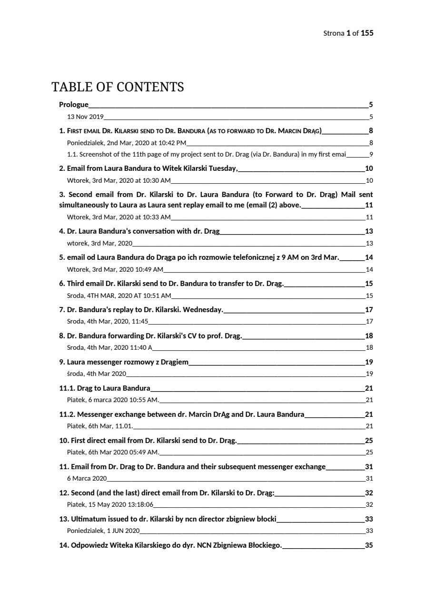
Chronologiczna korespondencja mailowa Kilarski-Błocki-Drąg-NN (2020-2021)DOCX - 3.
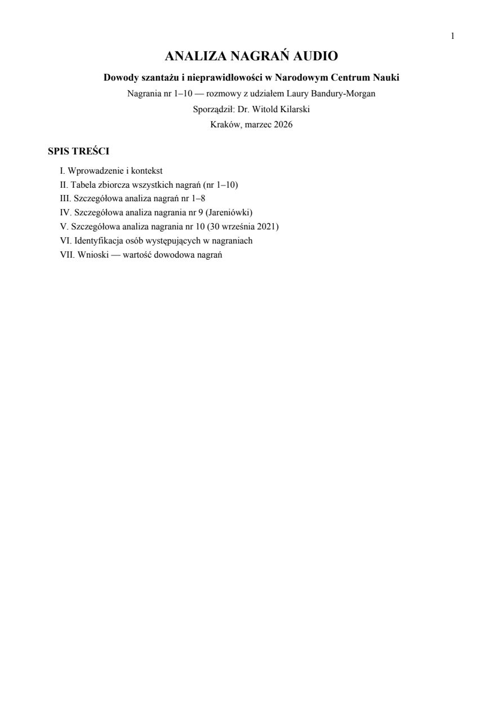
Kompletna analiza 7 nagrań audio — dowody domniemanego szantażu i korupcji w NCNDOCX - 4.
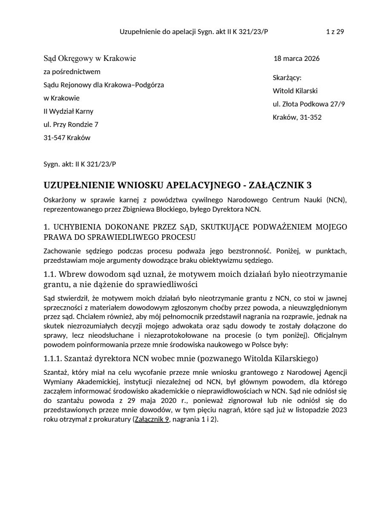
Apelacja od wyroku II K 321/23/P (NCN/Błocki vs. Kilarski)DOCX - 5.
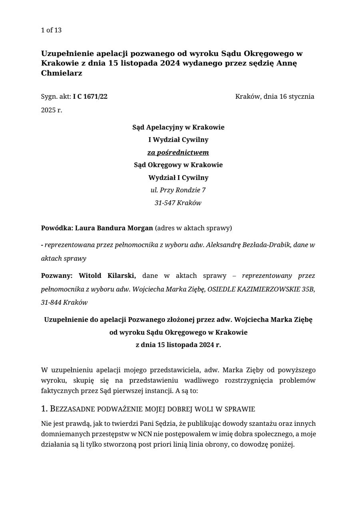
Uzupełnienie apelacji od wyroku Sądu Okręgowego z 15 listopada 2024DOCX - 6.
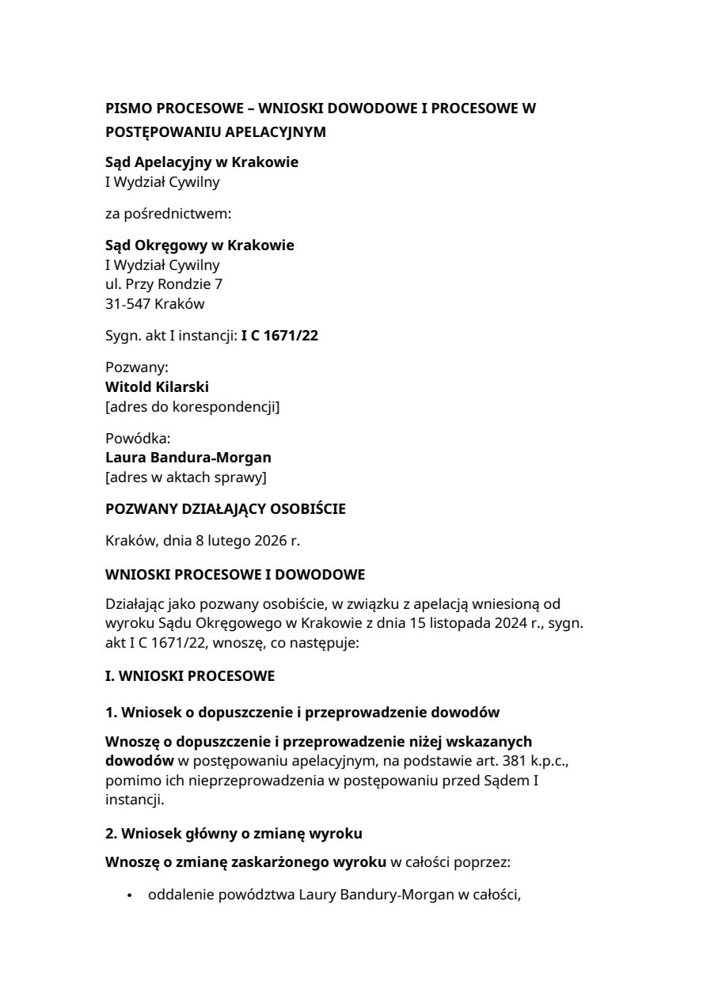
Wnioski procesowe — apelacjaDOCX - 7.
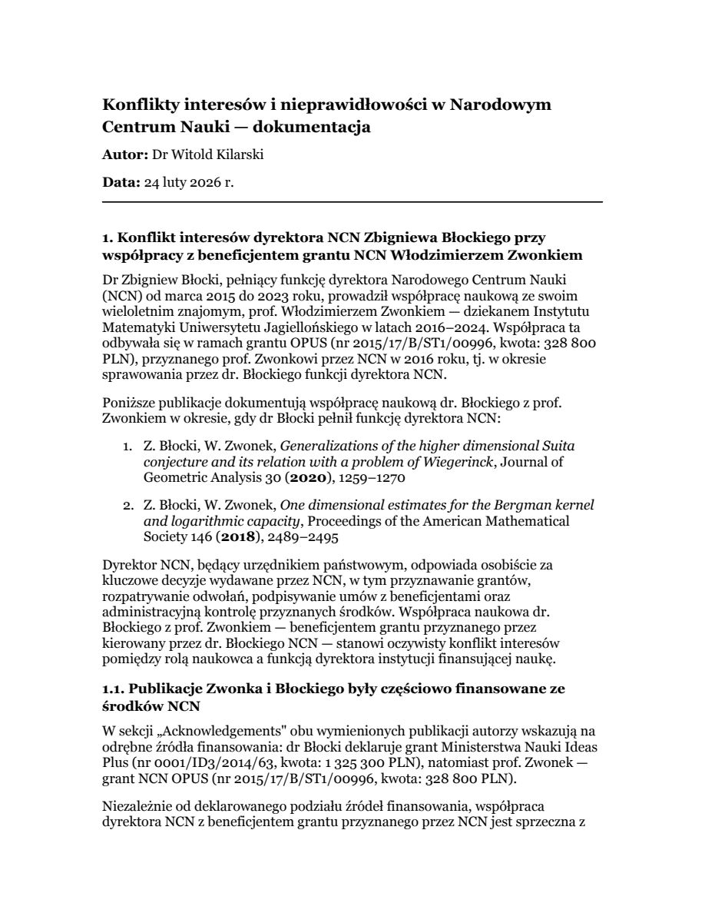
Analiza powiązań: Babik, Liana, Zwonek, Błocki — domniemany nepotyzm w NCNDOCX - 8.
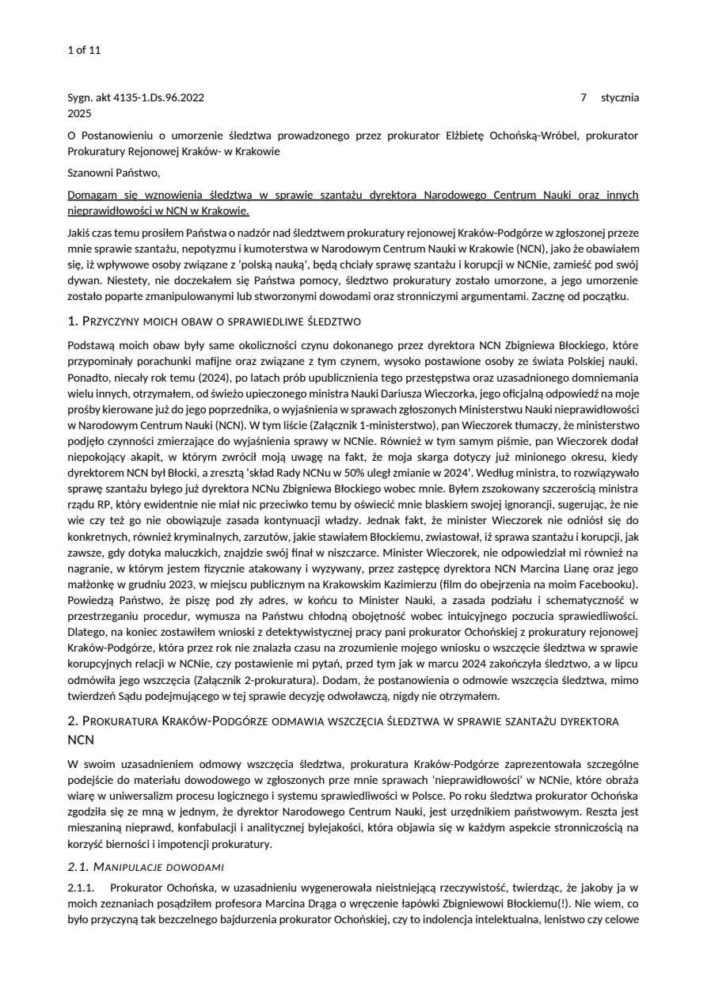
Załącznik do zawiadomienia do prokuraturyDOCX - 9.
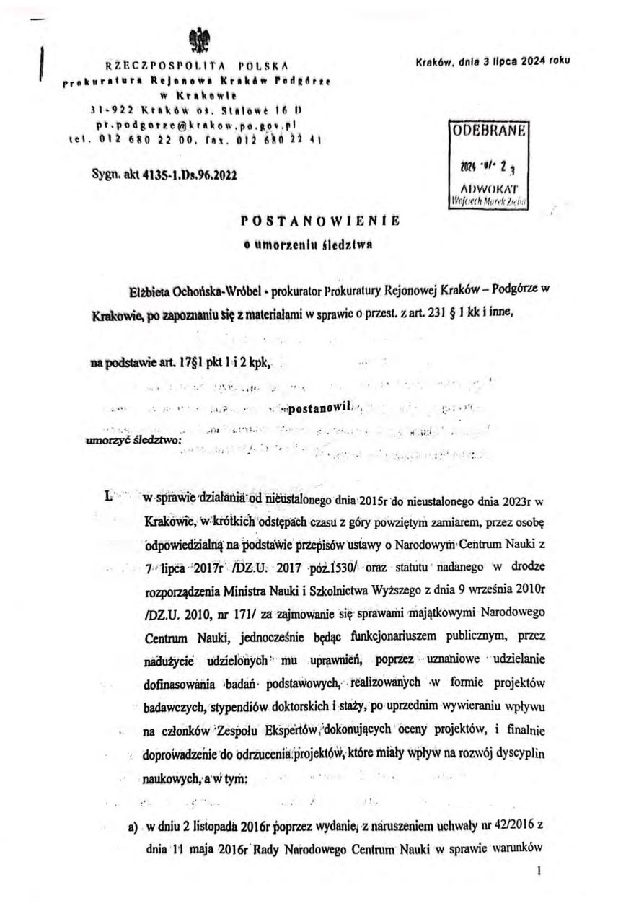
Postanowienie Prokuratury — odmowa wszczęcia śledztwa (prokurator referent (poprzednia sprawa))PDF - 10.
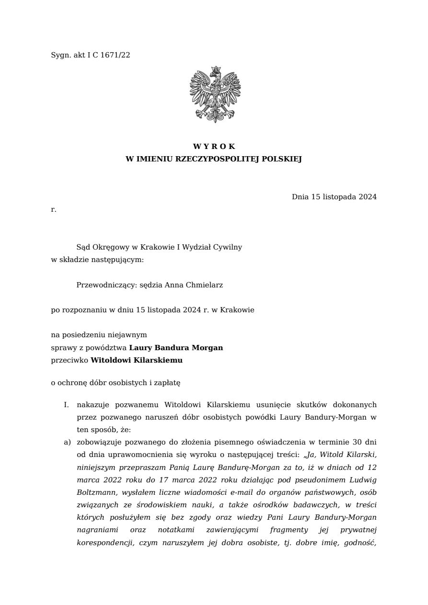
Wyrok w sprawie NN vs. Kilarski (sędzia referent)PDF - 12.
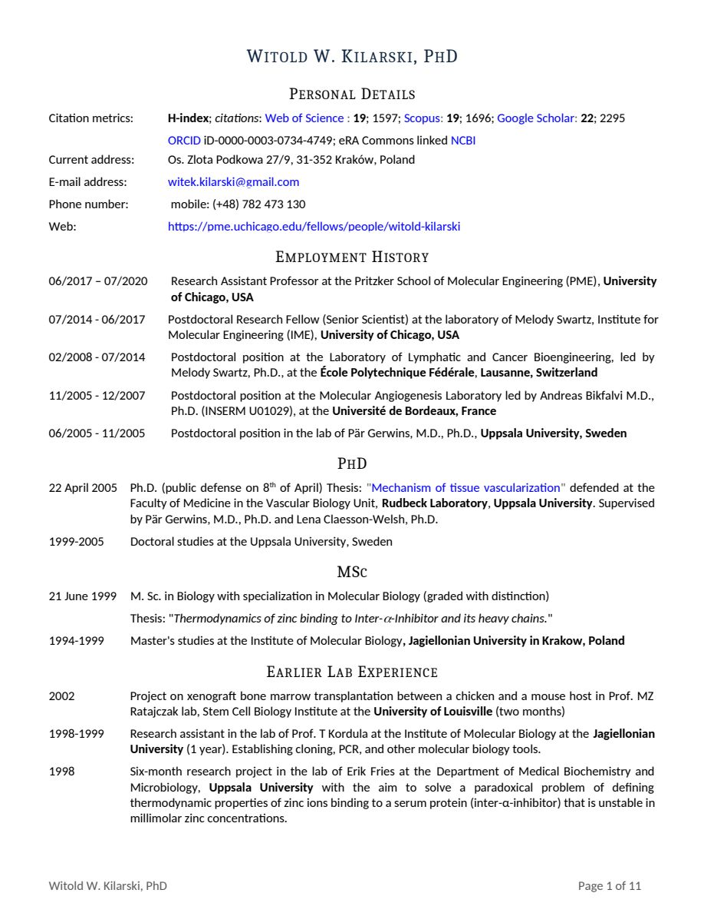
CV i lista publikacji naukowych dr. Witolda KilarskiegoDOCX
Kluczowy dowód w całej sprawie. E-mail osoby NN — kierownika Działu Kontroli Grantów NCN — wysłany 1 czerwca 2020 r. z oficjalnego, służbowego konta NCN. Dokument przekazuje dr. Kilarskiemu ultimatum wystosowane przez dyrektora NCN Zbigniewa Błockiego: wycofaj wniosek NAWA „Polskie Powroty" — bo i tak go nie dostaniesz — aby „uspokoić prof. Drąga".
Znaczenie dowodowe: potwierdza istnienie ultimatum w formie pisemnej, z oficjalnego konta NCN. Instytucja zarządzająca konkursami NCN ingeruje w niezależny konkurs NAWA — co wykracza poza kompetencje obu agencji.
Pełna chronologiczna rekonstrukcja korespondencji e-mailowej między dr. Kilarskim, Błockim, prof. Drągiem oraz osobą NN w latach 2020–2021.
Dokument pokazuje sekwencję zdarzeń i reakcje poszczególnych uczestników na ultimatum oraz późniejsze próby wyciszenia sprawy. Użyteczny do śledzenia, kto i kiedy wiedział.
Kompletna analiza 7 nagrań audio (2020–2021): transkrypcje, kontekst i powiązania między wątkami domniemanego szantażu, nepotyzmu i rzekomo sfałszowanych recenzji.
Dokument ujednolica wszystkie nagrania w jeden zestaw dowodów, z przypisami do konkretnych fragmentów czasowych. Jest przewodnikiem po materiale audio dla śledczych i dziennikarzy.
Apelacja dr. Kilarskiego od wyroku sądu pierwszej instancji w sprawie II K 321/23/P — sprawa cywilna wniesiona przez NCN/Błockiego przeciwko sygnaliście.
W apelacji wskazano naruszenia prawa procesowego oraz nieuwzględnienie dowodów audio i e-mailowych potwierdzających domniemany szantaż.
Uzupełnienie apelacji od wyroku Sądu Okręgowego w Krakowie z 15 listopada 2024 r. (skład z udziałem sędzi referent).
W uzupełnieniu wskazano kluczowe dowody pominięte przez sąd pierwszej instancji oraz błędy w ocenie materiału dowodowego.
Wnioski procesowe zgłoszone w postępowaniu apelacyjnym — formalne żądania dopuszczenia i przeprowadzenia dowodów.
Dokument istotny dla oceny, czy sądy apelacyjne umożliwiły rzeczywiste badanie materiału dowodowego, czy też ograniczyły jego zakres.
Analiza powiązań kadrowo-biznesowych: Babik, Liana, Zwonek, Błocki — mapa nepotyzmu w NCN i środowisku Uniwersytetu Jagiellońskiego.
Dokument pokazuje, jak stanowiska w NCN, UJ i zewnętrznych spółkach tworzyły siatkę wzajemnych zależności, wpływającą na decyzje grantowe.
Załącznik do zawiadomienia dr. Kilarskiego do prokuratury — zestaw dokumentów i nagrań przekazanych wraz z zawiadomieniem o podejrzeniu popełnienia przestępstwa.
Zawartość załącznika dokumentuje, że prokuratura otrzymała materiał dowodowy pozwalający na merytoryczne wszczęcie postępowania.
Postanowienie prokuratury w Krakowie (sygn. 4135-1.Ds.96.2022) — prokurator referent (poprzednia sprawa) odmawia wszczęcia śledztwa w sprawie ultimatum i działań dyrekcji NCN.
Decyzja ta — wraz z późniejszym postanowieniem prokurator referent (2026) — stała się pierwszym formalnym dowodem bezczynności organów ścigania w sprawie Kilarskiego.
Wyrok w sprawie NN vs. dr Kilarski — ogłoszony przez skład z udziałem sędzi referent.
Wyrok dotyczy publikacji Kilarskiego opisującej domniemany szantaż; sąd pominął w uzasadnieniu nagrania audio NN z 2020–2021 r.
Opinia psychiatryczno-psychologiczna dotycząca dr. Kilarskiego — sporządzona w toku postępowań sądowych.
Dokument podnoszony przez stronę przeciwną w celu podważenia wiarygodności sygnalisty; pokazuje jeden ze standardowych mechanizmów represji wobec whistleblowerów.
CV i lista publikacji naukowych dr. Witolda Kilarskiego — dowód dorobku badawczego w dziedzinach układu limfatycznego, inżynierii biomedycznej i terapii cukrzycy typu 1.
Materiał referencyjny dla mediów i instytucji oceniających wiarygodność merytoryczną sygnalisty.
Key Evidence
NN — an anonymized senior NCN official who in 2020 was Witold Kilarski's partner.
Below are documents supporting the case of alleged corruption at NCN. The ultimatum email from NN is the central piece of evidence.
- 2.Chronological email correspondence Kilarski-Błocki-Drąg-NN (2020-2021)DOCX
- 3.Complete analysis of 7 audio recordings — evidence of alleged blackmail and alleged corruption at NCNDOCX
- 4.Appeal against verdict II K 321/23/P (NCN/Błocki vs. Kilarski)DOCX
- 5.Supplementary appeal against Kraków District Court verdict of 15 November 2024DOCX
- 6.Procedural motions — appealDOCX
- 7.Analysis of connections: Babik, Liana, Zwonek, Błocki — alleged nepotism at NCNDOCX
- 8.Attachment to criminal complaint filed with prosecutorDOCX
- 9.Prosecutor's decision — refusal to investigate (prosecutor, earlier case)PDF
- 10.Verdict in NN vs. Kilarski case (the presiding judge)PDF
- 12.CV and list of scientific publications of Dr. Witold KilarskiDOCX
The central piece of evidence in the entire case. An email from NN — Head of NCN's Grants Control Department — sent on 1 June 2020 from an official NCN work account. The document conveys to Dr. Kilarski the ultimatum issued by NCN Director Zbigniew Błocki: withdraw the NAWA "Polish Returns" application — you won't get it anyway — in order to "placate Prof. Drąg".
Evidentiary value: confirms the ultimatum in writing, from an official NCN account. The body managing NCN's grant competitions is interfering with an independent NAWA competition — outside the lawful remit of both agencies.
A complete chronological reconstruction of email correspondence between Dr. Kilarski, Błocki, Prof. Drąg and NN across 2020–2021.
The document shows the sequence of events and the reactions of each participant to the ultimatum and the subsequent attempts to bury the case. Useful for tracking who knew what and when.
A complete analysis of the 7 audio recordings (2020–2021): transcripts, context, and connections between the threads of alleged blackmail, alleged nepotism and allegedly falsified reviews.
The document consolidates all the recordings into a single evidence set, with references to specific time fragments. It is a guide through the audio material for investigators and journalists.
Dr. Kilarski's appeal against the first-instance verdict in case II K 321/23/P — a civil case brought by NCN/Błocki against the whistleblower.
The appeal identifies breaches of procedural law and the court's failure to consider audio and email evidence confirming the alleged blackmail.
Supplementary appeal against the Kraków Regional Court verdict of 15 November 2024 (panel including the presiding judge).
The supplementary submission identifies key evidence overlooked by the first instance and errors in the assessment of the evidentiary record.
Procedural motions filed in the appellate proceedings — formal requests for the admission and examination of evidence.
A document crucial for assessing whether the appellate courts allowed a genuine examination of the evidence or limited its scope.
An analysis of personnel and business links: Babik, Liana, Zwonek, Błocki — a map of alleged nepotism at NCN and in the Jagiellonian University milieu.
The document shows how positions at NCN, UJ and in external companies formed a web of mutual dependency that influenced grant decisions.
Attachment to Dr. Kilarski's criminal complaint — a set of documents and recordings submitted with the notice of suspected offence.
The contents of the attachment document that the prosecutor received evidence sufficient to open a substantive investigation.
Decision of the Kraków prosecutor's office (file no. 4135-1.Ds.96.2022) — the prosecutor (earlier case) refuses to open an investigation into the ultimatum and NCN management's conduct.
This decision — together with the prosecutor later ruling (2026) — became the first formal evidence of law-enforcement inaction in the Kilarski case.
Verdict in the case NN vs. Dr. Kilarski — delivered by a panel including the presiding judge.
The verdict concerns Kilarski's publication describing the alleged blackmail; the court's reasoning omitted the NN audio recordings from 2020–2021.
A psychiatric-psychological opinion concerning Dr. Kilarski — prepared in the course of court proceedings.
The document is raised by the opposing side to undermine the whistleblower's credibility; it illustrates one of the standard retaliation mechanisms against whistleblowers.
CV and list of scientific publications of Dr. Witold Kilarski — evidence of his research record in lymphatic system biology, biomedical engineering and Type 1 diabetes therapy.
Reference material for media and institutions assessing the substantive credibility of the whistleblower.
Preuves clés
NN — une haute responsable anonymisée du NCN qui, en 2020, était la compagne de Witold Kilarski.
Ci-dessous les documents attestant de la corruption présumée au NCN. L'e-mail d'ultimatum de NN constitue la pièce centrale.
- 2.Correspondance chronologique Kilarski-Błocki-Drąg-NN (2020-2021)DOCX
- 3.Analyse complète de 7 enregistrements audio — preuves de chantage présumé et alleged corruption présumée au NCNDOCX
- 4.Appel du verdict II K 321/23/P (NCN/Błocki c. Kilarski)DOCX
- 5.Complément d'appel contre le verdict du tribunal régional du 15 novembre 2024DOCX
- 6.Conclusions de procédure — appelDOCX
- 7.Analyse des liens : Babik, Liana, Zwonek, Błocki — népotisme présumé au NCNDOCX
- 8.Pièce jointe à la plainte pénale déposée au parquetDOCX
- 9.Décision du procureur — refus d'enquête (procureure, dossier précédent)PDF
- 10.Verdict NN c. Kilarski (juge rapporteur)PDF
- 12.CV et liste de publications du Dr Witold KilarskiDOCX
La pièce à conviction centrale de l'affaire. Un e-mail de NN — cheffe du Département du contrôle des subventions du NCN — envoyé le 1er juin 2020 depuis un compte officiel de service du NCN. Le document transmet au Dr Kilarski l'ultimatum émis par le directeur du NCN Zbigniew Błocki : retirer la demande NAWA « Retours polonais » — que vous n'obtiendrez de toute façon pas — pour « apaiser le prof. Drąg ».
Valeur probante : confirme l'ultimatum par écrit, depuis un compte officiel du NCN. L'organe gérant les concours du NCN interfère avec un concours indépendant de la NAWA — ce qui dépasse le mandat légal des deux agences.
Reconstitution chronologique complète de la correspondance par e-mail entre le Dr Kilarski, Błocki, le Prof. Drąg et NN au cours de 2020–2021.
Le document montre la séquence des événements et les réactions de chaque participant à l'ultimatum et aux tentatives ultérieures d'étouffer l'affaire. Utile pour suivre qui savait quoi et quand.
Analyse complète des 7 enregistrements audio (2020–2021) : transcriptions, contexte et liens entre les fils du chantage présumé, du népotisme présumé et des évaluations prétendument falsifiées.
Le document consolide tous les enregistrements en un seul dossier de preuves, avec des références à des segments temporels précis. C'est un guide du matériel audio pour les enquêteurs et les journalistes.
Appel du Dr Kilarski contre le verdict de première instance dans l'affaire II K 321/23/P — procédure civile engagée par le NCN/Błocki contre le lanceur d'alerte.
L'appel signale des violations du droit procédural et le fait que la juridiction n'a pas pris en compte les preuves audio et les e-mails confirmant le chantage présumé.
Complément d'appel contre le verdict du Tribunal régional de Cracovie du 15 novembre 2024 (formation incluant la juge rapporteur).
Le complément identifie les preuves clés ignorées par la première instance et les erreurs d'appréciation du dossier.
Conclusions de procédure déposées en appel — demandes formelles d'admission et d'examen des preuves.
Document crucial pour évaluer si les juridictions d'appel ont permis un véritable examen des preuves ou en ont restreint la portée.
Analyse des liens de personnel et d'affaires : Babik, Liana, Zwonek, Błocki — carte du népotisme présumé au NCN et dans le milieu de l'Université Jagellonne.
Le document montre comment des fonctions au NCN, à l'UJ et dans des sociétés extérieures ont formé un réseau d'interdépendances influant sur les décisions de subvention.
Annexe à la plainte pénale du Dr Kilarski — ensemble de documents et d'enregistrements remis avec la dénonciation d'une infraction soupçonnée.
Le contenu de l'annexe documente que le parquet a reçu des preuves permettant d'ouvrir une enquête sur le fond.
Décision du parquet de Cracovie (réf. 4135-1.Ds.96.2022) — la procureure (dossier précédent) refuse d'ouvrir une enquête sur l'ultimatum et la conduite de la direction du NCN.
Cette décision — avec l'ordonnance ultérieure du procureur (2026) — est devenue la première preuve formelle de l'inaction des autorités dans l'affaire Kilarski.
Verdict dans l'affaire NN c. Dr Kilarski — rendu par une formation incluant la juge rapporteur.
Le verdict concerne la publication de Kilarski décrivant le chantage présumé ; la motivation de la cour a omis les enregistrements audio de NN de 2020–2021.
Expertise psychiatrique et psychologique concernant le Dr Kilarski — établie au cours des procédures judiciaires.
Le document est invoqué par la partie adverse pour saper la crédibilité du lanceur d'alerte ; il illustre un mécanisme classique de rétorsion à l'encontre des lanceurs d'alerte.
CV et liste de publications du Dr Witold Kilarski — preuve de son parcours de recherche en biologie du système lymphatique, ingénierie biomédicale et thérapie du diabète de type 1.
Matériel de référence pour les médias et institutions évaluant la crédibilité scientifique du lanceur d'alerte.
Schlüsselbeweise
NN — eine anonymisierte hochrangige NCN-Beamtin, die im Jahr 2020 die Lebensgefährtin von Witold Kilarski war.
Nachfolgend die Dokumente, die die Korruption am NCN belegen. Die Ultimatum-E-Mail von NN ist das zentrale Beweisstück.
- 2.Chronologischer E-Mail-Verkehr Kilarski-Błocki-Drąg-NN (2020-2021)DOCX
- 3.Vollständige Analyse der 7 Audioaufnahmen — Beweise für mutmaßliche Erpressung und Korruption am NCNDOCX
- 4.Berufung gegen Urteil II K 321/23/P (NCN/Błocki gegen Kilarski)DOCX
- 5.Ergänzung der Berufung gegen das Urteil des Landgerichts Krakau vom 15. November 2024DOCX
- 6.Verfahrensanträge — BerufungDOCX
- 7.Analyse der Verbindungen: Babik, Liana, Zwonek, Błocki — mutmaßliche Vetternwirtschaft am NCNDOCX
- 8.Anlage zur Strafanzeige bei der StaatsanwaltschaftDOCX
- 9.Beschluss der Staatsanwaltschaft — Ablehnung der Ermittlung (Staatsanwaltschaft, früheres Verfahren)PDF
- 10.Urteil NN gegen Kilarski (die zuständige Richterin)PDF
- 12.Lebenslauf und Publikationsliste von Dr. Witold KilarskiDOCX
Das zentrale Beweisstück des gesamten Falls. Eine E-Mail von NN — Leiterin der NCN-Abteilung für Förderkontrolle — gesendet am 1. Juni 2020 von einem offiziellen NCN-Dienstkonto. Das Dokument übermittelt Dr. Kilarski das Ultimatum von NCN-Direktor Zbigniew Błocki: Zieh den NAWA-Antrag „Polnische Rückkehr" zurück — du bekommst ihn ohnehin nicht —, um „Prof. Drąg zu beruhigen".
Beweiswert: belegt das Ultimatum schriftlich, von einem offiziellen NCN-Konto. Die für NCN-Förderwettbewerbe zuständige Einrichtung greift in einen unabhängigen NAWA-Wettbewerb ein — außerhalb des gesetzlichen Zuständigkeitsbereichs beider Agenturen.
Eine vollständige chronologische Rekonstruktion des E-Mail-Verkehrs zwischen Dr. Kilarski, Błocki, Prof. Drąg und NN in den Jahren 2020–2021.
Das Dokument zeigt die Abfolge der Ereignisse und die Reaktionen der Beteiligten auf das Ultimatum sowie die späteren Versuche, den Fall zu vertuschen. Nützlich, um nachzuvollziehen, wer wann was wusste.
Eine vollständige Analyse der 7 Audioaufnahmen (2020–2021): Transkripte, Kontext und Verbindungen zwischen den Strängen mutmaßliche Erpressung, mutmaßliche Vetternwirtschaft und mutmaßlich gefälschte Gutachten.
Das Dokument bündelt alle Aufnahmen zu einem einheitlichen Beweisdossier mit Verweisen auf konkrete Zeitabschnitte. Es dient als Leitfaden durch das Audiomaterial für Ermittler und Journalisten.
Berufung von Dr. Kilarski gegen das erstinstanzliche Urteil im Verfahren II K 321/23/P — ein Zivilverfahren des NCN/Błocki gegen den Whistleblower.
Die Berufung benennt Verstöße gegen das Verfahrensrecht und die Nichtberücksichtigung von Audio- und E-Mail-Beweisen, die die mutmaßliche Erpressung belegen.
Ergänzung der Berufung gegen das Urteil des Landgerichts Krakau vom 15. November 2024 (Kammer mit die zuständige Richterin).
Die Ergänzung benennt die von der ersten Instanz übersehenen Schlüsselbeweise und die Fehler bei der Beweiswürdigung.
Verfahrensanträge im Berufungsverfahren — formelle Anträge auf Zulassung und Beweiserhebung.
Ein Dokument, das entscheidend dafür ist zu beurteilen, ob die Berufungsgerichte eine echte Beweisprüfung ermöglichten oder ihren Umfang beschränkten.
Eine Analyse personeller und geschäftlicher Verflechtungen: Babik, Liana, Zwonek, Błocki — eine Karte der mutmaßliche Vetternwirtschaft am NCN und im Umfeld der Jagiellonen-Universität.
Das Dokument zeigt, wie Ämter am NCN, an der UJ und in externen Unternehmen ein Netz gegenseitiger Abhängigkeiten bildeten, das die Förderentscheidungen beeinflusste.
Anlage zur Strafanzeige von Dr. Kilarski — eine Sammlung von Dokumenten und Aufnahmen, die mit der Anzeige eingereicht wurden.
Der Inhalt der Anlage belegt, dass die Staatsanwaltschaft Beweise erhielt, die die Einleitung einer inhaltlichen Ermittlung erlaubten.
Beschluss der Staatsanwaltschaft Krakau (Az. 4135-1.Ds.96.2022) — die Staatsanwaltschaft (früheres Verfahren) lehnt die Einleitung eines Ermittlungsverfahrens zum Ultimatum und zum Verhalten der NCN-Leitung ab.
Dieser Beschluss — zusammen mit der späteren Entscheidung von der Staatsanwaltschaft (2026) — wurde zum ersten formalen Beleg für die Untätigkeit der Strafverfolgung im Fall Kilarski.
Urteil in der Sache NN gegen Dr. Kilarski — gesprochen von einer Kammer unter Beteiligung von die zuständige Richterin.
Das Urteil betrifft Kilarskis Publikation über die mutmaßliche Erpressung; die Urteilsbegründung übergeht die Audioaufnahmen NN aus 2020–2021.
Ein psychiatrisch-psychologisches Gutachten zu Dr. Kilarski — erstellt im Verlauf der Gerichtsverfahren.
Das Dokument wird von der Gegenseite herangezogen, um die Glaubwürdigkeit des Whistleblowers zu untergraben; es illustriert einen klassischen Vergeltungsmechanismus gegen Whistleblower.
Lebenslauf und Publikationsliste von Dr. Witold Kilarski — Beleg seiner Forschungsleistung in Lymphsystem-Biologie, biomedizinischer Technik und Typ-1-Diabetes-Therapie.
Referenzmaterial für Medien und Institutionen, die die fachliche Glaubwürdigkeit des Whistleblowers beurteilen.
Ключові докази
NN — анонімізована високопоставлена службовиця NCN, у 2020 р. партнерка Вітольда Кіларського.
Нижче наведено документи, що підтверджують нібито корупцію в NCN. Електронний лист-ультиматум від особи NN є центральним доказом.
- 2.Хронологічне листування Кіларський-Блоцкі-Дрог-NN (2020-2021)DOCX
- 3.Повний аналіз 7 аудіозаписів — докази шантажу та нібито корупцію в NCNDOCX
- 4.Апеляція на вирок II K 321/23/P (NCN/Блоцкі проти Кіларського)DOCX
- 5.Доповнення апеляції на рішення окружного суду Кракова від 15 листопада 2024DOCX
- 6.Процесуальні клопотання — апеляціяDOCX
- 7.Аналіз зв'язків: Бабік, Ліана, Звонек, Блоцкі — ймовірне кумівство в NCNDOCX
- 8.Додаток до заяви про злочин, поданої до прокуратуриDOCX
- 9.Рішення прокуратури — відмова від розслідування (прокурор-доповідач (попередня справа))PDF
- 10.Вирок у справі NN Б-М проти Кіларського (суддя Хмелаж)PDF
- 12.Резюме та список наукових публікацій д-ра Вітольда КіларськогоDOCX
Центральний доказ у справі. Лист особи NN — керівника Відділу контролю грантів NCN — надісланий 1 червня 2020 р. з офіційного службового акаунта NCN. Документ передає д-ру Кіларському ультиматум директора NCN Збігнева Блоцкого: відкликати заявку NAWA «Польські повернення» — все одно її не отримаєш — щоб «заспокоїти проф. Дрога».
Доказова вага: підтверджує ультиматум у письмовій формі, з офіційного акаунта NCN. Установа, що керує грантовими конкурсами NCN, втручається в незалежний конкурс NAWA — поза межами повноважень обох агенцій.
Повна хронологічна реконструкція електронного листування між д-ром Кіларським, Блоцкім, проф. Дрогом та особою NN упродовж 2020–2021 рр.
Документ відображає послідовність подій і реакції кожного з учасників на ультиматум та подальші спроби приховати справу. Корисний для відстеження, хто і коли що знав.
Повний аналіз 7 аудіозаписів (2020–2021): транскрипти, контекст і зв'язки між лініями шантажу, непотизму та сфальсифікованих рецензій.
Документ об'єднує всі записи в єдиний набір доказів із посиланнями на конкретні часові фрагменти. Це путівник по аудіоматеріалу для слідчих та журналістів.
Апеляція д-ра Кіларського на вирок суду першої інстанції у справі II K 321/23/P — цивільний позов NCN/Блоцкого проти викривача.
В апеляції вказано порушення процесуального права та непринятие судом аудіо- та email-доказів, що підтверджують шантаж.
Доповнення до апеляції на вирок Окружного суду в Кракові від 15 листопада 2024 р. (склад за участі суддя-доповідач).
У доповненні зазначено ключові докази, що їх проігнорував суд першої інстанції, та помилки в оцінці матеріалів справи.
Процесуальні клопотання, подані в апеляційному провадженні — офіційні запити на допуск і дослідження доказів.
Документ принципово важливий для оцінки того, чи забезпечили апеляційні суди реальне дослідження доказів, чи обмежили його обсяг.
Аналіз кадрових і ділових зв'язків: Бабік, Ліана, Звонек, Блоцкі — карта непотизму в NCN і середовищі Ягеллонського університету.
Документ показує, як посади в NCN, UJ та зовнішніх компаніях утворили мережу взаємозалежностей, що впливала на грантові рішення.
Додаток до кримінальної скарги д-ра Кіларського — набір документів і записів, поданих разом із повідомленням про підозру у вчиненні злочину.
Зміст додатка підтверджує, що прокуратура отримала докази, достатні для відкриття змістовного провадження.
Постанова прокуратури Кракова (№ 4135-1.Ds.96.2022) — прокурор-доповідач (попередня справа) відмовляє у відкритті слідства щодо ультиматуму та дій керівництва NCN.
Це рішення — разом з пізнішою постановою прокурор-доповідач (2026) — стало першим офіційним доказом бездіяльності правоохоронних органів у справі Кіларського.
Вирок у справі NN проти д-ра Кіларського — винесений складом за участі суддя-доповідач.
Вирок стосується публікації Кіларського про шантаж; мотивувальна частина проігнорувала аудіозаписи NN 2020–2021 рр.
Психіатрично-психологічний висновок щодо д-ра Кіларського — підготовлений у ході судових проваджень.
Документ використовується протилежною стороною для підриву довіри до викривача; він ілюструє один зі стандартних механізмів репресій проти викривачів.
Резюме та перелік наукових публікацій д-ра Вітольда Кіларського — свідчення його наукового доробку у біології лімфатичної системи, біомедичній інженерії та терапії діабету 1 типу.
Довідковий матеріал для ЗМІ та установ, що оцінюють фахову довіру до викривача.
Bezczynność Uniwersytetu Jagiellońskiego (marzec – kwiecień 2026)
Wiosną 2026 r. dr Witold Kilarski skierował do Uniwersytetu Jagiellońskiego serię pism dotyczących sytuacji na uczelni oraz działań osób powiązanych ze sprawą NCN — w tym listy do Rektora z 18 marca 2026 r. oraz zawiadomienie wysłane wspólnie do Uniwersytetu i policji z 2 kwietnia 2026 r.
Uniwersytet Jagielloński nie odpowiedział na żadne z tych pism. Nie wszczęto żadnego postępowania wyjaśniającego, nie przeprowadzono żadnych czynności na poziomie rektorskim ani dziekańskim. Bezczynność UJ zbiegła się w czasie z odmową wszczęcia śledztwa przez prokurator referent z 14 kwietnia 2026 r. (sygn. 4138-1.Ds.104.2026) — obie instytucje, działając niezależnie, zamknęły drogę do zbadania sprawy.
W odpowiedzi dr Kilarski złożył 19 kwietnia 2026 r. zażalenie na postanowienie prok. referent oraz skargę do prokuratora nadrzędnego — dokumenty te są dostępne poniżej.
Dokumenty
- 1.
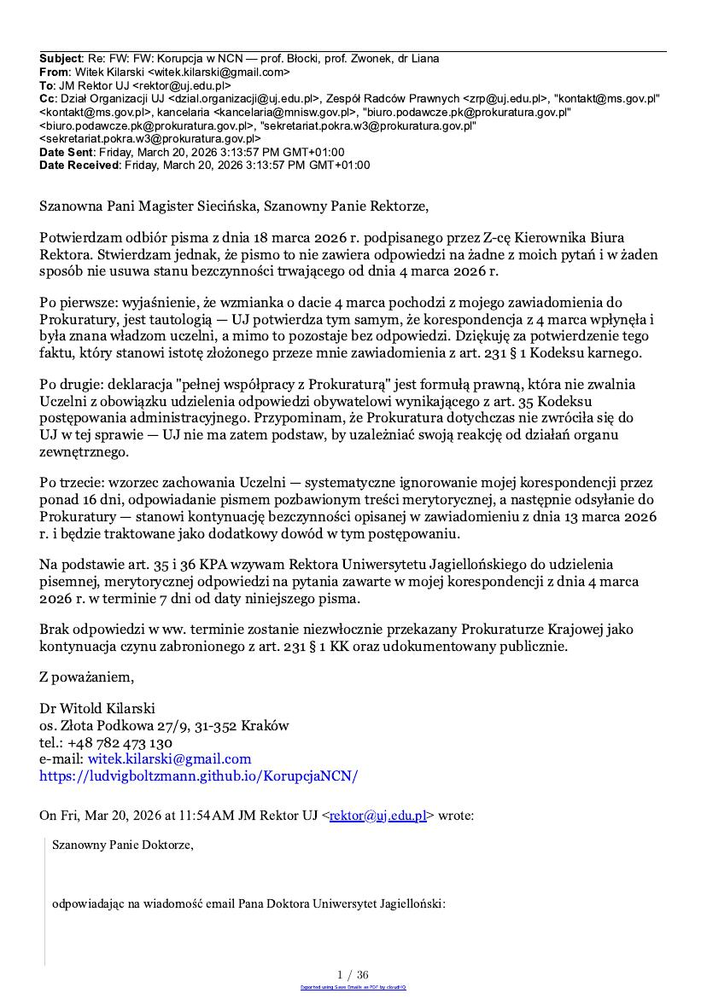
Maile do Rektora UJ — 18 marca 2026PDF - 2.
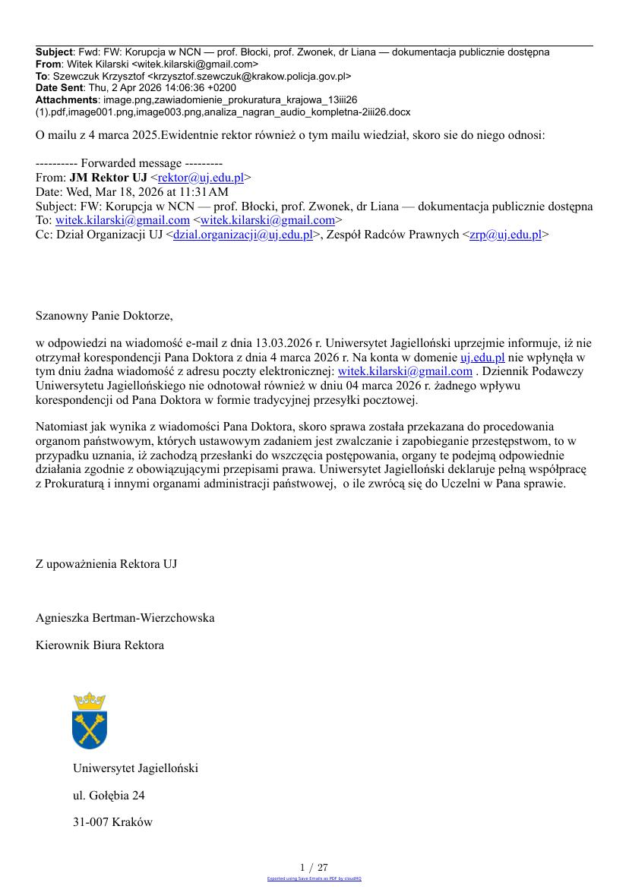
Zawiadomienie UJ i policji — 2 kwietnia 2026PDF - 3.
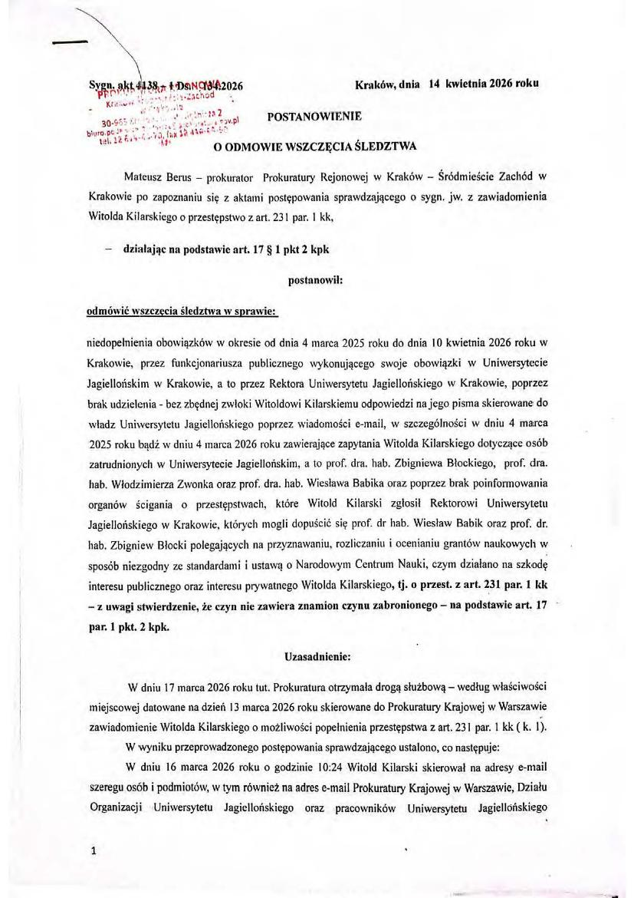
Postanowienie prok. referent — 14 kwietnia 2026 (odmowa)PDF - 4.
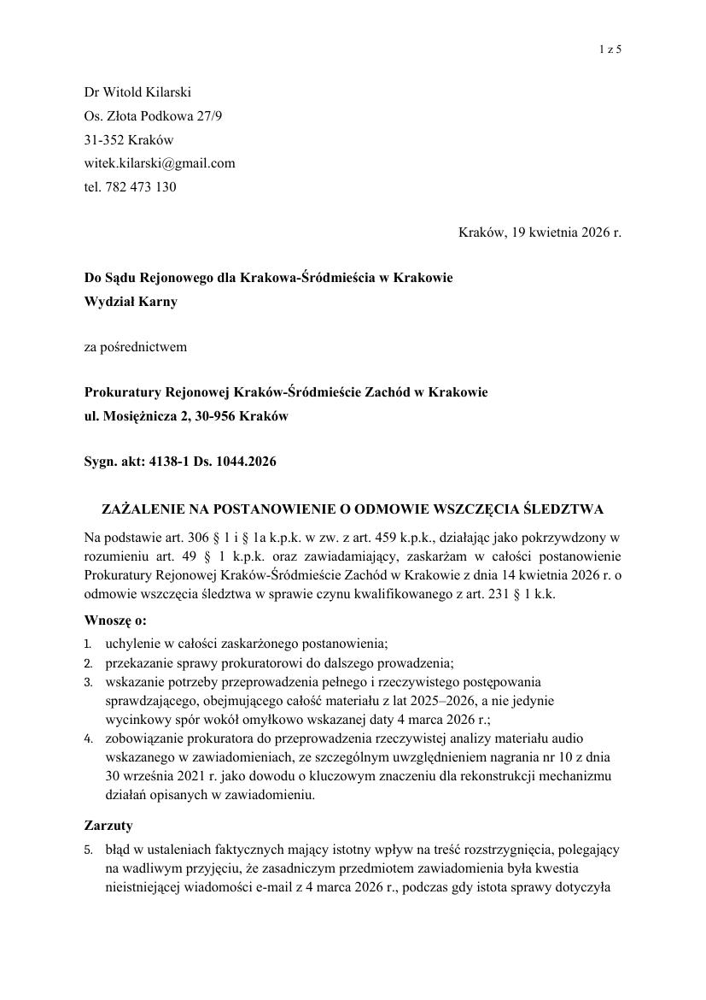
Zażalenie na postanowienie prokurator referent — 19 kwietnia 2026PDF - 5.
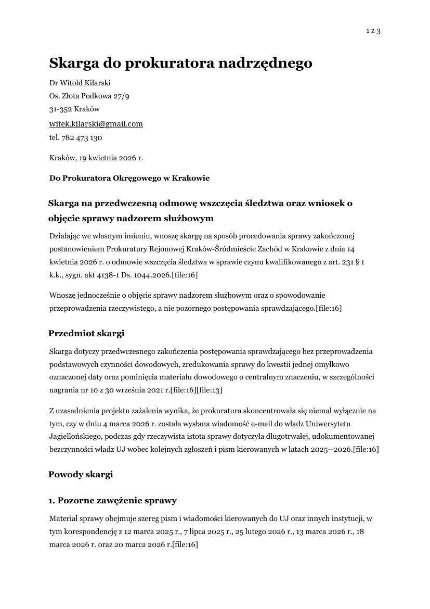
Skarga do prokuratora nadrzędnego — 19 kwietnia 2026PDF - 6.
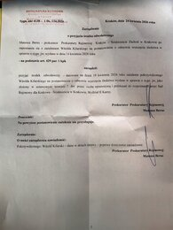
Zarządzenie o przyjęciu środka odwoławczego — 24 kwietnia 2026JPG
Pierwsza seria maili do Rektora UJ — sygnalizacja sytuacji, prośba o reakcję.
Brak odpowiedzi ze strony władz uczelni.
Wspólne zawiadomienie skierowane jednocześnie do UJ i policji — dwutorowa próba uruchomienia procedury.
UJ nie odpowiedział; policja przekazała sprawę prokuraturze (sygn. 4138-1.Ds.104.2026).
Postanowienie prokurator referent o odmowie wszczęcia śledztwa (sygn. 4138-1.Ds.104.2026).
Decyzja ta zapadła w momencie, gdy UJ wciąż nie odpowiedział na żadne z pism Kilarskiego.
Zażalenie dr. Kilarskiego na postanowienie prok. referent z 14 kwietnia 2026 r.
W zażaleniu wskazano braki dowodowe w uzasadnieniu postanowienia oraz pominięcie kontekstu bezczynności UJ.
Skarga administracyjna skierowana do prokuratora nadrzędnego — równolegle do zażalenia.
Dwukierunkowa strategia prawna: zażalenie w trybie k.p.k. oraz skarga administracyjna w nadzorze służbowym.
Zarządzenie prokurator referent o przyjęciu środka odwoławczego (24 kwietnia 2026 r.) — sprawa zostaje przekazana do Sądu Rejonowego dla Krakowa-Śródmieścia, Wydział II Karny.
{kind=link}
Prokurator stwierdził, że zażalenie złożono w terminie 7 dni i przez osobę uprawnioną — sprawa idzie do niezależnego sądu karnego (art. 429 § 1 k.p.k.). Sygn. 4138-1 Ds. 134.2026.
The Jagiellonian University's inaction (March – April 2026)
In spring 2026, Dr. Witold Kilarski addressed a series of letters to the Jagiellonian University (UJ) concerning the situation at the University and the conduct of persons linked to the NCN case — including letters to the Rector of 18 March 2026 and a joint notification sent to both the University and the police on 2 April 2026.
The Jagiellonian University did not respond to any of these letters. No inquiry procedure was opened and no action was taken at either rector or dean level. The UJ's inaction coincided with the prosecutor refusal to open an investigation on 14 April 2026 (file no. 4138-1.Ds.104.2026) — two institutions, acting independently, both closed the path to any examination of the case.
In response, on 19 April 2026 Dr. Kilarski filed an appeal against the prosecutor's decision and a complaint to the supervising prosecutor — both documents are available below.
Documents
- 1.Emails to the UJ Rector — 18 March 2026PDF
- 2.Notification to UJ and police — 2 April 2026PDF
- 3.the prosecutor's decision — 14 April 2026 (refusal)PDF
- 4.Appeal against the prosecutor's decision — 19 April 2026PDF
- 5.Complaint to the supervising prosecutor — 19 April 2026PDF
- 6.Order accepting the appeal — 24 April 2026JPG
The first batch of emails to the UJ Rector — notifying the situation and requesting a reaction.
No reply from the University's authorities.
A joint notification addressed simultaneously to UJ and the police — a two-track attempt to trigger a procedure.
UJ did not reply; the police forwarded the case to the prosecutor's office (file 4138-1.Ds.104.2026).
the prosecutor's decision refusing to open an investigation (file 4138-1.Ds.104.2026).
The decision was issued at a moment when UJ still had not responded to any of Kilarski's letters.
Dr. Kilarski's appeal against the prosecutor's decision of 14 April 2026.
The appeal identifies evidentiary gaps in the decision's reasoning and the omission of the UJ inaction context.
Administrative complaint addressed to the supervising prosecutor — in parallel with the appeal.
A two-track legal strategy: an appeal under the Code of Criminal Procedure and an administrative complaint within the supervisory chain.
Order of the prosecutor accepting the appeal (24 April 2026) — the case is transferred to the District Court for Kraków-Śródmieście, 2nd Criminal Division.
The prosecutor confirmed the appeal was filed within the 7-day statutory deadline and by an entitled party — the case proceeds to the independent criminal court (art. 429 § 1 CCP). File no. 4138-1 Ds. 134.2026.
L'inaction de l'Université Jagellonne (mars – avril 2026)
Au printemps 2026, le Dr Witold Kilarski a adressé à l'Université Jagellonne (UJ) une série de courriers concernant la situation à l'Université et les agissements de personnes liées à l'affaire NCN — notamment des lettres au Recteur du 18 mars 2026 et une notification envoyée conjointement à l'Université et à la police le 2 avril 2026.
L'Université Jagellonne n'a répondu à aucun de ces courriers. Aucune procédure d'enquête n'a été ouverte, aucune démarche n'a été entreprise au niveau du recteur ou du doyen. L'inaction de l'UJ a coïncidé avec le refus, par le procureur, d'ouvrir une enquête le 14 avril 2026 (réf. 4138-1.Ds.104.2026) — deux institutions, agissant indépendamment, ont fermé la voie à tout examen de l'affaire.
En réaction, le 19 avril 2026 le Dr Kilarski a déposé un recours contre la décision du procureur et une plainte auprès du procureur supérieur — les deux documents sont disponibles ci-dessous.
Documents
- 1.E-mails au Recteur de l'UJ — 18 mars 2026PDF
- 2.Notification à l'UJ et à la police — 2 avril 2026PDF
- 3.Décision du procureur — 14 avril 2026 (refus)PDF
- 4.Recours contre la décision du procureur — 19 avril 2026PDF
- 5.Plainte au procureur supérieur — 19 avril 2026PDF
- 6.Ordonnance acceptant le recours — 24 avril 2026JPG
Première série d'e-mails au Recteur de l'UJ — signalement de la situation et demande de réaction.
Aucune réponse de la part des autorités universitaires.
Notification conjointe adressée simultanément à l'UJ et à la police — tentative sur deux voies d'ouvrir une procédure.
L'UJ n'a pas répondu ; la police a transmis l'affaire au parquet (réf. 4138-1.Ds.104.2026).
Décision du procureur refusant l'ouverture d'une enquête (réf. 4138-1.Ds.104.2026).
La décision a été rendue alors que l'UJ n'avait encore répondu à aucun des courriers de Kilarski.
Recours du Dr Kilarski contre la décision du procureur du 14 avril 2026.
Le recours relève des lacunes probatoires dans la motivation et l'omission du contexte d'inaction de l'UJ.
Plainte administrative adressée au procureur supérieur — parallèlement au recours.
Stratégie juridique à deux voies : recours au titre du Code de procédure pénale et plainte administrative dans la chaîne hiérarchique.
Ordonnance du procureur prokurator referent acceptant le recours (24 avril 2026) — l'affaire est transmise au Tribunal d'arrondissement de Cracovie-Śródmieście, IIe Chambre pénale.
Le procureur a constaté que le recours a été déposé dans le délai légal de 7 jours et par une personne habilitée — l'affaire est transmise au tribunal pénal indépendant (art. 429 § 1 CPP). Réf. 4138-1 Ds. 134.2026.
Untätigkeit der Jagiellonen-Universität (März – April 2026)
Im Frühjahr 2026 richtete Dr. Witold Kilarski an die Jagiellonen-Universität (UJ) eine Reihe von Schreiben zur Situation an der Universität und zu den Handlungen von Personen im Zusammenhang mit dem NCN-Fall — darunter Schreiben an den Rektor vom 18. März 2026 und eine gemeinsame Anzeige an Universität und Polizei vom 2. April 2026.
Die Jagiellonen-Universität hat auf keines dieser Schreiben geantwortet. Es wurde kein Klärungsverfahren eingeleitet und weder auf Rektorats- noch auf Dekanatsebene gehandelt. Die Untätigkeit der UJ fiel zeitlich mit der Ablehnung der Ermittlungseinleitung durch der Staatsanwaltschaft am 14. April 2026 (Az. 4138-1.Ds.104.2026) zusammen — zwei Institutionen haben, unabhängig voneinander, den Weg zu einer Prüfung des Falls verschlossen.
Als Reaktion reichte Dr. Kilarski am 19. April 2026 eine Beschwerde gegen den Beschluss der zuständigen Staatsanwaltschaft und eine Beschwerde an den übergeordneten Staatsanwalt ein — beide Dokumente sind unten verfügbar.
Dokumente
- 1.E-Mails an den UJ-Rektor — 18. März 2026PDF
- 2.Benachrichtigung an UJ und Polizei — 2. April 2026PDF
- 3.Beschluss der zuständigen Staatsanwaltschaft — 14. April 2026 (Ablehnung)PDF
- 4.Beschwerde gegen den prokurator referent-Beschluss — 19. April 2026PDF
- 5.Beschwerde an den übergeordneten Staatsanwalt — 19. April 2026PDF
- 6.Verfügung über die Annahme des Rechtsmittels — 24. April 2026JPG
Erste Serie von E-Mails an den UJ-Rektor — Hinweis auf die Situation und Bitte um Reaktion.
Keine Antwort der Universitätsleitung.
Gemeinsame Anzeige zugleich an UJ und Polizei — zweigleisiger Versuch, ein Verfahren anzustoßen.
Die UJ antwortete nicht; die Polizei leitete den Fall an die Staatsanwaltschaft weiter (Az. 4138-1.Ds.104.2026).
Beschluss von der Staatsanwaltschaft über die Ablehnung der Einleitung eines Ermittlungsverfahrens (Az. 4138-1.Ds.104.2026).
Die Entscheidung erging zu einem Zeitpunkt, zu dem die UJ auf keines der Schreiben Kilarskis geantwortet hatte.
Beschwerde von Dr. Kilarski gegen den Beschluss der zuständigen Staatsanwaltschaft vom 14. April 2026.
Die Beschwerde benennt Beweislücken in der Begründung und das Übergehen des Kontexts der UJ-Untätigkeit.
Verwaltungsbeschwerde an den übergeordneten Staatsanwalt — parallel zur Beschwerde.
Zweigleisige juristische Strategie: Beschwerde nach der Strafprozessordnung und Verwaltungsbeschwerde in der Dienstaufsicht.
Verfügung des Staatsanwalts prokurator referent über die Annahme des Rechtsmittels (24. April 2026) — die Sache wird an das Bezirksgericht für Kraków-Śródmieście, II. Strafkammer, übergeben.
Der Staatsanwalt stellte fest, dass die Beschwerde innerhalb der gesetzlichen 7-Tage-Frist und durch eine berechtigte Person eingelegt wurde — die Sache geht an das unabhängige Strafgericht (Art. 429 § 1 StPO). Az. 4138-1 Ds. 134.2026.
Бездіяльність Ягеллонського університету (березень – квітень 2026)
Навесні 2026 р. д-р Вітольд Кіларський надіслав до Ягеллонського університету (UJ) низку листів щодо ситуації в університеті та дій осіб, пов'язаних зі справою NCN — зокрема листи до Ректора від 18 березня 2026 р. та спільне повідомлення до університету та поліції від 2 квітня 2026 р.
Ягеллонський університет не відповів на жоден із цих листів. Не було відкрито жодного з'ясувального провадження, жодних дій не було вжито ні на рівні ректора, ні на рівні декана. Бездіяльність UJ збіглася з відмовою прокурор-доповідач у відкритті слідства 14 квітня 2026 р. (№ 4138-1.Ds.104.2026) — обидві установи, діючи незалежно, закрили шлях до дослідження справи.
У відповідь 19 квітня 2026 р. д-р Кіларський подав скаргу на постанову прокурор-доповідач та скаргу до вищестоящого прокурора — обидва документи доступні нижче.
Документи
- 1.Листи до Ректора UJ — 18 березня 2026PDF
- 2.Повідомлення UJ та поліції — 2 квітня 2026PDF
- 3.Постанова прокурор-доповідач — 14 квітня 2026 (відмова)PDF
- 4.Скарга на постанову прокурор-доповідач — 19 квітня 2026PDF
- 5.Скарга до вищестоящого прокурора — 19 квітня 2026PDF
- 6.Розпорядження про прийняття засобу оскарження — 24 квітня 2026JPG
Перша серія листів до Ректора UJ — повідомлення про ситуацію та прохання про реакцію.
Відповіді від керівництва університету не надійшло.
Спільне повідомлення, адресоване одночасно UJ та поліції — двоканальна спроба запустити процедуру.
UJ не відповів; поліція передала справу до прокуратури (№ 4138-1.Ds.104.2026).
Постанова прокурор-доповідач про відмову у відкритті слідства (№ 4138-1.Ds.104.2026).
Рішення винесено в момент, коли UJ ще не відповів на жоден із листів Кіларського.
Скарга д-ра Кіларського на постанову прокурор-доповідач від 14 квітня 2026 р.
У скарзі вказано доказові прогалини в мотивації постанови та ігнорування контексту бездіяльності UJ.
Адміністративна скарга, адресована вищестоящому прокурору — паралельно зі скаргою на постанову.
Двоканальна правова стратегія: скарга за КПК та адміністративна скарга в порядку службового нагляду.
Розпорядження прокурора Матеуша прокурор-доповідач про прийняття засобу оскарження (24 квітня 2026 р.) — справу передано до Районного суду для Кракова-Сродмесьце, ІІ Кримінальне відділення.
Прокурор встановив, що скаргу подано у строк 7 днів та уповноваженою особою — справа переходить до незалежного кримінального суду (ст. 429 § 1 КПК). № 4138-1 Ds. 134.2026.
Sprawa przeciwko byłemu dyrektorowi NCN Zbigniewowi Błockiemu, prof. Wiesławowi Babikowi (UJ) oraz wicedyrektorowi NCN Marcinowi Lianie
Pierwotny i najszerszy wątek dokumentacji obejmuje równolegle prowadzone postępowania karne i cywilne związane z funkcjonowaniem Narodowego Centrum Nauki w okresie kierowania nim przez prof. Zbigniewa Błockiego (dyrektor NCN, marzec 2015 – 2023). W kręgu zainteresowania pozostają również prof. Wiesław Babik (UJ), wicedyrektor Marcin Liana oraz dziekan Instytutu Matematyki UJ w latach 2016–2024 prof. Włodzimierz Zwonek.
Wątki obejmują m.in.: konflikty interesów przy ocenie i rozliczaniu grantów (w szczególności OPUS nr 2015/17/B/ST1/00996), nieprawidłowości w postępowaniu wyjaśniającym ws. eksperta Manfreda Mudelsee, ukrytą korespondencję NCN z NIK po kontroli, sprawy karne i cywilne sygn. II K 321/23/P oraz I C 1671/22, a także postanowienia Prokuratury Rejonowej Kraków (sygn. 4135-1.Ds.96.2022).
Poniżej zebrane są dokumenty już opublikowane na tej stronie — uporządkowane tematycznie, dla wygody nawigacji.
Dokumentacja merytoryczna i dowody
- 1.Konflikty interesów Błocki / Babik / Liana / ZwonekPDF
- 2.Chronologia korespondencji ws. NCNPDF
- 3.
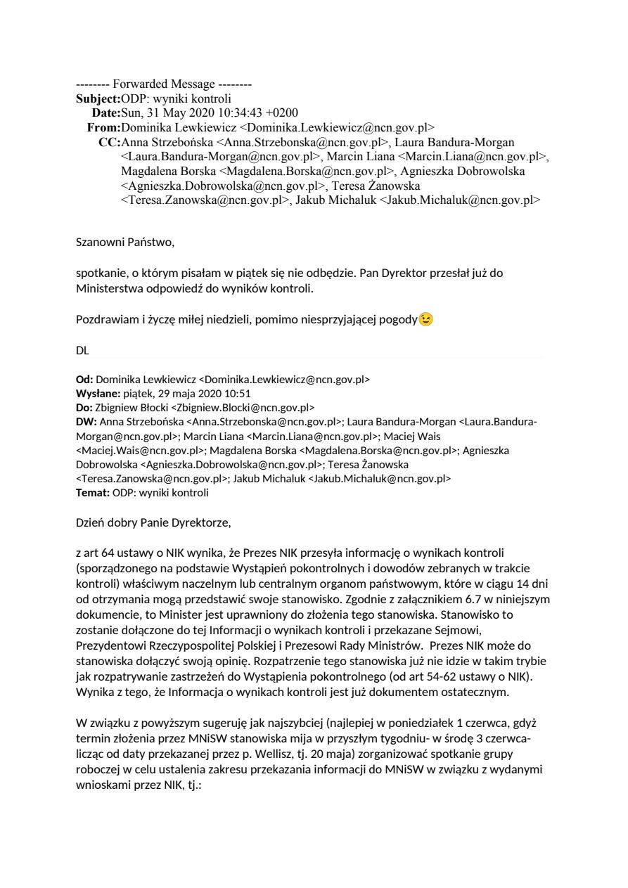
Ukryta odpowiedź Błockiego do NIKPDF - 4.Analiza nagrań audio — kompletPDF
Konflikty interesów i nieprawidłowości w NCN — dokumentacja zebrana przez dr. Witolda Kilarskiego (24 lutego 2026 r.).
Współpraca dyrektora NCN ze swoim wieloletnim znajomym, beneficjentem grantu OPUS.
Pełna chronologia korespondencji Kilarski – Błocki – Drąg – NN.
Materiał wykorzystywany w postępowaniu prokuratorskim i cywilnym.
Ukryta odpowiedź Błockiego do NIK po kontroli, kierowana z pominięciem normalnych procedur konsultacyjnych.
Kontekst: kontrola NIK ws. finansowania badań podstawowych.
Analiza nagrań audio dotyczących sprawy NCN.
Same nagrania audio dostępne są w zakładce „Nagrania".
Pisma sądowe i prokuratorskie
- 5.Apelacja w sprawie karnej II K 321/23/PPDF
- 6.Wnioski dowodowe — postępowanie apelacyjnePDF
- 7.Uzupełnienie apelacji — sprawa I C 1671/22PDF
- 8.Wniosek o wznowienie śledztwa — sygn. 4135-1.Ds.96.2022PDF
- 9.Postanowienie prok. referent (poprzednia sprawa) — umorzeniePDF
Apelacja w sprawie karnej II K 321/23/P prowadzonej przed Sądem Rejonowym dla Krakowa-Podgórza, II Wydział Karny.
Postępowanie skierowane przeciwko Błockiemu jako pokrzywdzonemu (perp2-3).
Wnioski dowodowe i procesowe w postępowaniu apelacyjnym (Sąd Apelacyjny w Krakowie, I Wydział Cywilny).
Sygn. I instancji: I C 1671/22.
Uzupełnienie apelacji od wyroku Sądu Okręgowego w Krakowie z 15 listopada 2024 r. (sędzia referent), sygn. I C 1671/22.
Krytyka wyroku I instancji ws. odpowiedzialności cywilnej w sprawie NCN.
Wniosek o wznowienie śledztwa prowadzonego przez prokurator referent (poprzednia sprawa) (sygn. 4135-1.Ds.96.2022).
Argumentacja: domniemany szantaż, domniemany nepotyzm i kumoterstwo w NCN.
Postanowienie Prokuratury Rejonowej Kraków (prokurator referent (poprzednia sprawa), sygn. 4135-1.Ds.96.2022) o umorzeniu śledztwa.
Decyzja kwestionowana w pkt 8 (wniosek o wznowienie).
Kontekst NCN: Mudelsee, Rada NCN, kontrola NIK
- 10.
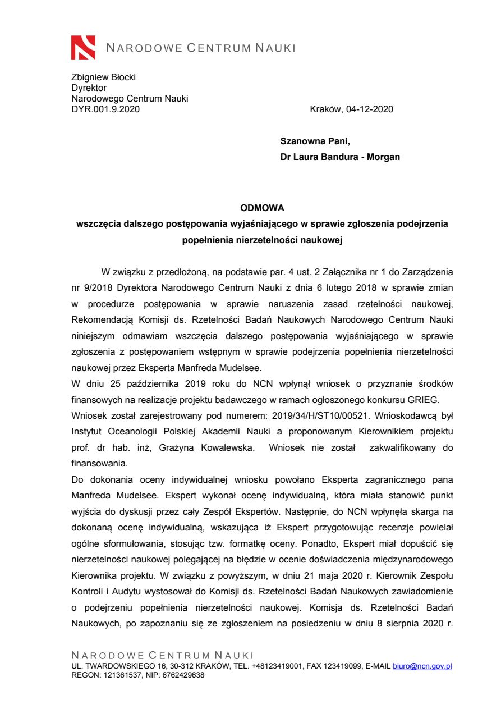
Odmowa Błockiego ws. Mudelsee — 04.12.2020PDF - 11.
 Mudelsee — kopiowane recenzjePDF
Mudelsee — kopiowane recenzjePDF - 12.
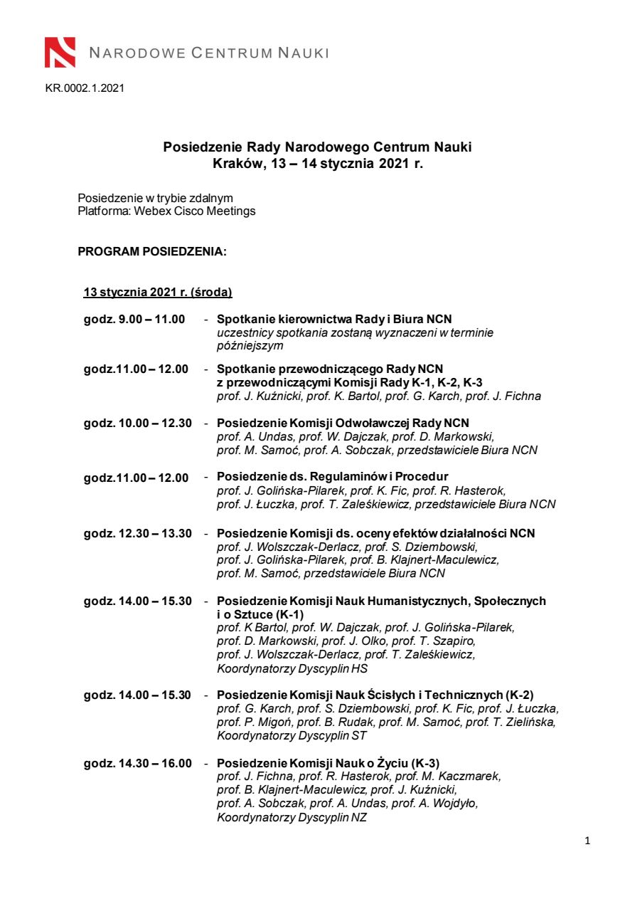
Posiedzenie Rady NCN — styczeń 2021PDF - 13.
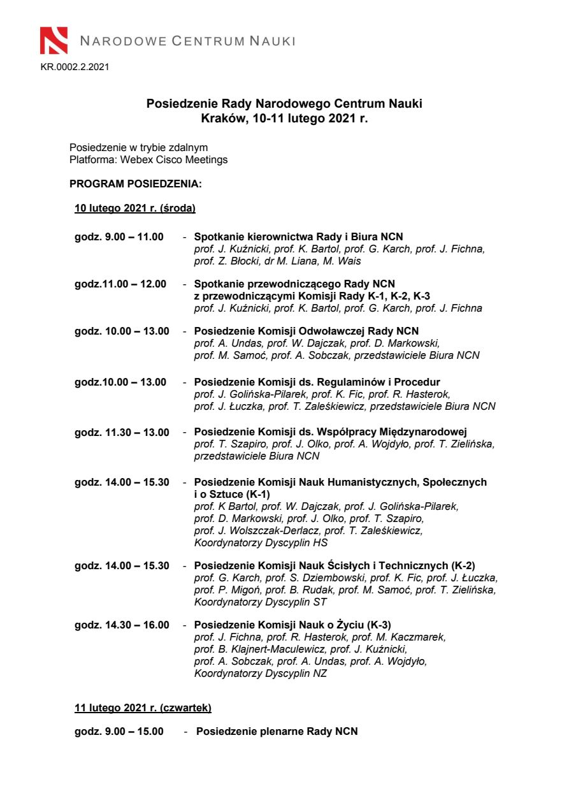
Posiedzenie Rady NCN — luty 2021PDF - 14.
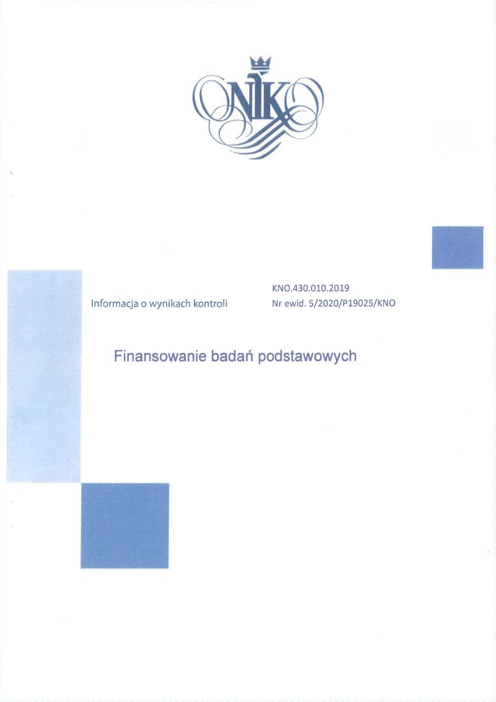
Informacja o wynikach kontroli NIKPDF
Pismo dyrektora Błockiego do dr osoby NN (04.12.2020) — odmowa wszczęcia dalszego postępowania wyjaśniającego ws. eksperta Manfreda Mudelsee.
Sprawa eksperta Mudelsee — nierzetelność w recenzji projektów GRIEG.
Lista osób, w których recenzent Mudelsee skopiował swoją recenzję.
Dowód systemowego mechanizmu nierzetelności.
Programy posiedzeń Rady NCN — 13–14 stycznia oraz 10–11 lutego 2021 r.
Tło instytucjonalne — programy obrad organu nadzorczego NCN.
Informacja NIK o wynikach kontroli „Finansowanie badań podstawowych".
Najwyższa Izba Kontroli — niezależna ocena działalności NCN.
Case against the former NCN Director Zbigniew Błocki, Prof. Wiesław Babik (UJ) and NCN Deputy Director Marcin Liana
This is the original and broadest documentation strand: parallel criminal and civil proceedings concerning the operations of Poland's National Science Centre (NCN) during the directorship of Prof. Zbigniew Błocki (NCN Director, March 2015 – 2023). Also relevant: Prof. Wiesław Babik (UJ), Deputy Director Marcin Liana, and the Dean of UJ's Mathematics Institute (2016–2024) Prof. Włodzimierz Zwonek.
Topics include: conflicts of interest in grant evaluation and reporting (in particular OPUS no. 2015/17/B/ST1/00996), irregularities in the inquiry concerning expert Manfred Mudelsee, hidden NCN correspondence with the Supreme Audit Office (NIK), criminal and civil cases ref. II K 321/23/P and I C 1671/22, and the Kraków District Prosecutor's decisions (ref. 4135-1.Ds.96.2022).
Below: documents already published on this site, grouped thematically for easier navigation.
Substantive documentation and evidence
- 1.Conflicts of interest — Błocki / Babik / Liana / ZwonekPDF
- 2.Email chronology — NCN casePDF
- 3.Błocki's hidden reply to NIKPDF
- 4.Audio recordings — full analysisPDF
Court and prosecutor filings
- 5.Criminal appeal — case II K 321/23/PPDF
- 6.Evidentiary motions — appellate proceedingsPDF
- 7.Appeal supplement — case I C 1671/22PDF
- 8.Motion to reopen — file 4135-1.Ds.96.2022PDF
- 9.the prosecutor (earlier case) decision — discontinuancePDF
NCN context: Mudelsee, NCN Council, NIK audit
- 10.Błocki's refusal — Mudelsee inquiry (04 Dec 2020)PDF
- 11.Mudelsee — copy-pasted reviewsPDF
- 12.NCN Council meeting — January 2021PDF
- 13.NCN Council meeting — February 2021PDF
- 14.NIK audit — basic research fundingPDF
Affaire contre l'ancien Directeur du NCN Zbigniew Błocki, le Prof. Wiesław Babik (UJ) et le Directeur adjoint du NCN Marcin Liana
Volet documentaire le plus ancien et le plus large : procédures pénales et civiles parallèles concernant le fonctionnement du Centre national des sciences (NCN) sous la direction du Prof. Zbigniew Błocki (mars 2015 – 2023). Sont également concernés le Prof. Wiesław Babik (UJ), le Directeur adjoint Marcin Liana et le Doyen de l'Institut de mathématiques de l'UJ (2016–2024) Prof. Włodzimierz Zwonek.
Documents publiés sur ce site, regroupés ci-dessous par thème.
Documents
- 1.Conflits d'intérêts — Błocki / Babik / Liana / ZwonekPDF
- 2.Appel pénal — affaire II K 321/23/PPDF
- 3.Complément d'appel — affaire I C 1671/22PDF
- 4.Refus de Błocki — affaire Mudelsee (04.12.2020)PDF
- 5.Décision prokurator referent (poprzednia sprawa) — classementPDF
- 6.Audit NIK — financement de la recherchePDF
Verfahren gegen den ehemaligen NCN-Direktor Zbigniew Błocki, Prof. Wiesław Babik (UJ) und den stellvertretenden NCN-Direktor Marcin Liana
Der ursprüngliche und umfangreichste Dokumentationsstrang umfasst parallele Straf- und Zivilverfahren zur Tätigkeit des polnischen Nationalen Wissenschaftszentrums (NCN) unter der Leitung von Prof. Zbigniew Błocki (NCN-Direktor von März 2015 bis 2023). Ebenfalls relevant: Prof. Wiesław Babik (UJ), der stellvertretende Direktor Marcin Liana sowie der Dekan des Mathematischen Instituts der UJ (2016–2024) Prof. Włodzimierz Zwonek.
Nachstehend bereits veröffentlichte Dokumente, thematisch gruppiert.
Dokumente
- 1.Interessenkonflikte — Błocki / Babik / Liana / ZwonekPDF
- 2.Strafberufung — Sache II K 321/23/PPDF
- 3.Berufungsergänzung — Sache I C 1671/22PDF
- 4.Ablehnung Błocki — Mudelsee-Sache (04.12.2020)PDF
- 5.Beschluss prokurator referent (poprzednia sprawa) — EinstellungPDF
- 6.NIK-Prüfung — ForschungsfinanzierungPDF
Справа проти колишнього директора NCN Збігнєва Блоцького, проф. Вєслава Бабіка (UJ) та заступника директора NCN Марціна Ліани
Найдавніший і найширший документальний блок: паралельні кримінальні та цивільні провадження щодо діяльності Національного наукового центру Польщі (NCN) під керівництвом проф. Збігнєва Блоцького (директор NCN, березень 2015 – 2023). Дотичні особи: проф. Вєслав Бабік (UJ), заступник директора Марцін Ліана, декан Інституту математики UJ (2016–2024) проф. Влодзімєж Звонек.
Документи, опубліковані на цьому сайті, згруповано тематично нижче.
Документи
- 1.Конфлікти інтересів — Блоцький / Бабік / Ліана / ЗвонекPDF
- 2.Кримінальна апеляція — справа II K 321/23/PPDF
- 3.Доповнення апеляції — справа I C 1671/22PDF
- 4.Відмова Блоцького — справа Мудельзе (04.12.2020)PDF
- 5.Постанова прокурора Охонської-Врубель — закриттяPDF
- 6.Аудит NIK — фінансування дослідженьPDF
WUM odcina mnie po piśmie Dyrektora NCN — jeden e-mail, który mówi wszystko
To pojedynczy e-mail — cyngiel, który uruchomił lawinę. 11 marca 2022 r. Anetta Pszczołowska, Kierownik Działu Wsparcia Projektów Warszawskiego Uniwersytetu Medycznego, informuje mnie, że w odpowiedzi na pismo Dyrektora Narodowego Centrum Nauki WUM oficjalnie odcina się od moich działań i nie podpisze wniosku o ponowne rozpatrzenie sprawy do Dyrektora NAWA (Polskie Powroty 2021).
Innymi słowy: jedno pismo dyrektora NCN do innej uczelni wystarcza, by zablokować mi możliwość złożenia odwołania w konkursie grantowym — bez żadnego postępowania, bez wysłuchania, bez procedury.
On Fri, Mar 11, 2022 at 3:44 PM Anetta Pszczołowska wrote:
Szanowny Panie,
Od radcy prawnego WUM Pana Wojciecha Rajchela uzyskałam informację, że w grudniu ubiegłego roku podjęte zostały bezskuteczne próby kontaktu z Panem dotyczące m.in. złożonego w konkursie Polskie Powroty wniosku o dofinansowanie do NAWA.
W związku z brakiem wyjaśnień z Pana strony została skierowana odpowiedź na pismo Dyrektora Narodowego Centrum Nauki, zgodnie z którą wszelkie Pana działania od dnia wysłania pisma nie będą uważane za działania w imieniu Warszawskiego Uniwersytetu Medycznego.
Wobec powyższego Pan Prorektor Profesor Pruszczyk poinformował mnie, że Warszawski Uniwersytet Medyczny nie podpisze wniosku o ponowne rozpatrzenie sprawy do Dyrektora NAWA.
Z poważaniem / Regards,
Anetta Pszczołowska, MBA
Kierownik Działu Wsparcia Projektów / Manager of the Project Support Department
Warszawski Uniwersytet Medyczny / Medical University of Warsaw
tel. (+48) 22 57 20 469
www.pnitt.wum.edu.plŹródło: Fwd: ODP: POLSKIE POWROTY 2021, str. 2 z 18 (10/10/2022, 15:06).
Dokument
- 1.E-mail Anetty Pszczołowskiej (WUM) — 11.03.2022, godz. 15:44HTML
Pełna treść e-maila Anetty Pszczołowskiej (WUM) z 11 marca 2022 r. — do podglądu i pobrania.
E-mail dokumentuje moment, w którym pismo Dyrektora NCN realnie przekłada się na decyzję macierzystej instytucji — i odcina mi drogę odwołania w konkursie NAWA Polskie Powroty 2021.
WUM cuts me off after the NCN Director's letter — one email that says it all
A single email — the trigger that set off the avalanche. On 11 March 2022, Anetta Pszczołowska, Manager of the Project Support Department at the Medical University of Warsaw (WUM), informs me that, in reply to a letter from the Director of the National Science Centre (NCN), WUM officially distances itself from my actions and will not sign the request for reconsideration to the NAWA Director (Polskie Powroty 2021).
In other words: a single letter from the NCN Director to another university is enough to block my ability to appeal in a grant competition — with no proceedings, no hearing, no due process.
On Fri, Mar 11, 2022 at 3:44 PM Anetta Pszczołowska wrote:
Dear Sir,
From WUM's legal counsel, Mr Wojciech Rajchel, I have been informed that in December last year unsuccessful attempts were made to contact you regarding, among other things, the application for NAWA funding submitted in the Polskie Powroty competition.
In view of the lack of explanations from your side, a reply was sent to the letter of the Director of the National Science Centre, according to which any of your actions from the date of that letter will not be considered actions on behalf of the Medical University of Warsaw.
Accordingly, Vice-Rector Professor Pruszczyk informed me that the Medical University of Warsaw will not sign the request for reconsideration to the NAWA Director.
Z poważaniem / Regards,
Anetta Pszczołowska, MBA
Manager of the Project Support Department
Medical University of Warsaw
tel. (+48) 22 57 20 469
www.pnitt.wum.edu.plSource: Fwd: ODP: POLSKIE POWROTY 2021, p. 2 of 18 (10/10/2022, 15:06).
Document
- 1.Email from Anetta Pszczołowska (WUM) — 11 March 2022, 3:44 PMHTML
Full text of Anetta Pszczołowska's (WUM) email of 11 March 2022 — preview and download.
The email documents the moment when a letter from the NCN Director translates directly into a decision by the host institution — cutting off my route to appeal in the NAWA Polskie Powroty 2021 competition.
L'Université de médecine de Varsovie me coupe après la lettre du directeur du NCN — un seul e-mail qui dit tout
Un seul e-mail — la gâchette qui a déclenché l'avalanche. Le 11 mars 2022, Anetta Pszczołowska, responsable du département de soutien aux projets de l'Université de médecine de Varsovie (WUM), m'informe qu'en réponse à la lettre du directeur du Centre national des sciences (NCN), la WUM se désolidarise officiellement de mes actions et ne signera pas la demande de réexamen auprès du directeur de la NAWA (Polskie Powroty 2021).
Autrement dit : une seule lettre du directeur du NCN à une autre université suffit pour me priver de la possibilité de faire appel dans un concours de bourses — sans procédure, sans audition, sans contradictoire.
Le vendredi 11 mars 2022 à 15h44, Anetta Pszczołowska a écrit :
Monsieur,
Le conseiller juridique de la WUM, M. Wojciech Rajchel, m'a informée qu'en décembre dernier des tentatives de contact infructueuses ont été entreprises avec vous concernant, entre autres, la demande de financement déposée dans le concours Polskie Powroty auprès de la NAWA.
En l'absence d'explications de votre part, une réponse a été adressée à la lettre du directeur du Centre national des sciences (NCN), selon laquelle toutes vos actions à partir de la date de cette lettre ne seront plus considérées comme des actions au nom de l'Université de médecine de Varsovie.
En conséquence, le vice-recteur, le professeur Pruszczyk, m'a informée que l'Université de médecine de Varsovie ne signera pas la demande de réexamen adressée au directeur de la NAWA.
Z poważaniem / Regards,
Anetta Pszczołowska, MBA
Responsable du département de soutien aux projets
Université de médecine de Varsovie
tél. (+48) 22 57 20 469
www.pnitt.wum.edu.plSource : Fwd: ODP: POLSKIE POWROTY 2021, p. 2 sur 18 (10/10/2022, 15:06).
Document
- 1.E-mail d'Anetta Pszczołowska (WUM) — 11 mars 2022, 15h44HTML
Texte intégral de l'e-mail d'Anetta Pszczołowska (WUM) du 11 mars 2022 — aperçu et téléchargement.
L'e-mail documente le moment où une lettre du directeur du NCN se traduit directement par une décision de l'établissement d'accueil — me coupant la voie de recours dans le concours NAWA Polskie Powroty 2021.
WUM bricht den Kontakt nach dem Schreiben des NCN-Direktors ab — eine einzige E-Mail, die alles sagt
Eine einzige E-Mail — der Auslöser, der die Lawine in Gang setzte. Am 11. März 2022 teilt mir Anetta Pszczołowska, Leiterin der Abteilung Projektunterstützung an der Medizinischen Universität Warschau (WUM), mit, dass die WUM in Reaktion auf ein Schreiben des Direktors des Nationalen Wissenschaftszentrums (NCN) sich offiziell von meinen Handlungen distanziert und den Antrag auf erneute Prüfung an den Direktor der NAWA (Polskie Powroty 2021) nicht unterzeichnen wird.
Mit anderen Worten: ein einziges Schreiben des NCN-Direktors an eine andere Universität reicht aus, um mir die Möglichkeit eines Widerspruchs im Förderwettbewerb zu nehmen — ohne Verfahren, ohne Anhörung, ohne ordentliche Prozedur.
Am Freitag, 11. März 2022 um 15:44 Uhr schrieb Anetta Pszczołowska:
Sehr geehrter Herr,
Vom Rechtsberater der WUM, Herrn Wojciech Rajchel, habe ich die Information erhalten, dass im Dezember des vergangenen Jahres erfolglose Kontaktversuche mit Ihnen unternommen wurden, u. a. bezüglich des im Wettbewerb Polskie Powroty bei der NAWA eingereichten Förderantrags.
Da von Ihrer Seite keine Erklärungen vorliegen, wurde eine Antwort auf das Schreiben des Direktors des Nationalen Wissenschaftszentrums verfasst, wonach alle Ihre Handlungen ab dem Datum dieses Schreibens nicht als Handlungen im Namen der Medizinischen Universität Warschau gelten werden.
Vor diesem Hintergrund hat mich Herr Prorektor Professor Pruszczyk informiert, dass die Medizinische Universität Warschau den Antrag auf erneute Prüfung an den Direktor der NAWA nicht unterzeichnen wird.
Z poważaniem / Regards,
Anetta Pszczołowska, MBA
Leiterin der Abteilung Projektunterstützung
Medizinische Universität Warschau
Tel. (+48) 22 57 20 469
www.pnitt.wum.edu.plQuelle: Fwd: ODP: POLSKIE POWROTY 2021, S. 2 von 18 (10/10/2022, 15:06).
Dokument
- 1.E-Mail von Anetta Pszczołowska (WUM) — 11. März 2022, 15:44 UhrHTML
Vollständiger Text der E-Mail von Anetta Pszczołowska (WUM) vom 11. März 2022 — Vorschau und Download.
Die E-Mail dokumentiert den Moment, in dem ein Schreiben des NCN-Direktors unmittelbar zu einer Entscheidung der aufnehmenden Einrichtung führt — und mir den Weg zum Widerspruch im NAWA-Wettbewerb Polskie Powroty 2021 abschneidet.
WUM відсікає мене після листа Директора NCN — один лист, який говорить усе
Один лист — спусковий гачок, який запустив лавину. 11 березня 2022 року Анетта Пщоловська, керівник відділу підтримки проєктів Варшавського медичного університету (WUM), повідомляє мене, що у відповідь на лист Директора Національного наукового центру (NCN) WUM офіційно відмежовується від моїх дій та не підпише заявки про повторний розгляд до Директора NAWA (Polskie Powroty 2021).
Інакше кажучи: одного листа Директора NCN до іншого університету достатньо, щоб позбавити мене можливості оскарження у грантовому конкурсі — без жодної процедури, без вислуховування, без належного процесу.
У п'ятницю, 11 березня 2022 р. о 15:44 Анетта Пщоловська написала:
Шановний Пане,
Від юрисконсульта WUM пана Войцеха Райхеля я отримала інформацію, що в грудні минулого року були безрезультатні спроби зв'язатися з вами щодо, зокрема, поданої у конкурсі Polskie Powroty заявки на фінансування до NAWA.
У зв'язку з відсутністю пояснень з вашого боку було направлено відповідь на лист Директора Національного наукового центру, згідно з якою будь-які ваші дії від дати відправлення листа не вважатимуться діями від імені Варшавського медичного університету.
У зв'язку з цим проректор професор Прущик повідомив мені, що Варшавський медичний університет не підпише заявки про повторний розгляд до Директора NAWA.
Z poważaniem / Regards,
Анетта Пщоловська, MBA
Керівник відділу підтримки проєктів
Варшавський медичний університет
тел. (+48) 22 57 20 469
www.pnitt.wum.edu.plДжерело: Fwd: ODP: POLSKIE POWROTY 2021, стор. 2 з 18 (10/10/2022, 15:06).
Документ
- 1.Лист Анетти Пщоловської (WUM) — 11 березня 2022 р., 15:44HTML
Повний текст листа Анетти Пщоловської (WUM) від 11 березня 2022 р. — перегляд та завантаження.
Саме цей лист фіксує момент, коли лист Директора NCN безпосередньо перетворюється на рішення університету прийому — відрізаючи мені шлях до оскарження у конкурсі NAWA Polskie Powroty 2021.
NCN ignoruje seryjne (maszynowe) pisanie recenzji — sprawa Manfreda Mudelsee
Sprawa pokazuje, jak NCN chronił zagranicznego eksperta, który złożył seryjnie powielone, niemalże maszynowo wygenerowane recenzje do wielu wniosków grantowych w programie GRIEG. Ekspert Manfred Mudelsee używał identycznych szablonów tekstowych do oceny różnych naukowców, niekiedy przyznając wysokie noty, a innym razem niskie — używając tych samych skopiowanych fraz. Mimo zgłoszenia, dyrekcja NCN świadomie zignorowała problem.
Mimo formalnej skargi osoby NN do Komisji ds. Rzetelności Badań, dyrektor NCN Zbigniew Błocki oficjalnie odmówił zbadania sprawy, twierdząc, że zachowanie eksperta nie stanowi „przewinienia dyscyplinarnego w nauce". Decyzja ta zapadła tego samego dnia, gdy Błocki potajemnie przygotowywał odpowiedź NCN na audyt NIK (Najwyższej Izby Kontroli), który krytykował procedury kontrolne NCN.
Dokumenty
- 1.
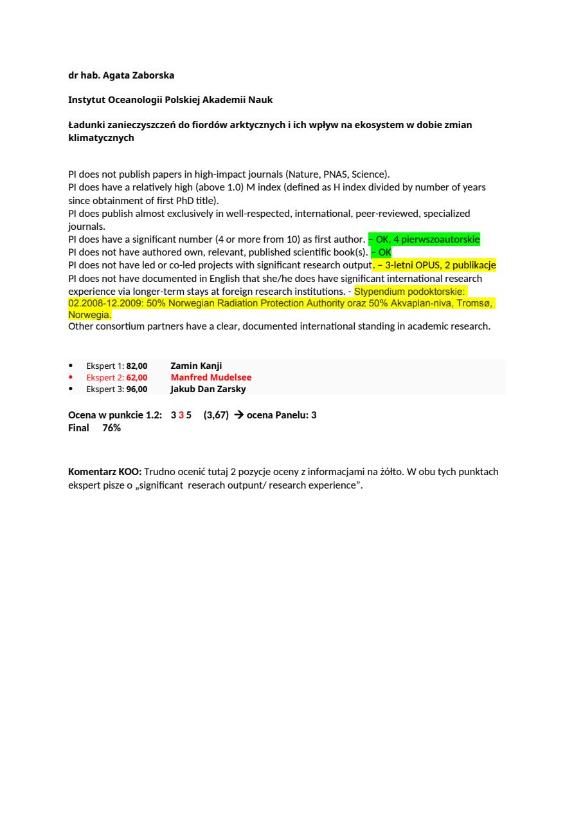
Analiza recenzji Mudelsee — kopiuj-wklej w wielu wnioskach GRIEG (Zaborska, Grabiec, Bąk, Szymczycha)DOCX - 2.Wewnętrzne maile NCN — NN zgłasza nieprawidłowe recenzje eksperta. Odrzucająca odpowiedź Anny Wieczorek.DOCX
- 3.Oficjalne pismo NCN (podpisane przez Błockiego, 04.12.2020) ODMAWIAJĄCE zbadania przewinienia MudelseePDF
- 4.Tajna odpowiedź Błockiego na wyniki kontroli NIK, wysłana 29 maja 2020 (tego samego dnia co domniemany szantaż!)DOCX
- 5.
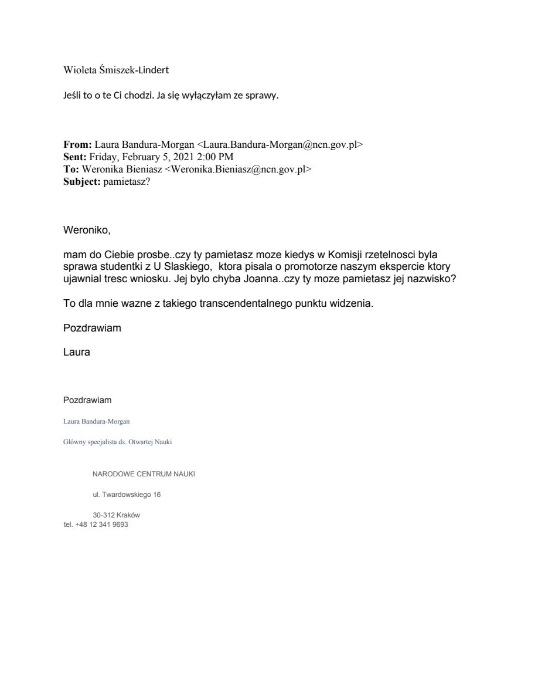
Wewnętrzne maile NCN o kontroli NIK — NN pyta o studenta zgłaszającego ujawnienie treści wniosku przez ekspertaDOCX - 6.Pełny raport NIK o finansowaniu badań podstawowych przez NCNPDF
- 7.Program posiedzenia Rady NCN 13–14 stycznia 2021 — powołanie Komisji ds. Rzetelności BadańPDF
- 8.Program posiedzenia Rady NCN 10–11 lutego 2021PDF
Analiza recenzji Mudelsee — identyczne fragmenty tekstu użyte w recenzjach wielu wniosków GRIEG (Zaborska, Grabiec, Bąk, Szymczycha).
Porównanie cytatów pokazuje, że te same zdania — czasem z dodatkami, czasem niezmienione — oceniają różnych naukowców, co podważa niezależność oceny eksperckiej.
Wewnętrzne e-maile NCN — NN formalnie zgłasza nieprawidłowości w recenzjach Mudelsee.
Odpowiedź Anny Wieczorek jest odrzucająca; pokazuje, że NCN zinternalizował problem zamiast go rozwiązać.
Oficjalne pismo NCN podpisane przez dyrektora Błockiego (4 grudnia 2020 r.) — ODMOWA zbadania zarzutu przewinienia dyscyplinarnego Mudelsee.
Data pisma jest znacząca — zapada tego samego dnia, w którym Błocki przygotowuje tajną odpowiedź NCN na kontrolę NIK.
Tajna odpowiedź dyrektora Błockiego na wyniki kontroli NIK — wysłana 29 maja 2020 r., tego samego dnia co ultimatum przekazane przez NN.
Zbieżność dat nie jest przypadkowa: krytyka ze strony NIK i domniemany szantaż Kilarskiego są dwoma liniami działań z tego samego dnia.
Wewnętrzne e-maile NCN dotyczące kontroli NIK — NN pyta o studenta, który zgłosił ujawnienie treści wniosku przez eksperta.
Maile pokazują, że NN próbowała formalnie uruchomić procedurę wyjaśniającą, lecz została zbyta przez dyrekcję.
Pełny raport NIK o finansowaniu badań podstawowych przez NCN — publiczny dokument audytowy.
Raport krytykuje procedury NCN; sprawa Mudelsee jest jednym z konkretnych przykładów problemu opisanego przez audytorów.
Program posiedzenia Rady NCN 13–14 stycznia 2021 r. — powołanie Komisji ds. Rzetelności Badań.
Powołanie komisji następuje po sprawie Mudelsee, ale jej działania nie doprowadziły do realnego wszczęcia postępowania dyscyplinarnego.
Program posiedzenia Rady NCN 10–11 lutego 2021 r. — kolejne posiedzenie w tle sprawy Mudelsee.
Porównanie programów z obu posiedzeń pokazuje, że kwestia rzetelności recenzji nie została zaadresowana merytorycznie.
NCN ignores serial (machine-style) review writing — the Manfred Mudelsee case
The case shows how NCN protected a foreign expert who submitted serially duplicated, near-machine-generated reviews for multiple grant applications in the GRIEG programme. Expert Manfred Mudelsee used identical text templates to evaluate different researchers, sometimes giving high marks and sometimes low marks using the same copied phrases. Despite formal notice, the NCN leadership chose to ignore the problem.
Despite NN's formal complaint to the Research Integrity Commission, NCN Director Zbigniew Błocki officially refused to investigate, claiming the expert's behavior did not constitute "scientific misconduct." The decision came on the same day Błocki was secretly preparing NCN's response to the NIK (Supreme Audit Office) audit that criticized NCN's control procedures.
Documents
- 1.Analysis of Mudelsee's copy-paste reviews across multiple GRIEG applications (Zaborska, Grabiec, Bąk, Szymczycha)DOCX
- 2.Internal NCN emails — NN raised concerns about improper expert reviews. Anna Wieczorek's dismissive response.DOCX
- 3.Official NCN document (signed by Błocki, 04.12.2020) REFUSING to investigate Mudelsee's misconductPDF
- 4.Błocki's secret reply to NIK control results, sent 29 May 2020 (same day as the alleged blackmail!)DOCX
- 5.Internal NCN emails about NIK control — NN asks about a student who reported an expert disclosing grant contentsDOCX
- 6.Full NIK audit report on NCN funding of basic researchPDF
- 7.NCN Council meeting program, 13–14 January 2021 — appointing Commission for Research IntegrityPDF
- 8.NCN Council meeting program, 10–11 February 2021PDF
An analysis of Mudelsee's reviews — identical text fragments used in reviews of multiple GRIEG applications (Zaborska, Grabiec, Bąk, Szymczycha).
A side-by-side comparison shows that the same sentences — sometimes with additions, sometimes unchanged — evaluate different researchers, undermining the independence of expert assessment.
Internal NCN emails — NN formally raises irregularities in Mudelsee's reviews.
Anna Wieczorek's reply is dismissive, showing that NCN internalised the problem rather than resolving it.
An official NCN letter signed by Director Błocki (4 December 2020) — REFUSAL to investigate the charge of disciplinary misconduct against Mudelsee.
The date of the letter is telling — it is issued on the same day Błocki is preparing NCN's secret reply to the NIK audit.
Director Błocki's secret reply to the NIK audit findings — sent on 29 May 2020, the same day as the ultimatum conveyed through NN.
The coincidence of dates is not accidental: NIK criticism and the Kilarski alleged blackmail are two lines of action from the same day.
Internal NCN emails about the NIK audit — NN asks about a student who reported an expert disclosing the contents of an application.
The emails show that NN tried formally to trigger an inquiry procedure but was brushed off by management.
The full NIK audit report on NCN's funding of basic research — a public audit document.
The report criticises NCN procedures; the Mudelsee case is a concrete instance of the problem described by the auditors.
Programme of the NCN Council meeting of 13–14 January 2021 — appointing the Commission for Research Integrity.
The commission is appointed after the Mudelsee case, but its work did not lead to an actual disciplinary proceeding.
Programme of the NCN Council meeting of 10–11 February 2021 — a further session against the backdrop of the Mudelsee case.
Comparing the agendas of both meetings shows that the integrity of reviews was not addressed substantively.
Les évaluations falsifiées de Manfred Mudelsee
L'affaire Mudelsee démontre comment le NCN a protégé un expert étranger qui a soumis des évaluations copiées-collées pour plusieurs demandes de subvention dans le programme GRIEG. L'expert Manfred Mudelsee utilisait des modèles de texte identiques pour évaluer différents chercheurs, attribuant parfois des notes élevées et parfois basses en utilisant les mêmes phrases copiées.
Malgré la plainte formelle de NN à la Commission pour l'intégrité de la recherche, le directeur du NCN Zbigniew Błocki a officiellement refusé d'enquêter, affirmant que le comportement de l'expert ne constituait pas une « faute scientifique ». Cette décision a été prise le même jour où Błocki préparait secrètement la réponse du NCN à l'audit de la NIK (Cour suprême de contrôle) qui critiquait les procédures de contrôle du NCN.
Documents
- 1.Analyse des évaluations copiées-collées de Mudelsee dans plusieurs demandes GRIEG (Zaborska, Grabiec, Bąk, Szymczycha)DOCX
- 2.E-mails internes du NCN — NN signale des évaluations inappropriées. Réponse dédaigneuse d'Anna Wieczorek.DOCX
- 3.Document officiel du NCN (signé par Błocki, 04.12.2020) REFUSANT d'enquêter sur la faute de MudelseePDF
- 4.Réponse secrète de Błocki aux résultats du contrôle NIK, envoyée le 29 mai 2020 (le même jour que le chantage présumé !)DOCX
- 5.E-mails internes du NCN sur le contrôle NIK — NN interroge sur un étudiant signalant la divulgation du contenu d'une demande par un expertDOCX
- 6.Rapport complet d'audit de la NIK sur le financement de la recherche fondamentale par le NCNPDF
- 7.Programme de la réunion du Conseil NCN, 13–14 janvier 2021 — nomination de la Commission pour l'intégrité de la recherchePDF
- 8.Programme de la réunion du Conseil NCN, 10–11 février 2021PDF
Analyse des évaluations de Mudelsee — des fragments de texte identiques utilisés dans les évaluations de plusieurs demandes GRIEG (Zaborska, Grabiec, Bąk, Szymczycha).
La comparaison côte à côte montre que les mêmes phrases — parfois avec ajouts, parfois inchangées — évaluent des chercheurs différents, ce qui compromet l'indépendance de l'évaluation.
E-mails internes du NCN — NN signale formellement les irrégularités dans les évaluations de Mudelsee.
La réponse d'Anna Wieczorek est dédaigneuse, montrant que le NCN a intériorisé le problème au lieu de le résoudre.
Lettre officielle du NCN signée par le directeur Błocki (4 décembre 2020) — REFUS d'enquêter sur le grief disciplinaire visant Mudelsee.
La date de la lettre est éloquente — elle est émise le jour même où Błocki prépare la réponse secrète du NCN à l'audit NIK.
Réponse secrète du directeur Błocki aux conclusions de l'audit NIK — envoyée le 29 mai 2020, le jour même de l'ultimatum transmis par NN.
La coïncidence des dates n'est pas fortuite : la critique de la NIK et le chantage présumé contre Kilarski constituent deux lignes d'action le même jour.
E-mails internes du NCN sur le contrôle NIK — NN interroge au sujet d'un étudiant signalant la divulgation du contenu d'une demande par un expert.
Les e-mails montrent que NN a tenté de déclencher formellement une procédure d'enquête, mais a été écartée par la direction.
Rapport complet de la NIK sur le financement par le NCN de la recherche fondamentale — document d'audit public.
Le rapport critique les procédures du NCN ; l'affaire Mudelsee est un exemple concret du problème décrit par les auditeurs.
Ordre du jour de la réunion du Conseil NCN des 13–14 janvier 2021 — désignation de la Commission pour l'intégrité de la recherche.
La commission est désignée après l'affaire Mudelsee, mais ses travaux n'ont pas conduit à une procédure disciplinaire effective.
Ordre du jour de la réunion du Conseil NCN des 10–11 février 2021 — nouvelle séance sur fond d'affaire Mudelsee.
La comparaison des ordres du jour des deux réunions montre que la question de l'intégrité des évaluations n'a pas été traitée sur le fond.
Manfred Mudelsees gefälschte Gutachten
Der Fall Mudelsee zeigt, wie das NCN einen ausländischen Gutachter schützte, der kopierte Gutachten für mehrere Förderanträge im GRIEG-Programm einreichte. Der Gutachter Manfred Mudelsee verwendete identische Textvorlagen zur Bewertung verschiedener Forscher, wobei er manchmal hohe und manchmal niedrige Noten vergab — mit denselben kopierten Formulierungen.
Trotz der formellen Beschwerde von NN bei der Kommission für Forschungsintegrität weigerte sich NCN-Direktor Zbigniew Błocki offiziell, den Fall zu untersuchen, und behauptete, das Verhalten des Gutachters stelle kein „wissenschaftliches Fehlverhalten" dar. Die Entscheidung fiel am selben Tag, an dem Błocki heimlich die NCN-Antwort auf den NIK-Audit (Oberste Rechnungskammer) vorbereitete, der die Kontrollverfahren des NCN kritisierte.
Dokumente
- 1.Analyse von Mudelsees kopierten Gutachten über mehrere GRIEG-Anträge (Zaborska, Grabiec, Bąk, Szymczycha)DOCX
- 2.Interne NCN-E-Mails — NN meldet unsachgemäße Expertengutachten. Abweisende Antwort von Anna Wieczorek.DOCX
- 3.Offizielles NCN-Dokument (von Błocki unterzeichnet, 04.12.2020) — ABLEHNUNG der Untersuchung von Mudelsees FehlverhaltenPDF
- 4.Błockis geheime Antwort auf die NIK-Kontrollergebnisse, gesendet am 29. Mai 2020 (am selben Tag wie die mutmaßliche Erpressung!)DOCX
- 5.Interne NCN-E-Mails zur NIK-Kontrolle — NN fragt nach einem Studenten, der die Offenlegung von Antragsinhalten durch einen Gutachter meldeteDOCX
- 6.Vollständiger NIK-Prüfungsbericht über die Finanzierung der Grundlagenforschung durch das NCNPDF
- 7.Programm der NCN-Ratssitzung, 13.–14. Januar 2021 — Ernennung der Kommission für ForschungsintegritätPDF
- 8.Programm der NCN-Ratssitzung, 10.–11. Februar 2021PDF
Eine Analyse von Mudelsees Gutachten — identische Textfragmente in Gutachten zu mehreren GRIEG-Anträgen (Zaborska, Grabiec, Bąk, Szymczycha).
Der direkte Vergleich zeigt, dass dieselben Sätze — mal mit Ergänzungen, mal unverändert — unterschiedliche Forscher bewerten und damit die Unabhängigkeit der Expertenbewertung untergraben.
Interne NCN-E-Mails — NN meldet formal Unregelmäßigkeiten in Mudelsees Gutachten.
Die Antwort von Anna Wieczorek ist abweisend und zeigt, dass das NCN das Problem verinnerlichte, statt es zu lösen.
Offizielles NCN-Schreiben, unterzeichnet von Direktor Błocki (4. Dezember 2020) — ABLEHNUNG der Untersuchung des Vorwurfs des Dienstvergehens gegen Mudelsee.
Das Datum des Schreibens ist vielsagend — es ergeht am selben Tag, an dem Błocki die geheime NCN-Antwort auf die NIK-Prüfung vorbereitet.
Die geheime Antwort von Direktor Błocki auf die NIK-Prüfungsergebnisse — gesendet am 29. Mai 2020, am selben Tag wie das durch NN übermittelte Ultimatum.
Das Zusammenfallen der Daten ist kein Zufall: die NIK-Kritik und die mutmaßliche Erpressung Kilarskis sind zwei Handlungsstränge desselben Tages.
Interne NCN-E-Mails zur NIK-Prüfung — NN fragt nach einem Studenten, der die Offenlegung des Antragsinhalts durch einen Gutachter gemeldet hat.
Die E-Mails zeigen, dass NN versuchte, formal ein Klärungsverfahren in Gang zu setzen, von der Leitung aber abgewimmelt wurde.
Der vollständige NIK-Prüfbericht über die NCN-Förderung der Grundlagenforschung — ein öffentliches Prüfdokument.
Der Bericht kritisiert die NCN-Verfahren; der Fall Mudelsee ist ein konkretes Beispiel für das von den Prüfern beschriebene Problem.
Programm der NCN-Ratssitzung vom 13.–14. Januar 2021 — Einsetzung der Kommission für Forschungsintegrität.
Die Kommission wird nach dem Fall Mudelsee eingesetzt, führt aber nicht zu einem tatsächlichen Disziplinarverfahren.
Programm der NCN-Ratssitzung vom 10.–11. Februar 2021 — weitere Sitzung vor dem Hintergrund des Falls Mudelsee.
Der Vergleich der Tagesordnungen beider Sitzungen zeigt, dass die Frage der Gutachtenintegrität inhaltlich nicht behandelt wurde.
Сфальсифіковані рецензії Манфреда Мудельзе
Справа Мудельзе демонструє, як NCN захищав іноземного експерта, який подав скопійовані рецензії до багатьох грантових заявок у програмі GRIEG. Експерт Манфред Мудельзе використовував ідентичні текстові шаблони для оцінки різних дослідників, іноді виставляючи високі оцінки, а іноді низькі — використовуючи ті самі скопійовані фрази.
Незважаючи на офіційну скаргу особи NN до Комісії з доброчесності досліджень, директор NCN Збігнев Блоцкі офіційно відмовився від розслідування, стверджуючи, що поведінка експерта не є «науковим проступком». Рішення було прийнято того ж дня, коли Блоцкі таємно готував відповідь NCN на аудит НІК (Вищої контрольної палати), який критикував контрольні процедури NCN.
Документи
- 1.Аналіз скопійованих рецензій Мудельзе в кількох заявках GRIEG (Заборська, Грабєц, Бонк, Шимчиха)DOCX
- 2.Внутрішні листи NCN — NN повідомляє про неналежні експертні рецензії. Зневажлива відповідь Анни Вєчорек.DOCX
- 3.Офіційний документ NCN (підписаний Блоцкім, 04.12.2020) — ВІДМОВА від розслідування проступку МудельзеPDF
- 4.Таємна відповідь Блоцкого на результати контролю НІК, надіслана 29 травня 2020 (того ж дня, що й шантаж!)DOCX
- 5.Внутрішні листи NCN про контроль НІК — NN запитує про студента, який повідомив про розголошення експертом змісту заявкиDOCX
- 6.Повний звіт аудиту НІК про фінансування фундаментальних досліджень NCNPDF
- 7.Програма засідання Ради NCN, 13–14 січня 2021 — призначення Комісії з доброчесності дослідженьPDF
- 8.Програма засідання Ради NCN, 10–11 лютого 2021PDF
Аналіз рецензій Мудельзе — ідентичні фрагменти тексту, використані в рецензіях кількох заявок GRIEG (Заборська, Грабєц, Бонк, Шимчиха).
Порівняння поряд показує, що ті самі речення — іноді з доповненнями, іноді незмінені — оцінюють різних дослідників, що підриває незалежність експертної оцінки.
Внутрішні листи NCN — NN офіційно повідомляє про порушення в рецензіях Мудельзе.
Відповідь Анни Вєчорек є зневажливою; це показує, що NCN інтерналізував проблему замість її вирішувати.
Офіційний лист NCN за підписом директора Блоцкого (4 грудня 2020 р.) — ВІДМОВА розслідувати звинувачення в дисциплінарному проступку Мудельзе.
Дата листа показова — його видано того самого дня, коли Блоцкі готує таємну відповідь NCN на аудит НІК.
Таємна відповідь директора Блоцкого на результати аудиту НІК — надіслана 29 травня 2020 р., того ж дня, що й переданий NN ультиматум.
Збіг дат не випадковий: критика з боку НІК і шантаж Кіларського — дві лінії дій того самого дня.
Внутрішні листи NCN про аудит НІК — NN запитує про студента, який повідомив про розголошення експертом змісту заявки.
Листи показують, що NN намагалася формально запустити процедуру з'ясування, але керівництво її відсунуло.
Повний звіт НІК про фінансування фундаментальних досліджень NCN — публічний аудиторський документ.
Звіт критикує процедури NCN; справа Мудельзе — конкретний приклад проблеми, описаної аудиторами.
Порядок денний засідання Ради NCN 13–14 січня 2021 р. — призначення Комісії з доброчесності досліджень.
Комісію створено після справи Мудельзе, але її діяльність не призвела до реального дисциплінарного провадження.
Порядок денний засідання Ради NCN 10–11 лютого 2021 р. — нове засідання на тлі справи Мудельзе.
Порівняння порядків денних обох засідань показує, що питання доброчесності рецензій не було розглянуто по суті.
Kluczowe daty
Key Dates
Dates clés
Wichtige Daten
Ключові дати
Dr Witold Kilarski
Biolog specjalizujący się w badaniach nad układem limfatycznym. Doktorat uzyskał na Uniwersytecie w Uppsali (Szwecja). Pracował jako postdoc w EPFL w Lozannie (Szwajcaria) i na Uniwersytecie w Bordeaux (Francja), a następnie jako Research Assistant Professor na Wydziale Inżynierii Biomedycznej Uniwersytetu w Chicago (USA), w laboratorium prof. Melody Swartz.
Przez ponad dekadę prowadził badania nad biologią naczyń limfatycznych, publikując w międzynarodowych czasopismach naukowych. Po powrocie do Polski w 2020 roku ubiegał się o grant NAWA na badania nad leczeniem cukrzycy typu 1.
Obecnie bezrobotny — w wyniku działań NCN i dyrektora Błockiego, jego kariera naukowa została zniszczona. Zamiast prowadzić badania nad leczeniem cukrzycy, zmuszony jest bronić się przed procesami sądowymi wszczętymi przez instytucję, która powinna wspierać naukę.
Curriculum Vitae
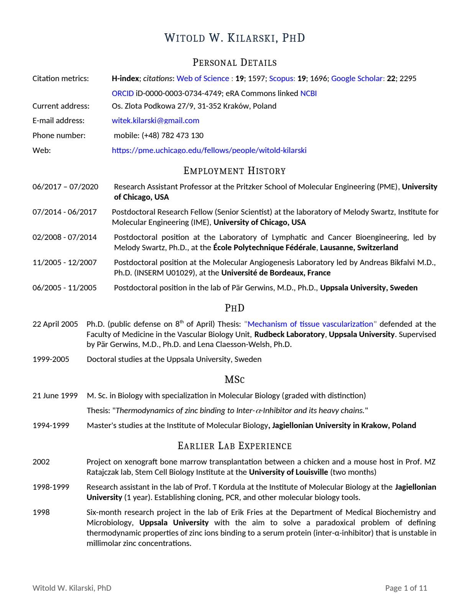
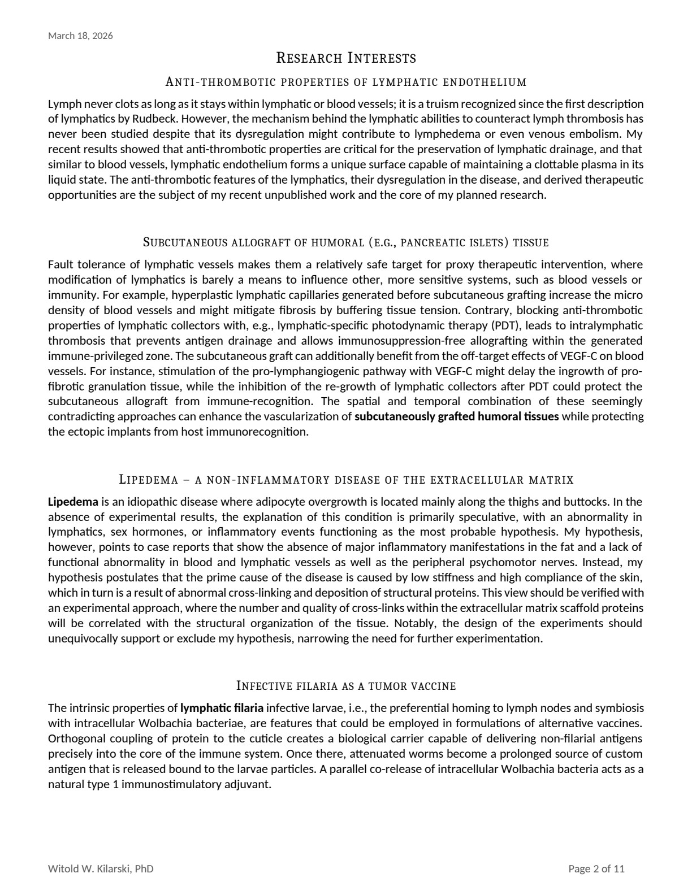
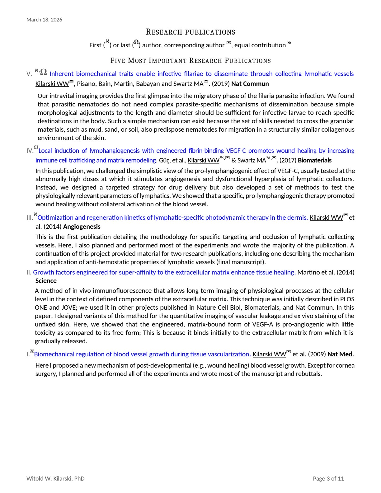
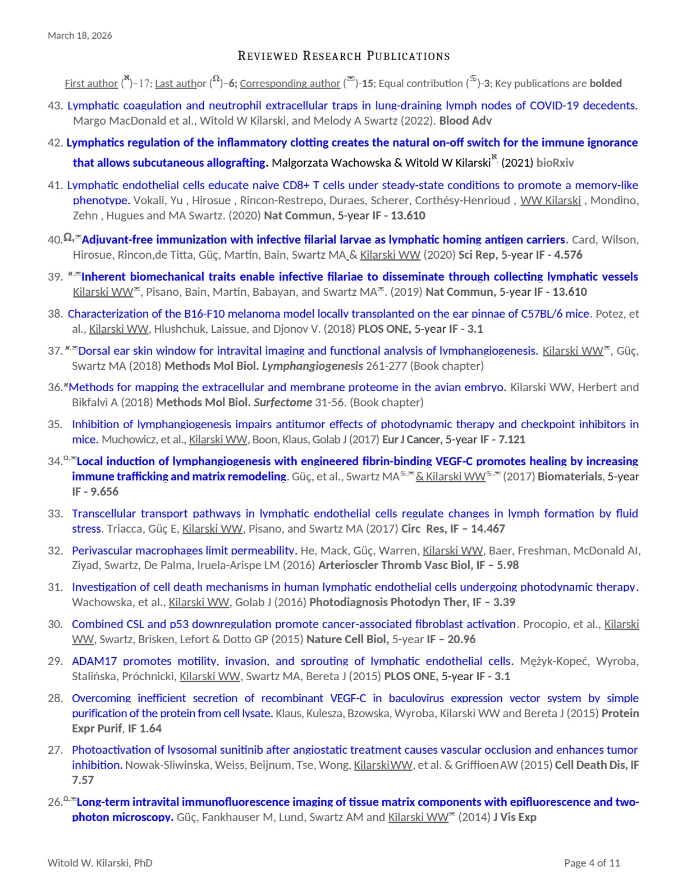
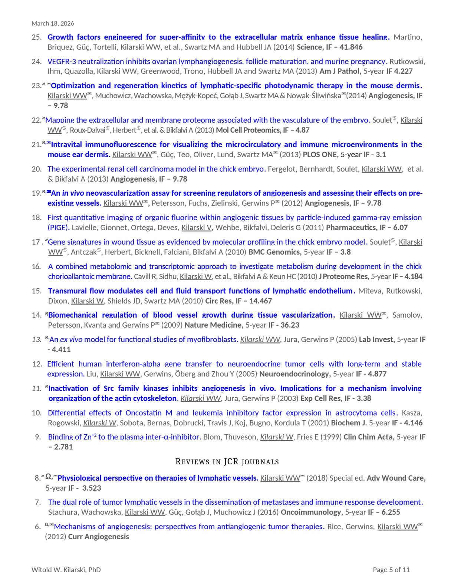
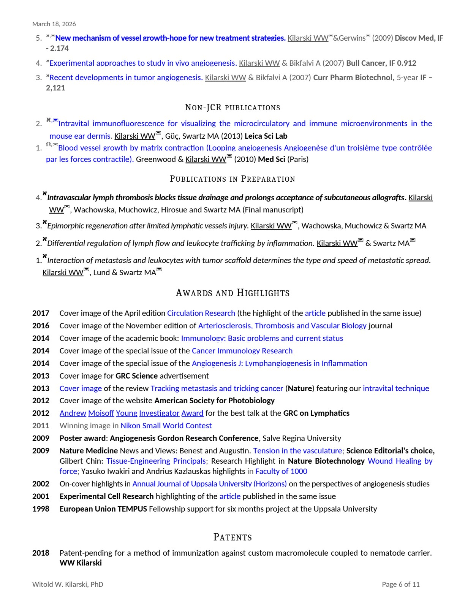
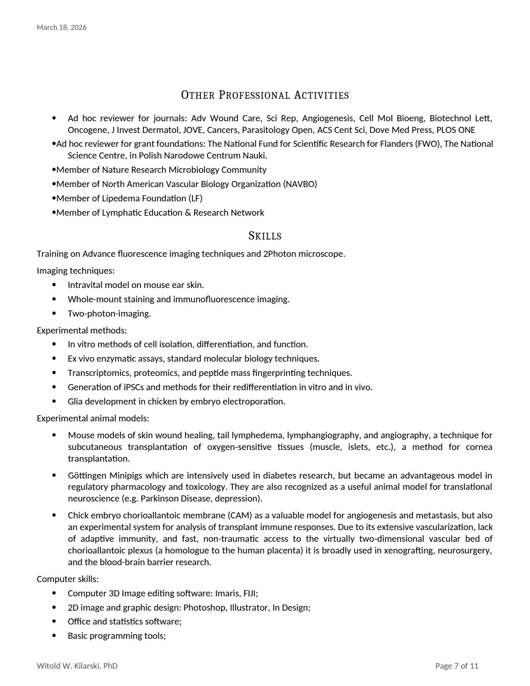
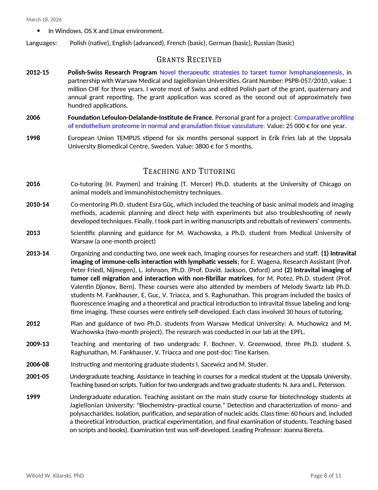
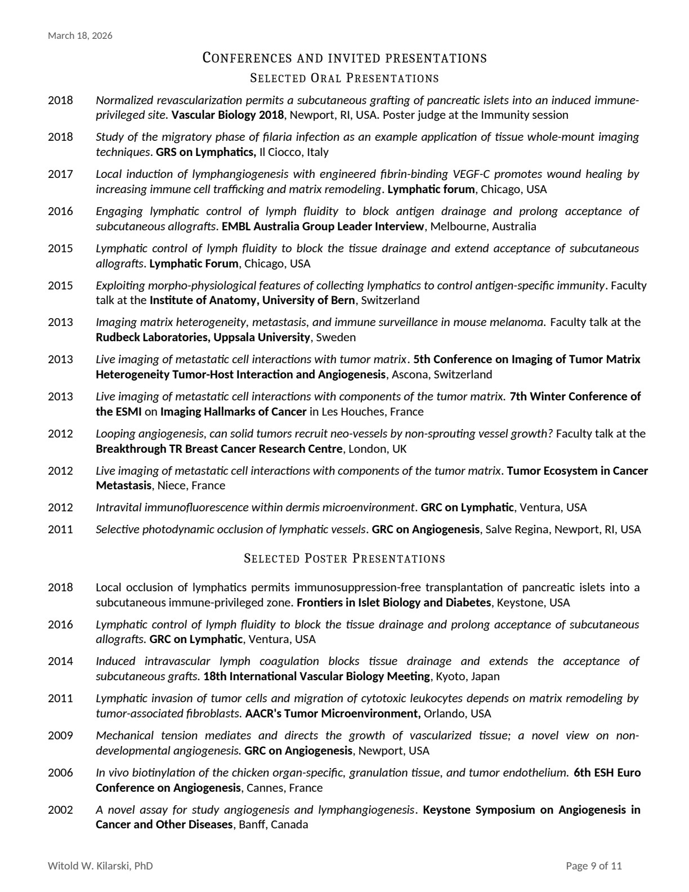
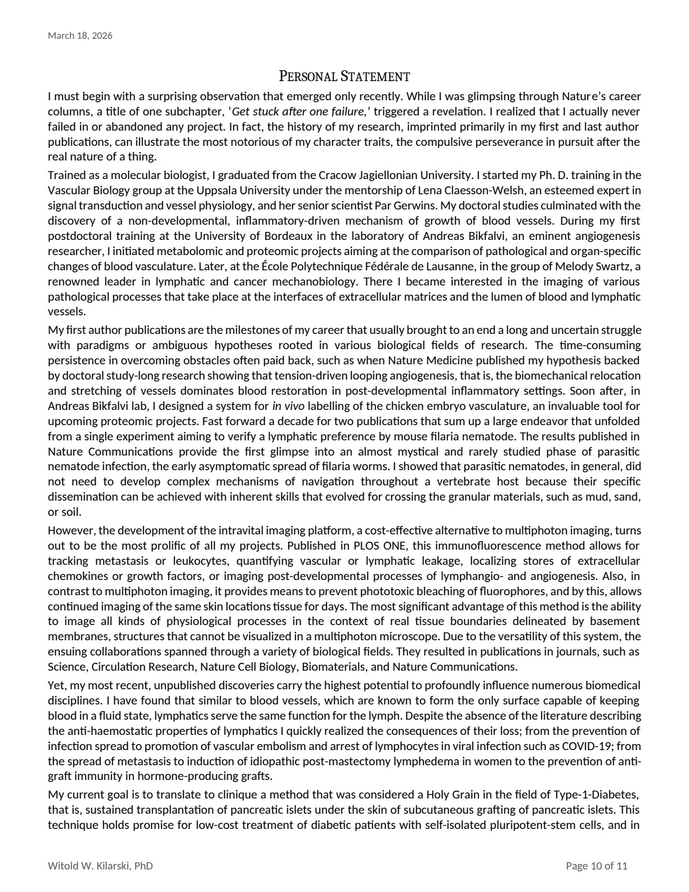
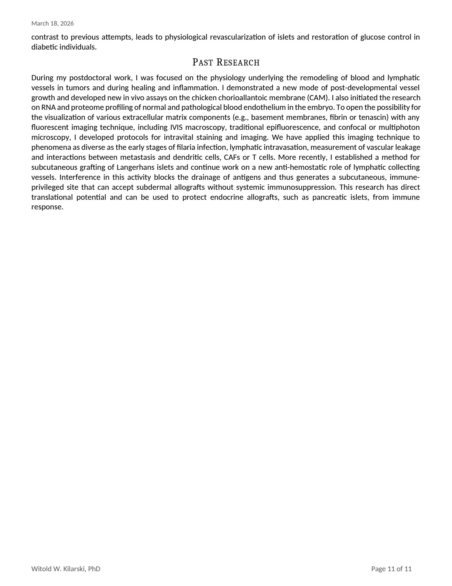
Dr Witold Kilarski
Biologist specialising in lymphatic system research. He received his PhD from Uppsala University (Sweden). He worked as a postdoc at EPFL Lausanne (Switzerland) and University of Bordeaux (France), then as Research Assistant Professor at the Department of Biomedical Engineering, University of Chicago (USA), in Prof. Melody Swartz's laboratory.
For over a decade, he conducted research on lymphatic vessel biology, publishing in international scientific journals. After returning to Poland in 2020, he applied for a NAWA grant to research the treatment of Type 1 Diabetes.
Currently unemployed — as a result of NCN's actions and Director Błocki's interference, his scientific career has been destroyed. Instead of conducting research on curing diabetes, he is forced to defend himself in court proceedings initiated by the institution that should support science.
Curriculum Vitae
Dr Witold Kilarski
Biologiste spécialisé dans la recherche sur le système lymphatique. Il a obtenu son doctorat à l'Université d'Uppsala (Suède). Il a travaillé comme postdoctorant à l'EPFL Lausanne (Suisse) et à l'Université de Bordeaux (France), puis comme professeur assistant de recherche au Département de génie biomédical de l'Université de Chicago (USA), dans le laboratoire de la Prof. Melody Swartz.
Pendant plus d'une décennie, il a mené des recherches sur la biologie des vaisseaux lymphatiques, publiant dans des revues scientifiques internationales. Après son retour en Pologne en 2020, il a sollicité une subvention NAWA pour des recherches sur le traitement du diabète de type 1.
Actuellement sans emploi — en raison des actions du NCN et de l'ingérence du directeur Błocki, sa carrière scientifique a été détruite. Au lieu de mener des recherches sur le traitement du diabète, il est contraint de se défendre dans des procédures judiciaires engagées par l'institution censée soutenir la science.
Curriculum Vitae
Dr Witold Kilarski
Biologe mit Spezialisierung auf Lymphgefäßforschung. Er promovierte an der Universität Uppsala (Schweden). Er arbeitete als Postdoktorand an der EPFL Lausanne (Schweiz) und der Universität Bordeaux (Frankreich), anschließend als Research Assistant Professor am Department of Biomedical Engineering der University of Chicago (USA), im Labor von Prof. Melody Swartz.
Über ein Jahrzehnt forschte er zur Biologie der Lymphgefäße und veröffentlichte in internationalen Fachzeitschriften. Nach seiner Rückkehr nach Polen im Jahr 2020 beantragte er ein NAWA-Stipendium zur Erforschung der Behandlung von Typ-1-Diabetes.
Derzeit arbeitslos — infolge der Maßnahmen des NCN und der Einmischung von Direktor Błocki wurde seine wissenschaftliche Karriere zerstört. Anstatt an der Heilung von Diabetes zu forschen, ist er gezwungen, sich in Gerichtsverfahren zu verteidigen, die von der Institution eingeleitet wurden, die die Wissenschaft fördern sollte.
Lebenslauf
Д-р Вітольд Кіларський
Біолог, що спеціалізується на дослідженні лімфатичної системи. Отримав ступінь доктора в Університеті Уппсали (Швеція). Працював як постдок в EPFL Лозанна (Швейцарія) та Університеті Бордо (Франція), потім як Research Assistant Professor на факультеті біомедичної інженерії Університету Чикаго (США), в лабораторії проф. Мелоді Свортц.
Протягом понад десятиліття проводив дослідження біології лімфатичних судин, публікуючись у міжнародних наукових журналах. Після повернення до Польщі у 2020 році подав заявку на грант NAWA для дослідження лікування діабету 1 типу.
Наразі безробітний — внаслідок дій NCN та втручання директора Блоцкого його наукова кар'єра була зруйнована. Замість дослідження лікування діабету він змушений захищатися в судових процесах, ініційованих установою, яка мала б підтримувати науку.
Резюме
Jestem dla Was — każdego, kto czuje się zastraszany
Ostatnio zszokowała mnie informacja, że Ukraińcy w Polsce są prześladowani, atakowani i nękani. Niech każdy Ukrainiec wie, że ja jestem dla nich — wszystkich, którzy czują się zastraszani. W miarę czasu i możliwości, zrobię wszystko, by pomóc.
Jako obywatel tego kraju i doktor nauk jestem zawsze bardzo wiarygodny dla polskich władz — znacznie bardziej niż obywatel innego kraju. Wiem to z doświadczenia, bo byłem na granicy polsko-ukraińskiej wiele razy i widziałem, jak działają polscy urzędnicy wobec Ukraińców. Wobec mnie tak działać nie będą.
Nie jestem prawnikiem, ale jestem człowiekiem, którego zawsze obchodzą najbardziej losy tych najbardziej słabych — bo po prostu taki jestem i koniec. Tych, których państwo czy bydlak (bo tak ich trzeba nazywać) chce terroryzować, bo może.
Wychowałem się traumatycznie na losach Żydów w moim mieście. Spałem w łóżku po żydowskim dziecku, które rozstrzelano na lokalnym kirkucie. Tego się nie zapomina. I tego nie pozwolę powtórzyć — nigdy, nigdzie, nikomu.
Możesz zadzwonić 24/7: +48 782 473 130 — Dr Witold Kilarski, Kraków.
Poniżej plakat A4 z wszystkimi informacjami w języku polskim i ukraińskim. Możesz go pobrać, wydrukować i rozdać tam, gdzie może trafić do kogoś, kto tej pomocy potrzebuje — w sklepie, na klatce, w przychodni, w szkole, w pracy.
⬇ Pobierz plakat A4 (PDF) — PL / UAŻadnych pieniędzy nie chcę i nigdy nie będę chciał. Pomoc jest bezpłatna.
I am here for you — anyone who feels intimidated
I was recently shocked to learn that Ukrainians in Poland are being persecuted, attacked, and harassed. Let every Ukrainian know that I am here for them — for all those who feel intimidated. As far as time and means allow, I will do everything I can to help.
As a citizen of this country and a Doctor of Science, I am always far more credible to Polish authorities than a foreign citizen. I know this from experience — I have been at the Polish-Ukrainian border many times and have seen how Polish officials treat Ukrainians. They will not treat me that way.
I am not a lawyer, but I am a person who has always cared most about the fate of the weakest — because that's simply who I am. Those whom the state, or some brute in it, wants to terrorize because it can.
I grew up traumatically on the fate of the Jews of my city. I slept in the bed of a Jewish child who was shot at the local Jewish cemetery. You don't forget that. And I won't let it happen again — never, nowhere, to anyone.
You can call me 24/7: +48 782 473 130 — Dr Witold Kilarski, Kraków.
Below is an A4 poster with all the information in Polish and Ukrainian. You can download it, print it, and hand it out wherever it might reach someone who needs this help — in a shop, a stairwell, a clinic, a school, a workplace.
⬇ Download A4 poster (PDF) — PL / UAI do not want any money and never will. This help is free.
Je suis là pour vous — quiconque se sent intimidé
J'ai été récemment choqué d'apprendre que les Ukrainiens en Pologne sont persécutés, attaqués et harcelés. Que chaque Ukrainien sache que je suis là pour lui.
En tant que citoyen de ce pays et docteur en sciences, je suis bien plus crédible auprès des autorités polonaises qu'un étranger. J'ai vu à la frontière comment les fonctionnaires polonais traitent les Ukrainiens. Avec moi, ce sera différent.
Je ne suis pas avocat, mais je suis quelqu'un que le sort des plus faibles a toujours profondément touché. J'ai grandi avec la mémoire des Juifs de ma ville — j'ai dormi dans le lit d'un enfant juif fusillé au cimetière juif local. Cela ne s'oublie pas.
Vous pouvez m'appeler 24/7 : +48 782 473 130 — Dr Witold Kilarski, Cracovie.
⬇ Télécharger l'affiche A4 (PDF) — PL / UAJe ne veux pas d'argent et n'en voudrai jamais.
Ich bin für Sie da — für jeden, der sich eingeschüchtert fühlt
Vor kurzem war ich schockiert zu erfahren, dass Ukrainer in Polen verfolgt, angegriffen und schikaniert werden. Jeder Ukrainer soll wissen: Ich bin für Sie da.
Als Bürger dieses Landes und Doktor der Wissenschaften bin ich bei polnischen Behörden weit glaubwürdiger als ein ausländischer Bürger. Ich war oft an der polnisch-ukrainischen Grenze und habe gesehen, wie polnische Beamte mit Ukrainern umgehen. Mit mir werden sie es nicht so machen.
Ich bin kein Anwalt, aber ich bin ein Mensch, dem das Schicksal der Schwächsten immer am wichtigsten war. Ich bin traumatisch mit dem Schicksal der Juden meiner Stadt aufgewachsen — ich schlief im Bett eines jüdischen Kindes, das auf dem jüdischen Friedhof erschossen wurde. Das vergisst man nicht.
Sie können mich 24/7 anrufen: +48 782 473 130 — Dr Witold Kilarski, Krakau.
⬇ A4-Plakat (PDF) herunterladen — PL / UAIch will kein Geld und werde es niemals wollen.
Я для вас — для кожного, хто почуває себе заляканим
Нещодавно мене вразила інформація, що українців у Польщі переслідують, на них нападають та знущаються. Нехай кожен українець знає, що я для вас — для всіх, хто почуває себе заляканим. Наскільки дозволять час і можливості, я зроблю все, щоб допомогти.
Як громадянин цієї країни і доктор наук, я завжди значно більш вірогідний для польської влади, ніж громадянин іншої країни. Я це знаю з досвіду — я був на польсько-українському кордоні багато разів і бачив, як польські чиновники поводяться з українцями. Зі мною вони так не вчинять.
Я не юрист, але я людина, яку завжди найбільше хвилювала доля найслабших — бо я просто такий. Тих, кого держава або хамло в ній хоче тероризувати просто тому, що може.
Я виріс травматично на долі євреїв мійого міста. Я спав у ліжку єврейської дитини, яку розстріляли на місцевому єврейському кладовищі. Цього не забувають. І я не дозволю цьому повторитися — ніколи, ніде, нікому.
Ви можете телефонувати мені 24/7: +48 782 473 130 — Д-р Вітольд Кілярський, Краків.
Нижче — плакат формату A4 з усією інформацією польською та українською мовами. Ви можете його завантажити, роздрукувати та роздати там, де він може потрапити до когось, хто потребує цієї допомоги — в магазині, під'їзді, поліклініці, школі, на роботі.
⬇ Завантажити плакат A4 (PDF) — PL / UAНіяких грошей я не хочу і ніколи не захочу. Допомога безкоштовна.
Czasem pieśń mówi więcej niż akta sądowe
Miejsce na kulturowe komentarze do tej historii — piosenki, wiersze, sceny, które rezonują z tym, co się tu wydarzyło. Nauka i prawo mówią swój język, ale czasem trafniej powie to kruk, duchy, słowiańska saga, Rob Bailey i Hamlet.
Playlist rośnie — kolejne utwory dojdą, kiedy życie podrzuci następne analogie.
Sometimes a song says more than a court file
A space for cultural commentary on this story — songs, poems, scenes that resonate with what happened here. Science and law speak their own language, but sometimes it takes a raven, ghosts, a Slavic saga, Rob Bailey and Hamlet to say it right.
The playlist keeps growing — more tracks will come as life throws up the next analogies.
Parfois une chanson en dit plus qu'un dossier judiciaire
Un espace pour les commentaires culturels sur cette histoire — chansons, poèmes, scènes qui résonnent avec ce qui s'est passé ici. La science et le droit parlent leur langue, mais parfois il faut un corbeau, des fantômes, une saga slave, Rob Bailey et Hamlet pour le dire vraiment.
La playlist s'agrandit — d'autres morceaux viendront quand la vie apportera les prochaines analogies.
Manchmal sagt ein Lied mehr als eine Gerichtsakte
Ein Raum für kulturelle Kommentare zu dieser Geschichte — Lieder, Gedichte, Szenen, die mit dem widerhallen, was hier geschah. Wissenschaft und Recht sprechen ihre eigene Sprache, aber manchmal braucht es einen Raben, Geister, eine slawische Saga, Rob Bailey und Hamlet, um es wirklich zu sagen.
Die Playlist wächst — weitere Stücke folgen, wenn das Leben die nächsten Analogien liefert.
Іноді пісня говорить більше, ніж судова справа
Місце для культурних коментарів до цієї історії — пісні, вірші, сцени, які резонують із тим, що тут сталося. Наука й право говорять своєю мовою, але іноді потрібен крук, духи, слов'янська сага, Роб Бейлі та Гамлет, щоб сказати це точніше.
Плейлист зростає — інші треки додадуться, коли життя підкине наступні аналогії.
Dyskusja
Podziel się swoją opinią. Komentarze są przechowywane na GitHub Discussions — otwarta platforma, bez cenzury.
Discussion
Share your thoughts. Comments are stored on GitHub Discussions — an open platform, no censorship.
Discussion
Partagez votre avis. Les commentaires sont hébergés sur GitHub Discussions — une plateforme ouverte, sans censure.
Diskussion
Teilen Sie Ihre Meinung. Kommentare werden auf GitHub Discussions gespeichert — eine offene Plattform, ohne Zensur.
Обговорення
Поділіться своєю думкою. Коментарі зберігаються на GitHub Discussions — відкрита платформа, без цензури.